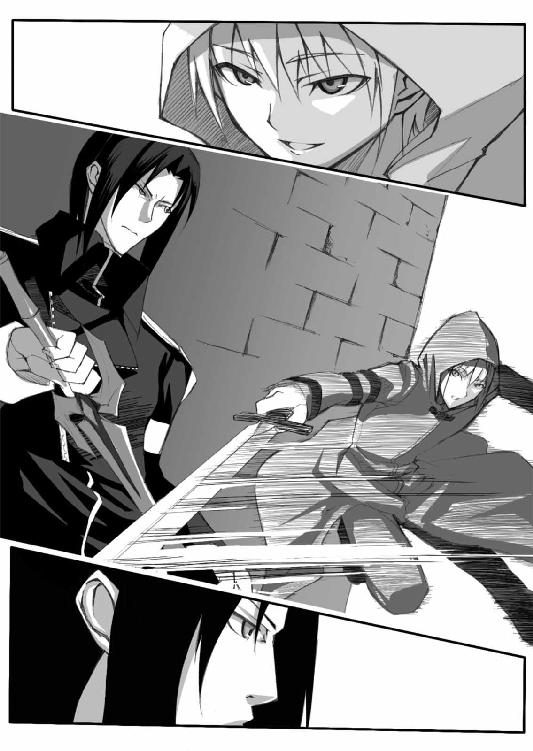

| 9TAILS ―ナイン・テイルズ 疾風のサキ― (富士見ファンタジア文庫) | |
| 南房 秀久 | |
| (2013) | |
9 TAILS
─ナイン・テイルズ 疾風のサキ─
南房秀久

富士見ファンタジア文庫
本作品の全部または一部を無断で複製、転載、配信、送信したり、ホームページ上に転載することを禁止します。また、本作品の内容を無断で改変、改ざん等を行うことも禁止します。
本作品購入時にご承諾いただいた規約により、有償・無償にかかわらず本作品を第三者に譲渡することはできません。
本作品を示すサムネイルなどのイメージ画像は、再ダウンロード時に予告なく変更される場合があります。
本作品は縦書きでレイアウトされています。
また、ご覧になるリーディングシステムにより、表示の差が認められることがあります。
口絵・本文イラスト シンゴ
トロンヘイム王国の都から、馬で半日ほどの距離にある、アシュロンの深き森。
その森の奥に、半ば朽ち果て、近隣の村々に住む古老たちからも忘れかけられている遺跡がある。
今、その遺跡の前に。
国王以下、トロンヘイム王家の面々と、宮廷の主たる家臣が顔を揃え、遺跡の正面扉が開く時を待っていた。
「予定の刻限を、かなり過ぎております」
王弟である大公のハディングが、周囲に松明が焚かれるのを見て、王に告げる。
「............」
煌びやかな玉座を用意させ、それに腰を下ろしている老王は、チラリと弟を見ただけで、何も語ろうとはしない。
「心配ですな、王子の身に何か起きておらねばよろしいが？」
王子が死ねば、王位継承権第一位に昇格するハディングは、抜け目なく憂いの表情を作る。
鬼神の類とされる〝邪妖〟が巣食うと言われる、封魔殿。
その封魔殿の内部に、剣一振りを携えたのみで三日の間留まり、見事生還すること。
それが〝退魔の儀〟と呼ばれる、王家伝統の儀式なのだ。
王位継承者にとっての成人の儀にあたる退魔の儀は、通常、該当者が十六の年を迎える日に行われる。
だが、トロンヘイム王国は現在、ウートガルト共和国との国境線争いの最中。
一日も早く後継者の正式指名をとの声が宮廷で持ち上がり、アラン王子は十歳という異例の幼さで、この儀に及ぶこととなったのである。
「陛下」
そう声をかけたのは、五十代半ばに見える灰色の髪の誠実そうな男。
平民でありながらその才覚を買われて宮廷入りした豪商、ダーレン・ハザンである。
「やはり退魔の儀を執り行うには、アラン殿下はお若過ぎたのでは？」
ハザンはそう言うが、実は、儀式自体はそう危険なものではない。
扉の近くに留まる限り、邪妖に出会う可能性はほとんどない上、王子は魔を追い払う護符を秘密裏に渡されているはずなのだ。
「......ここで死ぬようならば、それだけの器であったということ。失っても惜しくはないわ」
深いしわの刻まれた顔をわずかにしかめ、ようやく口を開いた王は言い切る。
と、その時。
「！」
「あれを！」
家臣たちが一斉に、禍々しい彫刻の施された門の方を指さした。
「......ほう」
目を細める大公ハディング。
大理石でできた重い扉はゆっくりと、だが、確実に開きつつあった。
そして。
「おおっ！」
一同は、歓声とも嘆息とも区別しがたい声を発する。
開かれた扉の隙間から、赤黒い服に身を包んだ黒髪の少年が姿を現わしたのだ。
「アラン！ 我が甥よ！」
やや芝居がかった足取りで真っ先に王子のもとに駆け寄ったのは、ハディングだった。
「これは？」
王子を抱きとめた大公は、血の匂いに顔をしかめる。
「心配は無用です。これは......わたしの血ではありません」
喘ぐような息のもと、王子は叔父のハディングに告げた。
脇腹や背中に残った白い部分から、もともとアランの身に着けていた服の色が暗赤色ではなかったことが分かる。
服は、血で染まって赤くなっていたのだ。
「まさか......邪妖と戦われたのか？」
大公はアランの胸元を確かめるが、邪妖を払うはずの護符を下げていた様子はない。
「......はい」
アランはふらつきながらも叔父の手を離れ、自分の足で父王の前に進み出る。
「父陛下......」
少年は老王の前に跪き、赤い刃の剣を捧げた。
「七十二柱の邪妖、この剣に封印いたしました」
アランはそれだけ告げると、その場に倒れ込んで気を失う。
「誰か！ 手当てを！」
ハディングの命令が飛ぶと、慌てた側近たちが駆け寄って王子の介抱にかかった。
「馬鹿な......封魔殿の邪妖を、不死たる邪妖のすべてを封印しただと？ そんな話はかつて聞いたことがない」
啞然とする父王。
「だが、この剣......尋常のものとは思えませぬな」
王子の手から落ちた剣を無造作に拾い上げようとしたハディングは、一瞬、まるで赤熱の鉄にでも触れたかのように顔を歪めて指を離した。
「......面白い」
ハディングはつぶやき、今度は柄を腰に巻いていたサッシュで覆って慎重に剣を摑み上げる。
「これを......」
「なんと禍々しい色か......」
ハディングの差し出した剣を見て、嫌悪の情を顕わにする王。
「殿下にお与えになった剣は、最初からこのような色を？」
ダーレン・ハザンが、ゴクリと唾を飲み込んで尋ねる。
「いや、アランに余が与えしは、銘刀ではあるが、決してこのような......」
「......ご覧ください」
ハディングは赤く輝く剣を鞘に戻すと、その柄に直に触れた指先を王に見せる。
「王子は何事もなくこの剣を握っておりましたが、私が持とうとするとこのように」
大公が示した指には、皮が剝けかけた火脹れの痕があった。
「ともかく、この剣は王子以外には使えそうにありませんな」
ハディングはほんの少し未練の色を残して、剣をアランの傍らに置く。
「アラン......邪妖に魅入られたか......末恐ろしい子よ」
父王はまるで別の生き物を見るような目で息子を見下ろすと、玉座から立ち上がった。
「王都に戻る。この者には、十分な手当てを施してやれ」
「はっ！」
王に命じられた家臣たちが、丁重にアランを抱え上げ、治療のために天幕に運ぶ。
「己が息子を〝この者〟か......。我が兄とはいえ、情の薄いことよ」
自身の天幕に戻る王の背中を見送り、つぶやく大公ハディング。
「おそらく、邪妖を払う護符を王子に渡さなかったのも、王の差し金。......俺が王位に就く望みも、まだまだ消えていないか」
野心が静かに燻る大公の瞳は、松明の明かりを反射し、暗闇に妖しく輝いていた。
＊ ＊ ＊
これより半年の後、国王カモラク五世崩御。
幼年の王の即位による混乱を恐れた十二人委員会は、大公ハディングを国王代理に推挙した。
だが、ハディングはその後、十二人委員会を懐柔、正式に王に即位し、皇太子アランは大公の地位に就けられた。
新王ハディングは友好関係にあったヒベルニア神聖王国に軍を進め、ここに新領土獲得戦争が勃発。
さらに国内では、新王の政策に対する不満が噴出。
宮廷と十二人委員会は、これを力で抑えつけた。
数年後、国民と宮廷の橋渡し役であった、豪商ダーレン・ハザン暗殺。
トロンヘイム王国は、麻のごとく乱れた。
そして、さらに数年が経過し......。
「アラン・シーヴァルドかい？」
月のない、雨がそぼ降る深夜。
王都の裏通りを歩くアランの前に、小さな影が立ちはだかった。
「王都守備隊第九中隊長、アラン・シーヴァルド？」
「それが？」
アランは濡れた黒髪を指で搔き上げ、蒼い目を細める。
「このあたりをうろつく男娼ではないな。見ぬ顔だ」
「無用心だよね」
フードを目深に被った小柄なその影は、厚手の外套をめくり上げて、腰に帯びた剣の柄を顕わにする。
「先王の長子で、現国王ハディングの甥、ヴァイマーヘン大公アランともあろう方が、馬車にも乗らずに真夜中の一人歩きなんてさ。辻強盗に襲ってくださいって、言ってるみたいなもんだよ」
近くの窓から漏れる光にかすかに照らし出された刺客の横顔は、まだ幼さの残る少年のものだった。
「腕には覚えがあるようだな」
アランはつぶやき、自らも黒い外套を脱ぎ捨てた。
その腰には、質素な拵えの鞘に納められた剣が見える。
「先に抜くがいい」
長身瘦軀のアランは両手を身体から離して広げ、どこからでも打ち込んで来いと言うように誘う。
「甘いよ！」
小柄な刺客は、雨に濡れた石畳の上を滑るようにして間合いを一気に詰めた。
「食らえ、〝三日月〟！」
ギュン！
抜き放たれる刺客の白刃が風を切り裂き、アランの脇腹に迫る。
ガッ！
「......この程度か？」
アランは冷ややかな目で少年を見た。
並みの剣士ならば、胴を両断されていたはずの抜刀技。
それを、半ば鞘に納まったままのアランの剣は、易々と受け止めていたのだ。
ビュッ！
アランはそのまま、左の手刀で刺客の首筋を狙う。
「！」
これを紙一重で避けた刺客の少年はいったん間合いを取ると、外套を濡れた石畳の上に脱ぎ捨てて山吹色の髪を振り、屈託のない笑顔を見せた。
「......やるね」
少年の大きな菫色の瞳が、歓びに輝く。
「やっぱ、一万ダカットの報奨金は、伊達じゃないってこと？」
「たった一万とは、大分値切られたな」
アランは剣を完全に抜き放つと、剣先を無造作に下げた。
鈍く赤色に輝く剣身。
それがそぼ降る雨粒を弾き、まるで怨嗟の呻き声のような音を立てる。
オオオオオオーン！
「......へえ、それ？ 血を糧とする七十二柱の邪妖を宿すと言われる、飢魂の剣って？」
耳障りな剣の声を聞いた少年は、間合いをゆっくりと詰めつつ、右手の石壁を引っ搔くように、抜き身の刃を斜めに擦りつけた。
キキキキキィー！
青白い火花が、小雨の中で光る。
少年の笑みが、その火花の輝きで闇の中に浮き上がった。
「あんたを殺ったら、その剣を貰おうかな⁉」
シュバッ！
アランの懐に飛び込んで、胴を薙ごうとする少年。
降り注ぐ細かな雨粒が両断され、空中に白い軌跡を描くが、アランはわずかに左足を引いただけで危なげなくこれを見切る。
だが。
チュイーン！
空振りしたかに見えた少年の剣が、刃を返すと同時に後方の家の壁を直撃し、再び火花を散らした。
ギュン！
初めから、これが狙いだったのだろう。
壁に当たった反動で速度を上げた白刃は、先ほどと逆の軌跡を描いてアランの喉元に向かって伸びた。
音速を超えた剣先が衝撃波を生み、周囲の空気を歪ませる。
しかし、アランは冷静に柄頭でこれを受けると、その力を利用してさらに剣速を上げ、少年の手首の内側の動脈を狙った。
「！」
少年は、体勢を崩しながらも辛うじてアランの剣をやり過ごすと、後ろに跳んで間合いを取る。
「......ふう」
かすめた飢魂の剣に裂かれた袖口を見て、少年は口笛を吹く。
「僕の〝飛竜返し〟をかわしたの、あんたが初めてだよ」
「壁に剣先を擦り付けるとは、奇妙な戯れ事をすると思ったが......」
アランは眉をひそめる。
「壁との距離を測っていたか。いかにも暗殺慣れした邪剣。まるで獣の剣だな」
「あんた、最高だね」
破顔する少年。
「できればこのまま、ずっとあんたと殺り合ってたいくらいに。でも、これ以上時間をかけると、人が集まってくるからね。悪いけど、けり、つけさせてもらうよ！」

少年は剣を水平に構え、目を閉じて意識を集中した。
「......我が身に宿りし、闇の力よ！ 血と苦悶と悲嘆に飢えし、悪しき存在よ！ 我......汝を解放す！」
すると。
ザザザザザザザッ！
周囲の空気が振動し、雨粒を弾き飛ばすと同時に、光の渦が少年を中心に生まれて、その身体を包み込んだ。
暗い紫から、眩いばかりの鮮やかな紅色へ。
光は次第に変化し、やがて、少年の身体は緋色の疾風の衣をまとったかのようになる。
そして。
「行くよ」
目蓋を開いた時、少年の瞳は炎色に変化していた。
まるで野獣のようなその目が、今、初めてその存在に気がついたようにアランを見つめる。
『......なるほど、小僧、ぬしにはあの男、ちと荷が重いか？』
少年の口から、先ほどまでの声とはまったく別の、からかうような調子の声が発せられた。
やや古風な発音をする、女性のような声だ。
「黙れよ、化け物」
今度は少年の声。
「あいつの血が欲しかったら、僕に協力しろ」
『よかろう』
別の声は答えた。
「......ほう。その身には、何かが憑いているようだな？」
アランの口元に少し、面白がるような表情が浮かぶ。
「多少は楽しませて貰えそうだ」
「楽しむのはこっちさ！」
ザッシャーッ！
舞い上がる水飛沫。
八相の構えから地を蹴って一気に距離を詰め、少年はアランの肩口を狙った。
ドガガガガッ！
スレスレのところでアランがこれを見切ると、少年の剣はその足元の石畳を割り砕き、剣身の半分ぐらいまで深くめり込む。
「......なるほど、さっきまでとは段違いと言っていい」
摺り足でやや距離を取りながら、正眼に構えるアラン。
「剣速は三倍から四倍。剣圧は八倍以上といったところか。こうでなくては面白くない」
「こうなるともう、僕自身にも抑えが利かないんでね！」
少年は畳みかけるように攻撃を繰り出した。
右袈裟懸けから、車輪を経ての逆胴、そして突き。
通常の視力では到底追えない動きである。
だが、血色の輝きを放ちつつ脈動する飢魂の剣は、これをことごとく鎬で受け、さらに押し返す。
「名を聞いておこうか、少年？」
冷静に間合いを測りながら、アランは尋ねた。
「サキ！」
緋の疾風をまとった少年は、冷たく淀んだ夜の空気を切り裂きながら答える。
「ディープスガッセのサキ！」
ディープスガッセは、泥棒小路の意。
王都でも最も荒んだ貧民街だ。
「ふっ、こそ泥通りのサキか。では、サキ。こちらも少しばかり手の内を見せるとしよう」
アランは飢魂の剣を背中に回すと、やや前屈みの姿勢から倒れ込むようにして突きを放った。
ギュン！
「......加速？」
それは、変貌を遂げたサキの速さの、さらに数段上をゆく瞬技だった。
もはやサキの目にも、アランが遠い間合いからふっと姿を消し、突然目の前に現われたようにしか映らない。
「速い！」
剣先が自分の胸元に来てから、さらに剣身が伸びるような感覚を受ける片手突き。
キュインッ！
周囲が一瞬、明るく照らし出されるような火花が飛び散る。
「退けば......殺られる！」
サキは辛うじて飢魂の剣を撥ね除けると、大きく踏み込んで頭蓋を叩き割るように剣を振り下ろした。
ガッ！
これを鍔元で受ける飢魂の剣。
二人の戦いは、鍔迫り合いの膠着状態に入ったかのように見える。
「いくら速くても、この状態なら力の勝負！」
ジリジリと、壁際にアランを追い詰めるサキ。
「このまま......押し切る！」
サキは一気に飢魂の剣を断ち割ろうと、さらに剣圧を高めた。
緋色の疾風が渦を作り、雨滴を地面から夜空へと吸い上げる。
しかし。
「......終わりだ」
アランは宣言した。
と、同時に。
飢魂の剣が眩いばかりに輝きを増すと、サキの剣を手元近くから真っ二つに断ち割った。
ヒュン！
鍔から指一本分の幅ほどを残し、折れた白刃が夜空に舞う。
「くっ！」
驚愕の表情のサキ。
そして、アランの必殺の一撃がそのまま、サキの肩口から胸までを一気に両断しようとしたその時。
オオオーンッ！
地の底から湧き上がるような低い共鳴音が、周囲の湿った空気を震わせた。
そして、その不気味な音とともに、飢魂の剣の歪んだ赤い輝きから光の触手のようなものが伸びると、サキがまとう緋色の疾風を包み込もうとする。
（飢魂の剣！ この子供を喰らう気か⁉）
緋色の風と、濁った血を思わせる暗赤色の拍動。
その二つが交じり合い、アランの目の前でひとつの輝きになろうとしていた。
周囲の空気が歪み、瘴気が辺りに漂う。
（させるか！）
邪悪な意志がぶつかり合うのを感じたアランは、咄嗟に剣を逆手に持ちかえた。
ガッ！
サキの鳩尾に食い込む、飢魂の剣の柄頭。
すると。
「ア......ラン」
サキの身を包んでいた緋色の疾風が、空気に溶け込むようにふっと消えた。
同時に炎色に輝く瞳も、通常の菫色に戻ってゆく。
一方、飢魂の剣は、獲物が逃げてゆくのを感じ取ったかのように、憤怒を顕わにしてどす黒く脈打つ。
「......邪妖どもが。貴様らの望み通りにはさせん」
アランは剣を強引に鞘に納めた。
『......ほう』
石畳の上に崩れ落ちながら、一瞬、その瞳がもう一度炎色に煌き、サキの中にいるもうひとつの意志らしき存在が、不思議そうにアランを見つめた。
『何ゆえ、この小僧を殺さぬ？ 変わった男よ』
だが、炎色の光はすぐに消え、それとともに、声も沈黙する。
「......まさか？」
つぶやいたアランはサキの身体を腕で受け止めると、チラリと背中の方に目をやって声を発した。
「いるのだろう？ 姿を見せろ」
この声に応えるかのように、突然、ひとつの黒い影が音もなく、石畳の上に跪く形で姿を現わした。
「ここに」
黒い影は、まだ若い女性の声で言う。
「お見事です、閣下」
「惑香霞を張ったのはお前か、ヨルカ？」
アランは周囲を見渡した。
いつの間にか、この界隈だけがぼんやりとした白いヴェールに包まれている。
「無粋な介入は好まれないと思いましたので」
と、女。
ヨルカと呼ばれた女が張ったのは、特殊な香による一種の結界。
周囲にこの香を焚くことにより、踏み入ろうとする者の感覚を惑わし、風の強い場所でない限り一定時間、部外者の侵入を断つことができるのだ。
「気を遣わせたな」
アランはサキを石畳の上に横たえる。
「さきほど、ディアンたちを呼びました。もうすぐ到着するころかと」
ヨルカは顔を上げた。
二十代前半か、半ば。
妖艶さと無邪気さを兼ね備えた、大人の女性の香りが漂ってくるような美女である。
瞳は霞色。
長い黒髪を後ろでまとめ、動き易そうな黒装束の下には鎖帷子が見える。
小剣を背中に、地面とほぼ平行になるように挿しているのは、闇隊士と呼ばれる彼女たち独特のやり方だ。
「周囲に他の刺客の気配はありません。今、探らせていますが......」
と、ヨルカが言いかけた時。
「隊長！」
黒い外套をまとった三人の男女が、アランたちのいる路地裏に駆け込んできた。
「ふ、来たか」
口元にかすかに笑みをたたえるアラン。
「隊長！」
真っ先に現われた長身の青年は、まだ十代だろう。
髪はくすんだ金髪で、精悍と呼ぶにはやや柔和な顔つき。
身の丈ほどもある両手用の大剣を背負っている。
「そいつですか、刺客は⁉」
青年は呼吸を整えながら、アランに尋ねる。
「子供？」
後に続いてきた赤毛の女が、形のいい眉をひそめた。
こちらもまだ、十代に見える。
手には、市街地での任務に合わせて柄をやや短くした矛槍。
ヨルカに比べるとまだ青い蕾を思わせる面立ちで、大きなエメラルドを思わせる瞳が魅惑的である。
「そうですね、ヴィスナ」
意識のないサキの傍らに膝を突いて人相を検めた若者が、眼鏡をつっと指で押し上げながら立ち上がった。
「ですが、舐めてかからない方がいい。この少年の人相風体、手配書にあったものと一致します」
知的で温厚な顔つきのこちらは、ほぼ、ヨルカと同年代の二十代前半。
腰には、やや浅めの反りが入った片刃剣。
暗褐色の髪はキッチリと整えてあり、制服にも全く汚れやしわがない。
性格の生真面目さが、そのまま身だしなみに表われている感じである。
この三人がまとっている制服は、王都守備隊正規のもので、黒鋼女郎蜘蛛の糸を織り込んで防御効果を高めた〝甲外套〟と呼ばれる黒い外套が特徴。
隠密活動に適した軽装のヨルカとは、立場が違うことが見て取れる。
「手配書？」
と、面倒臭そうな表情になる赤毛のヴィスナ。
「ええ。ここ半年ほどの間にあった殺人事件のうち、八件の目撃証言に、この子らしき少年の姿があります」
眼鏡の若者は立ち上がると、アランを見ながら記憶している事例を淡々と列挙する。
「そのうち、二月七日の密偵マルコヴィッチ殺害、四月十八日のイリシュ参事会員暗殺、五月三日の守備隊第七中隊強襲事件。この三件に関しては、ほぼ確実にこの少年の単独犯と思われます。身柄を確保し、上に報告しますか？」
「......いや。ロレル、それは少し待とう」
アランは少し考えてから、頭を振った。
「こやつ、この年にしてはなかなかの腕だ。それに面白い力も持っている」
「炎色に瞳が変化し、緋色の風をまとう？」
と、尋ねるロレル。
「ああ」
うなずくアラン。
「そうですか。......やはり、手配書にあった通りですね」
ロレルは眼鏡の奥の瞳に笑みをたたえる。
「よしてくださいよ、隊長」
アランの考えを悟り、うんざりとした顔で口を挟む大剣の青年。
「いくらうちが人手不足だからって、殺し屋のガキを」
「ディアン、第七中隊は事件の時に人員の三分の一以上を失ったわ」
ヨルカは気を失っている少年を見下ろして、悪戯っぽく微笑む。
「この少年がその犯人だとして、もしも手懐けられたら、第九小隊、いえ、あなたたち〝九尾の猫〟にとっては大きな戦力になると思うけど？」
「あのな、信義の問題っていうのがあるだろうが！ 別の中隊とはいえ、隊士を殺した奴を仲間にできるか！」
ディアンと呼ばれた大剣の青年は、咎めるような視線でヨルカを振り返った。
「そもそもお前な、隊長が襲われるのを、最初から最後まで見ていたのか⁉」
「ええ」
「なら、なんで加勢しない⁉」
「あのねえ、まだ分かってないの？」
腰に手を当ててディアンを睨むヨルカの口調は、アランに対する時とは明らかに違っている。
「わたしたち〝闇〟隊士はね、あなたたち正規の隊士とは身分が違うの。非合法のどんな汚い仕事でもやる代わり、契約無しには動かない。アラン隊長とは護衛任務に関する明確な契約を結んでいないから、手を貸していたらタダ働きじゃない？」
「けどな！」
「もちろん」
猶も顔をしかめるディアンの唇に、ヨルカは指を当てた。
「アラン隊長は大切なお得意様だし、本当に危なかったら助けたわよ。でも、結局平気だったでしょう？」
「う......ま、まあな」
照れ臭そうに鼻の頭を搔くディアン。
「いちゃつくんなら、二人きりの時にして欲しいんだけど？」
友人以上であることを思わせる二人の親しげな様子に、ヴィスナが眉をひそめたその時。
「......報告いたします」
ヨルカのものとよく似た隊服をまとった少女が、ふっと一同の前に姿を現わした。
「ひっ！」
少女に驚いたヴィスナは、声を上げて飛び上がる。
「周囲に不審な人影無し。恐らくはその刺客、単独行動かと」
アランとヨルカの前に跪いた華奢な銀髪の少女は、硬い調子の声でそう告げた。
「......止め、刺しますか？」
少女は小剣を抜く。
透き通るような肌に、翠の瞳。
表情の硬さがなければ、美しいと言ってもいいだろう。
もっとも、ヴィスナやヨルカのような、街中を歩いていて、誰もが振り返るといった感じとは少し違う。
街頭の大樹の陰にひっそりと咲く小さな花のような、清楚な美しさを少女はたたえていた。
「今はその必要はないわ」
「......はい」
ヨルカに言われた少女は、剣を鞘に戻す。
「その子、新しい闇隊士か？ 初めて見る顔だな」
と、ディアンはヨルカに尋ねる。
「里から来たばかりの見習いよ。今、仕事を覚えさせているところ。正式に任務に就くのは、半年くらい先になるはずね」
ヨルカは説明し、少女を立たせる。
「イーファだ」
無愛想な少女は、ディアンを見上げて名乗った。
「だ、じゃない。イーファです、でしょ」
ヨルカは少女の頭を小突くと、ディアンに向かってペロリと舌を出す。
「ごめん。なんか、礼儀を知らない上に、この子ったら愛想なくって」
「なんて言うか......面白い子だな」
苦笑するディアン。
「......フィフィの妹よ」
ヨルカは声をひそめて付け足した。
「すると、例の能力の？」
ディアンはフィフィという名に、わずかに眉をしかめる。
「そう」
ヨルカはうなずくと、アランを振り返って尋ねた。
「この少年の背後関係を探りますか？」
「相変わらず商売がうまいな」
アランはふっと笑う。
「お褒めに与り、光栄ですわ」
「前金で二千ダカット。成功報酬は五千。契約書は屋敷に回せ。署名する」
「ただちに」
ヨルカは一礼し、イーファとともに闇の中に搔き消えるようにその場を辞した。
「ああいうとこ、見事だよね」
小さく口笛を吹くヴィスナ。
「闇隊士の里では、子供が歩けるようになったその日から、隠密行動の訓練が始まるそうですから」
ロレルが眼鏡の奥の目を細める。
「最初の試練を生き残る者は、三人にひとり。男子は大抵、七つ目の試練までに振り落とされるらしいです」
「......マジ？」
「噂が全部真実だとは言いませんよ。まあ、そういう噂を流すのも、一種の諜報活動、ということでしょう」
ロレルは肩をすくめた。
「それにしても、手付けが二千ダカットに、さらに成功報酬五千ですか。隊の会計を預かる身としては、頭が痛いですね」
「ディアン」
アランはロレルの愚痴など耳に入らない様子で、大剣の青年に声をかける。
「この少年はお前に任せる。隊で使えるようにしろ」
「......え？ 俺が、ですか？」
自分を指さすディアン。
「そういうことらしいです。まあ、頑張ってください、面倒見のいいディアンさん」
目を丸くするディアンの肩を、ロレルは叩いた。
「私は先に詰め所に戻っていますから」
「あたしも～」
ヴィスナは欠伸をして、肩に矛槍を担ぐ。
「た、隊長？」
顔を引きつらせるディアン。
「行け。さすがに今夜はもう、襲われることはあるまい」
アランはそう告げると、途方に暮れるディアンに背を向け、表通りに向かって歩き出した。
＊ ＊ ＊
かつては叔父のものであり、大公位を受け継ぐと同時にアランの所有物となったヴァイマーヘン大公家の王都屋敷は、西の街門近くの大邸宅が建ち並ぶ地域にあった。
夜明けも近いこの時間、この界隈に人通りは少ない。
貴族のほとんどは六頭立ての馬車で外出するので、このあたりで徒歩の者を見たら、どこかの屋敷の使用人と見てほぼ間違いない。
途中ですれ違った男女も、外で逢瀬を重ねるどこかの使用人だろう。
アランの顔を見ると、ギョッとした表情になり、早足で逃げるように去ってゆく。
「......物盗りと見られたか？ この殺気では無理もない」
アランは先刻の斬り合いの興奮が冷めていないことに気がつき、苦笑した。
すでに霧雨は止み、東の空は明るくなりかけている。
「......？」
自分の屋敷のそばまで来たところで、アランは屋敷の門柱に寄りかかって座る小柄な姿を見つけた。
「人の屋敷の前で何をしている？」
アランはその姿に歩み寄ると、声をかける。
「ヴァイマーヘン大公、貴方を......」
座っていたのは、十五、六に見える裸足の少女。
「貴方をお待ちしていました」
少女は顔を上げ、か細い声で言った。
「......私を？」
この少女と面識はないはず。
アランは少女を観察する。
やや銀に近い金髪。
無駄な贅肉のない長い四肢。
ゆったりとした純白の衣装は、雨に濡れて肌に張り付き、半透明になっている。
どのくらいここで待っていたのだろうか？
雨に体温を奪われたらしく、ほんの少し肌が蒼褪めている。
青空を思わせる澄んだ瞳と、清潔感の漂う柔らかそうな唇に、アランの意識は否応無しに惹きつけられる。
「ヒベルニアの訛り。巫女か？」
アランは言った。
隣国であり、現在はこのトロンヘイムと交戦状態にあるヒベルニア神聖王国は、一種の神権国家。
その政治、軍事の中枢をなすのは、巫術使いや巫女と呼ばれる、神をその身に宿すことのできる神官である。
アランの目の前に立つ少女からは、どことなくその巫女を思わせる神聖な雰囲気が漂ってきている。
「はい」
少女はうなずく。
「以前は巫女として、神々に仕えておりました」
「どうやら刺客ではないようだが......」
一晩に二回襲われることはさすがにないだろう、とこれまでの経験からアランは思う。
「敵国の巫女が、何ゆえ私を待つ？」
「運命を確かめに」
「誰の運命だ？」
「わたしと、そして貴方の」
「面白いことを言う娘だ」
「わたしは、貴方という人間を見定めねばなりません。滅びと再生、これから世界がどちらの方向に向かうのかを知るために」
そう告げる少女の目に、狂気の色は宿っていない。
そのことを確かめてから、アランは尋ねた。
「名は？」
「この肉体の名はリネット」
少女は自分の胸に手を当てる。
「まるで今、私と話している存在が、その肉体本来の主とは別人であるような物言いだな」
「ある意味においては、その通りです」
と、少女。
「肉体はあらゆる魂にとって、仮の宿に過ぎません」
「私は世界と関わるようなたいそうな男ではない。私を見極めた上で、お前の見込み違いであったら？」
「その時は恐らく、貴方を殺すことになるでしょう」
「......今日は奇妙な人間をよく拾う日だ」
アランは頭を振ると、手を差し出した。
「......あ」
リネットはその手を取って立ち上がる。
「入れ」
アランは鋼鉄の扉を自らの手で開いて、屋敷にリネットを招き入れた。
暗く、人影のない大広間。
アランは近くの燭台に火を灯す。
「お屋敷に......人は少ないのですね？」
ほのかな明かりに浮き上がるリネットの顔が、周囲を見渡す。
「不思議か？」
「いえ。ただ、大公様ともなれば、国王陛下に次ぐ地位のお方。それにこのお屋敷の規模からしても、数百人の使用人がいておかしくはないかと」
「落ち目の家からは、鼠さえも出てゆく。今では家令の他に、十数人といったところか」
皮肉げに言ったアランは、壁際に下がる紐を引く。
「そういうものですか？」
「そういうものだ」
どこか遠くで鈴の鳴る音。
間もなく年老いた瘦せぎすの男がやって、アランに向かって一礼する。
「お帰りなさいませ。......また、女性のお客様ですかな？」
「また？」
かすかに顔をしかめるリネット。
「この娘は今日から屋敷で働く。着替えと部屋を用意してやれ」
アランは咳払いしてから言った。
「かしこまりました」
老人は一礼すると、リネットの格好と蒼褪めた顔色を見る。
「......まずは、熱いお風呂が必要なようで？」
「この男はこの屋敷の家令だ。分からぬことがあればこの男に聞け」
アランはリネットに告げる。
「新しい使用人、と？ ......なるほど、これで少しは私も楽になりますかな？」
家令はそう漏らしながら、奥の部屋に向かった。
「わたしが......ここで働くのですか？」
家令が姿を消すと、リネットはアランを見つめる。
「私を見極めるのなら、それが一番の近道だろう？」
アランは少女のあごに指をかけて顔を引き起こすと、そのまま唇を重ねた。
「な、何を！」
リネットはアランの身体を突き放すと、初めて動揺の表情を見せる。
「その肉体、仮の宿の割には、いい反応をする」
「いつも初対面の女性に、このようなことをなさるのですか？」
リネットはゴシゴシと袖で唇を拭った。
「気に入らぬか？」
「はい」
「では、初めてと言っておこう」
「さっき、家令の方はまた、と仰いました」
「つまらぬところで記憶のいい」
アランはもう一度、リネットを抱き寄せる。
「お止しください」
身を強張らせる少女。
「嫌か？」
「......私の身体は......冷え切っています」
少女は頭を振った。
「本当に嫌なら......この手を離すとしよう」
アランの手が、少女の背中のボタンを外す。
「大公様......駄目......です」
「......アランでいい」
少女の身体から力が抜けた。
＊ ＊ ＊
「ヴァイマーヘン大公の暗殺、どうやら不首尾に終わったようです」
同じ頃。
黒装束の人物が郊外の邸宅を訪れ、灰色の髪の人物に報告していた。
「金で雇える中では、一番腕のいい暗殺者を送ったのですが......」
「......やはり、無駄であったか」
灰色の髪の男はうなずいた。
「......大公は、王位を簒奪したハディングを快く思っていないはず。懐柔策を取るのは如何でしょう？ 我々志士の考えに同調する可能性もあるかと」
少し迷ってから、黒装束の人物は提案する。
「......かなり前」
しばらく瞑目してから、灰色の髪の男は言った。
「まだ彼が少年の頃に、大公の目を見たことがある。あれは......我らとは相容れぬ孤高の狼の目だった」
「狼の......目？」
「しばし、大公のことは置いておこう。それよりも......」
灰色の髪の男は声をひそめ、次の指示を黒装束の男に与えた。
それは、奇妙な取り合わせだった。
ひとりは金色の柔らかそうな髪をなびかせた、育ちの良さを感じさせる長身の美丈夫。
もうひとりは中肉中背、顔立ちは整ってはいるが、ギラギラとした目つきをした浅黒い肌の青年。
その二人が同じ黒い外套を身にまとい、肩を並べ、人の流れを搔き分けるようにして、朝市の立つレ・ザルキ広場を歩いていた。
広場には、夜明け前から集まり始めた呼び売り商人の屋台が所狭しと並び、威勢のいい客寄せの声が飛び交っている。
燻製鰊や生肉、焼き栗、林檎、野菜などの食料品に、古着や靴、蠟燭や照明用の油に、果ては棺桶まで。
市民の生活に必要な、ありとあらゆる商品を扱う出店が、ここには集まっているのだ。
「おい」
浅黒い肌の青年は、そのうちの一軒に声をかける。
「屋台の売り台が前に出過ぎてるぜ、おっさん。これじゃ馬車が通れないだろうが」
王都の営業法では、貴族の馬車がすれ違えるだけの通路を残すことが、広場に出店を出す商人には義務付けられている。
もっとも、決まった店舗を持たず、市が立つ場所を点々として出店を開く呼び売り商人の数は、市の開かれる面積と比較すると圧倒的に多いのが事実。
この法が守られることは、全くないと言っていい。
「これはこれは、アギさんにトリスト様」
呼び売り商人は、王都守備隊第九中隊、通称〝九尾の猫〟の隊士である二人に頭を下げた。
〝さん〟と〝様〟というように二人の敬称が違うのは、出身階級の違いによるものだ。
「いえね、この不景気で少しでも目立たないとやっていけないものですから......」
「まあ、これだけ戦争が続けば、市民生活に影響も出るよねえ」
と、物分りのいいところを見せるのはトリスト。
金髪の美丈夫の方である。
「ここだけの話ですが、トリスト様......」
商人は声をひそめる。
「国境の砦がまたひとつ、落ちたそうですよ」
「さすが、耳が早いねえ」
トロンヘイム王国は、貿易大国であるウートガルト共和国と、宗教指導者が国を支配するヒベルニア神聖王国の二か国と国境を接している。
三国の建国以来、数百年。
トロンヘイムは、時にはウートガルトと、時にはヒベルニアと、そして時には二か国同時にと、小競り合いを繰り返してきていた。
現在、ウートガルトとは中立条約を結んでいるが、ヒベルニア神聖王国との大規模な戦役が始まって、すでに六年が経過している。
それも一進一退の膠着状態に陥って、一年半近く。
戦費獲得のために税は引き上げられ、物価は高騰。
地方の村々では、餓死者が大量に出ているとの噂もある。
戦争を続ける王への怨嗟の声は、この王都でも日に日に大きくなり、それに乗じて〝叛乱志士〟と呼ばれる、王政に不満を持つ者たちの打倒王制の動きも活発になってきていた。
叛乱志士の大半は、若手貴族や新興商人。
彼らは地下組織を構成し、国王直属施設に対する破壊活動や、宮廷の要人に対する暗殺を行っている。
つまり、トロンヘイムは現在、叛乱と戦争、国の内と外から蝕まれ、崩壊の危機に直面しているのだ。
「だがな、法は法だ。店を壁際まで下げな。それと、この看板も畳め」
アギは大きな目で商人を睨み、店の前に出された立て看板を爪先で蹴った。
「はいはい、直ちに」
商人はうなずきながら、外套の下からそっと差し出されたアギの手に何かを渡す。
直ちに、と口では言っても、実際に商人が屋台を引っ込めることはない。
こうして幾らかの賄賂を役人に払い、目こぼししてもらうのがこのあたりの慣習なのだ。
「......おいおい、しけてやがんな」
手の中に滑り込まされた銀貨の枚数を確かめ、アギは難しい顔を作る。
「何せ不景気で」
苦笑いの商人。
「志士を名乗る連中までもが、用心棒代とかほざいてあたしらにタカりに来ますからね」
「まあ、そういう愚痴は、お役人には聞かれないようにね～」
自分がその役人の端くれであることを棚に上げ、トリストは商人の肩をポンと叩くと、アギとともに歩き出した。
「平和だねえ」
「おめえが口を挟まなきゃ、あの爺いからもっと搾り取れたのによ」
暢気に歩く相棒を、アギは睨む。
「そう言いなさんなって」
ウインクを返すトリスト。
「広く、薄くっていうのが、恨まれずに賄賂を集めるコツだよ」
「毎度毎度、借金取りに追いかけられてる奴がよく言うぜ」
「うう、それは言いっこなし」
二人がそんな調子で、袖の下を集めて回っていると......。
「あれれ？」
突然、アギの少し前を進んでいたトリストが足を止めた。
「珍しいねえ、あそこ、ディアンとサキくんだ」
トリストはアギを振り返り、こちらに向かって歩いてくる黒い外套の二人組に親指を向けた。
「......お前な、何度言えば分かるんだ？ 俺たち王都守備隊の使命は、市民の平穏な生活を守ることだ。志士を叩き斬ることじゃない」
ディアンは隣を歩くサキに目をやり、自然と苦々しげな表情になっていた。
「だから、同じことじゃないですか？」
頭の後ろで手を組んだサキが応える。
「軍人なら、敵国のヒベルニア兵を斬る。守備隊は、叛乱を目論む志士を探し出してぶった斬る。それが仕事でしょ、違います？」
アランに捕らえられたサキが、王都守備隊第九小隊に強引に入れられてすでに半年。
隊士の制服である黒の甲外套も、なかなか板についてきている。
「あのな、俺たちが志士を捕らえるのは、連中が街の人々やその財産に危害を加えようとするからだ。それに、斬るのは相手が捕縛に抵抗した時だけだ」
「でも、市民に危害って言いますけど、大抵の市民は志士に同情的ですよ。志士たちが狙うのって、貴族や金持ちばかりですからね。ディアンの言う市民って、結局、そういう身分の高い人たちでしょ？ 大半の街の人たちにとって、僕ら守備隊士は、特権階級だけを守る悪役ですよ」
「ともかく、俺は隊規を守り、隊長の命令に従うだけだ。俺と組んで守備隊士として働く限り、お前も俺と同じように動け！」
話はこれでおしまいだ、と言うように、ディアンは甲外套の襟に輝く隊章に指を当てた。
「市民の目が、俺たちの一挙手一投足に向けられていることを忘れるな！」
「......ったく、その台詞、聞き飽きましたよ」
サキはつぶやく。
「たまにはヴィスナとか、ロレルさんとか、他の人と組ませて欲しいなあ」
「そりゃこっちの台詞だ！ 文句があるなら、お前を俺に押しつけた隊長に言え！」
「僕が言ったからって取り合う人じゃないこと、知ってるでしょ？」
「......お前」
ディアンはサキの顔を見下ろす。
「まだ隊長の命を狙ってるんじゃないだろうな？」
「......さあ？」
サキは目を細める。
「でも、一度請けた仕事、やりかけたままなのは気持ちよくないですよね？」
「このくそガキ！」
ディアンはサキの胸倉をつかむ。
「......もっとも」
サキは淡々と続けた。
「今はまだその気になりませんよ。それにあの人、意外と隙がないですから」
「一体、お前を雇って隊長を狙ったのは誰なんだ？」
ディアンはサキが隊に入って以降、数十回は繰り返している質問をする。
「それについては正直に話してるでしょ、知らないって」
自分にアランを殺れと言った依頼主について、サキはほとんど何も知らなかった。
他の暗殺の時と同様、依頼人が直接会うことはせず、裏世界の代理人、数人を通しての契約であった上、サキと直接接触した代理人は、サキが捕まった直後に消されているのだ。
「......闇隊士たちが探っても、結局、何も出てこなかったしな」
ディアンは手を離す。
「だがな、お前が本当に隊長に剣を向けたら、真っ先に相手をするのは俺だ。覚えておけ」
「ええ、分かってる心算です」
サキは不敵にディアンを見上げた。
そこに。
「おい、てめえら、ここで何してやがんだ？」
トリストを伴ったアギがやって来て、サキとディアンを睨みつけた。
「お前らか？」
振り返るディアン。
「ねえ。ここは僕たちの担当地区だよ、知ってるでしょ？」
一応の念押しといった口調で、トリストが声をかける。
「てめえら、人のシマでデカい顔してんじゃねえぞ」
アギは特に、サキの存在が気に入らないようだ。
「聞き込みだよ、ここらを根城にしている志士たちの動きに、不穏なところがあるってタレ込みがあってな」
と、ディアン。
「あの連中はいつだって不穏だろうが？ そもそもな、志士なんて偉そうな呼び方をしやがるから付け上がるんだ！」
「でもさ、ディアン。同じ九尾の猫の隊士仲間だから意見させて貰うけど、たとえ聞き込みだって、この地区担当の僕たちに任せるのが筋じゃないの？」
アギを制しながらトリストは言う。
王都守備隊第九中隊とは言っても、長期化する戦役のため慢性的な人員不足に陥っている九尾の猫は、実質小隊規模。
契約で動く闇隊士を除けば、今ここにいる面々に加え、アラン隊長と唯一の女性隊士であるヴィスナ、会計方のロレル、それに新人数名が構成員のすべてである。
本来なら置かれるべき副長も、ここ二年ほどは不在。
この少人数で、広い王都の四分の一ほどの地域の治安維持に当たらねばならぬため、他の隊士の担当地区に足を運ぶ余裕はないはずなのだ。
「アラン隊長の命令なんだよ」
眉をひそめるディアン。
「やれやれ、あの人も何を考えているんだか？」
トリストはため息をついた。
「隊長命令じゃ、しょうがないけど、とにかくこの界隈での揉めごとは勘弁ね」
「分かってるよ。こっちも厄介ごとは御免だ」
ディアンはそううなずくと、サキの頭をポンと叩く。
「ほら、行くぞ」
「子供扱いしないでくださいよ。これでも、もう十四なんですから」
サキは口を尖らせた。
「おい、サキ」
ディアンとともに去ろうとするサキの背中に、アギが声をかける。
「覚えておきな、俺はお前みたいなガキが心底嫌えなんだ。俺のシマをひとりでうろつきやがったら、殺すぞ」
「十分に気をつけますよ」
サキは振り返らずに、手を振って見せた。
＊ ＊ ＊
「サキ！」
アギたちと別れて、そう時間が経たないうちに。
突然、誰かがサキの背中に抱きついてきた。
「どわっ！」
そのまま前のめりに倒れそうになるところを、辛うじて堪えるサキ。
ほのかな麝香の匂いと、背中に当たる豊かな胸の感触は、記憶にないものではない。
「ルシラ」
サキは笑顔で振り返った。
「どうしたの、すっごい偶然！」
「あわわわわっ！」
栗色の髪の娘がサキの首に手を回し、人目もはばからずに頰に口づけした。
恐らく、サキよりも二つ、三つ年上。
顔つきから、やや気の強そうなところが見て取れる、人目を引く感じの少女だ。
「おい、ルシラ、お前な！」
サキから離れようとしない少女に、傍で見ているディアンの方が顔を赤くする。
「ほら、ルシラ！ 発情してないで離れなさい！」
と、少女をサキから引き剝がしたのは、後からやって来た妖艶な美女。
半年前、サキとアランが戦ったところに居合わせた闇隊士の長、ヨルカである。
もっとも、今は鎖帷子に小剣といった服装ではなく、胸元の大きく開いた派手なドレスをまとっている。
「まったくこの子は、サキくんと会うとすっかり周りが見えなくなるんだから」
こめかみを押さえたヨルカは、ディアンを振り返った。
「でも、本当に珍しいわね、二人と担当地区外で会うなんて」
「任務だよ、任務」
指を絡めてくるヨルカに、ディアンはぶっきらぼうに答える。
「ヨルカさんたちは、どうしてここに？」
ルシラと手をつないだまま、サキは尋ねた。
「買い出しなの。他の娘たちに任せてもいいんだけど、たまには昼間のうちに出歩かないとね」
ヨルカはウインクしてから、ほんのちょっと眉をひそめる。
「......それにしてもあの子、ほんとにどこに行ったのかしら？」
「どうした？ 誰か探してるのか？」
と、ディアン。
「ええ。イーファって子。一緒に来たのに、途中ではぐれて......」
「しょうがないわよ、里から出てきたばかりで、右も左もまだよく分かんないんだから」
ルシラが庇うように言う。
「イーファ......確か、あの見習いの......」
ディアンは思い出した。
半年前、サキを捕らえた時にヨルカとともにいた、物静かな少女だ。
「そうよ。一昨日こっちに来たの。これであの子も正式な闇隊士よ」
ヨルカはうなずく。
「もし見かけたら、お店の方に連れて行きますよ」
サキが請け合った。
「その子の顔、ディアンが知ってるんでしょ？」
「そうだな」
少し考えてから、ディアンは言った。
「見つけたらサキに、粋蜜楼まで送らせる」
粋蜜楼とは、ヨルカの経営する遊郭の名。
王都に常駐する闇隊士の三分の二以上が、遊郭の娼婦としての顔を持っているのだ。
他の都市から流れ来る者も多く、その身の上を詮索されることの少ない娼婦は闇隊士にとって、絶好の隠れ蓑。
また、褥の中では普段なら誰にも話さないことをつい客が漏らしてしまうこともあり、遊郭は情報収集の場としての役割も担っている。
ここにいるルシラももちろん、普段は粋蜜楼で働く娼婦のひとりである。
「ありがとう、頼むわね。ほら、ルシラ！ まったくこの子は！」
ヨルカはサキから離れようとしないルシラの耳をグイグイと引っ張り、買い出しに戻っていった。
「......僕に送らせる？」
二人が去ると、サキはニヤニヤとディアンを見上げる。
「自分で行けばいいのに。ヨルカさんに会ういい口実じゃないですか？」
「な、生意気言うな！」
ディアンはサキを小突くと、さっさと目的の場所に向かって歩き出した。
「お前はここで待っていろ」
広場からひとつ通りを入ったところにある一軒の安酒場の前で足を止めると、ディアンはサキを振り返って告げた。
「また？ 密偵と会う時になると、僕はいつでも待たされますよね？」
不服げなサキ。
「相手はひとり。こちらもひとりで行かないと警戒される。それに、何かとお前は目立つからな」
「......きっと、密告者って女なんだ。ヨルカさんに言いつけてやろ」
サキはつぶやく。
「大人しくそこで誰か不審な奴がいないか見ていろ。すぐに済む」
ディアンは軽くサキの頭を小突くと、酒場に入っていった。
「邪魔するぜ」
薄暗い店内に入ると、ディアンは店の主人らしきカウンターの向こうの中年に声をかける。
他に客はなく、カウンターを通るのもひと苦労といった感じに腹が出た中年は、黙々と杯を拭き続けていた。
中年はディアンの姿を認めると小さくうなずき、視線で階段を示す。
ディアンは軋む木製の階段を上り、いつもの別室に入った。
テーブルがひとつだけ置かれたその狭く薄暗い部屋では、ちょうどディアンと同い年ぐらいの青年が、薄汚れた酒瓶をにらみながら杯を傾けていた。
「よお」
ディアンは男に声をかけた。
「先にやってるぞ」
男は座るようにあごで促す。
「......相変わらずだな」
咳き込みながら酒を喉に流し込む男の様子を見て、ディアンは眉をひそめる。
「......まずは金だ」
男はグッと杯を干すと、震える手を差し出した。
「季節の変わり目になると、咳がひどくてな。どうしても薬代が足らなくなる」
「お前の言う薬っていうのは、そいつのことか？」
椅子を引いてきて真正面に座ったディアンは、隊長から預かってきた金貨を数枚その手に置きながら葡萄酒の瓶を見る。
「ああ。こいつは俺を癒してくれるただひとつの薬で、墓場までついて行ってくれる無二の親友だ」
自嘲気味に笑った男は、さらにひどく咳き込んだ。
「......ディアン。お前、絵の方はまだ続けてるのか？」
男は尋ねる。
「......いや」
「残念だな」
首を横に振るディアンの前に杯を置き、男は安物の葡萄酒を注ぐ。
「俺は貴様の才能に嫉妬する一方で、貴様の絵には魅かれていた。悪いことは言わん。こんな腐れ仕事さっさと辞めて、工房に戻って絵を描け」
「少なくとも、お前に言われたくはないな。俺もお前の絵が好きだった。酒と女で身を持ち崩して、絵筆を握れなくなる前のお前の絵がな」
ディアンは唇を湿らす程度に杯を口に運んだ。
「仕事の話に戻るぞ」
男は椅子から身を乗り出し、声をひそめた。
「......近々、大きな破壊活動を行う計画がある」
「計画？」
ディアンは男の目を見て、先を促す。
「放火だ」
と、男。
「場所は？」
「西のシャリエール大通り界隈」
「おいおい、あのあたりは街中でも、特に志士の支持者が多いところだろうが？」
「その通り。だから、放火があれば疑いがゆくのは、王家や守備隊だ。市民の王政打倒の機運は、かつてないほどに盛り上がる」
「そこまでやるか？」
「王家を、と言うより、ハディングを倒すためならな」
かつての大公である、現王ハディング。
臣下の諫言に耳を貸さず、王家への権力集中を進めるハディングの手法は、既得権益を守ろうとする貴族、新たに台頭してきた新興の豪商、どちらからも評判は良くない。
叛乱志士の中に貴族や商人の子息が多いのは、そのためでもあるのだ。
「四か月前、ハディングが命じた志士の親族の処刑令。あれが決定的だったな。もう志士と王家との間に妥協点はない。市民たちも、女子供が生きながら焼かれ、呻き苦しむ姿を見ている。今度の放火が成功すれば、完全に市民は我々志士の味方になる」
「......誰だ、黒幕は？ ティエリか、ダントンか？」
ディアンは、過激な活動に走りそうな大物志士を数人上げた。
「ハザン。ダーレン・ハザン」
「......ハザン？」
ディアンは眉をひそめる。
「宮廷で財務を担当していたダーレン・ハザンなら、数年前に死んだぞ。それも、お前たち志士に暗殺されてな」
「死んだように見せかけたのさ」
男は嘲笑した。
「貿易を通してヒベルニアとの強力なコネを持つあいつを中心に、志士は動いている。少なくとも、この一年ほどはな」
「このところ志士の活動が派手になってきたと思ったが、その金の出所は奴か」
ディアンは立ち上がった。
「あとひとつ」
男は付け加えた。
「このところ、俺たちのところに上がってくる情報が、妙に正確だ」
「妙に？」
「普通、幹部のところまで上がってくる情報には、幾つかお互いに矛盾するものや、曖昧なものがある。俺たちはそれを比較検討し、最も蓋然性の高い情報を選んで、それに基づいて計画を練る」
「ああ、だろうな」
「だが、この数か月、こと守備隊の動きに関する情報には、不正確なものはほとんどない。特に、ハザン自身が引っ張ってきた情報には」
「......つまり、ハザンには、他の志士の大物幹部が持っていない情報源がある？」
「守備隊内部に、密偵がいるのかも知れん」
「まさか？」
「少なくとも、救いようのないお人好しの貴様が密偵であるとは思えんな。でなければ、志士の中でも名の知れている俺が、こうして会ってはいない」
男は苦笑する。
「俺もお前を疑いはしない。お前には今まで、何度も助けてもらっているからな」
ディアンも微笑み返した。
「......いずれにせよ、しばらくは直接会うのを控えるぞ。そちら側の内通者について何か分かったら、俺の方から連絡を取る」
男は杯を葡萄酒で満たしながら、もう行けというように手のひらを振って見せる。
「頼むぞ」
ディアンは部屋を出て、扉を閉めた。
＊ ＊ ＊
「......退屈だよ」
ぼんやりと立っているしかないサキは、日除けの下の柱に寄りかかり、通りを行く人々を眺めていた。
さすがに昼間から飲んだくれているような人間は少ないが、どう見ても戦地帰りの、荒んだ顔つきの男たちが、この界隈には多い。
そうした男たちは、守備隊の制服を着たサキを見ると、侮蔑の表情を浮かべて前を通り過ぎてゆく。
実際に戦場に出ていた者たちにとって、王都の警護の任務など、昼寝をしているに等しいようなものなのだろう。
「いっそのこと、絡んでこないかな......そうすれば、正々堂々ぶった斬れるのに」
と、物騒なことをつい口にしたその時。
「......あれ？」
数人の男たちに囲まれた少女が路地裏に連れ込まれる姿が、サキの目に飛び込んできた。
「だから、責任取れって言ってんだよ！」
周囲を取り囲んだ男のひとりが、イーファに向かってすごんで見せた。
「何の責任だ？」
壁を背にする格好になったイーファは聞き返す。
「とぼけんな！ お前、俺たちが飲みに誘おうとしてた女を逃がしただろうが！」
怒鳴れば相手が自分の意に従うと思い込んでいるのか、別のひとりが声を張り上げた。
「あの娘は嫌がっていた。それに、とてもではないが、お前たち、飲みに誘っているようには見えなかったが？」
イーファは首を傾げる。
つい先ほどのこと。
この男たちは通りがかりの女に絡み、強引に暗がりに連れ込もうとしていた。
それを止めに入り、少女の代わりに因縁をつけられる格好になったのがイーファなのだ。
「んなこと関係あるかあああっ！」
ガッ！
最初にすごんだ男が、イーファの足を蹴る。
「！」
苦痛に一瞬、イーファは眉をひそめた。
「それともなんだあ、お前がさっきの女の代わりになるってか？」
逆らおうとしないイーファの態度に調子に乗った男は、まだ未発達のその胸に手を伸ばし、鷲づかみにする。
サッと怒りで紅潮するイーファの顔。
背に隠し持った剣に、反射的に手が伸びる。
しかし。
──闇隊士の仕事は飽くまでも影。街中ではその存在を周囲に溶け込ませ、決して目立ってはいけない。
イーファはギリギリのところで、長であるヨルカの言葉を思い出した。
「......ここでは」
剣の柄から手を離したイーファは、視線で路地裏を示し、暴漢たちを誘う。
「ずいぶん聞き訳がいいじゃねえか？」
下卑た笑い声を立てる暴漢たち。
「いいぜ、たっぷり可愛がってやる」
イーファの肩をがっしりとつかんだ男は、仲間たちとそのまま暗い路地に入っていった。
「さあ、続きを楽しもうじゃねえか？」
男は路地の突き当たりに来るとイーファを壁に押し付け、いきなりスカートの下に手を入れてきた。
別の男たちが、左右からイーファの腕を押さえ、首筋に舌を這わせて胸に手を伸ばす。
「急げよ、後がつかえてるんだ」
余った男たちが笑いながら、声をかける。
「ばあか、慌てんな。この女、自分から俺たちを誘った好きモンだぜ。たっぷりくわえ込んでヒイヒイ言うまで逃げやしねえよ」
ベルトを外しながら、男が下卑た表情で仲間を振り返ったその時。
パッ！
いきなり血飛沫が飛んで、何かが男の足元に落ちた。
「......へ？」
思わず下を見る男。
そこに落ちていた肉の塊を見て、男は初めて自分の側頭部の焼けるような痛みを覚える。
「み、み、み、耳！ 俺の耳ぃ！」
ついさっきまで耳が付いていた場所を押さえて、男はのた打ち回る。
「......これくらいのことで、そんなに騒ぐかな？」
背後からの声に振り向く男たち。
いつの間にか、そこには剣を抜いた少年の姿があった。
「て、て、て、て、て、て、てめえかああああああっ！」
流血する側頭部に手を当てて、耳を削ぎ落とされた男が怒鳴る。
「ああ」
サキは微笑みながらうなずいた。
「もちろん、僕だよ」
「こいつ、守備隊士だ！」
男たちのひとりがサキの制服に気がつく。
「王家の狗が！」
「よく言われるよ。叛乱志士と比べて評判悪いんだよなあ、守備隊士って」
サキはため息をつくと、剣をいったん鞘に納める。
「まあ、あんたらみたいな小悪党に人気があっても、しょうがないけどね」
「こ、小悪党だと！」
男たちはいきり立つ。
「で、どうするの？」
サキは男たちを挑発するように、頭の後ろで両手を組んで背中を向ける。
「このまま大人しく、詰め所までしょっ引かれる？ それとも、そっちの方が人数も多いことだし、僕とここで殺り合おうか？」
顔を見合わせる男たち。
「......このガキ」
耳を切り落とされた男が血走った目で立ち上がると、ベルトに挟んでいた短剣を抜き、サキに向かって一歩踏み出した。
他の男たちもそれに従い、近くに転がっていた丸太や酒瓶を手にする。
「よせ！」
止めに入ろうとするイーファ。
だが、男たちは少女を突き飛ばし、サキに襲いかかった。
「死ね！」
耳を削がれた男が、手にした短剣を投げつける。
「駄目だよ、こんなの効かないって」
サキは背を向けたまま、黒い外套を翻した。
「甲外套っていうのはね、大抵の刃物は通らないんだ」
キンッ！
その言葉通り、投げつけられた短剣は鋭い金属音とともに弾き返され、そのまま石畳の上に落ちる。
「じゃあ、今度はこっちの番だね」
次の瞬間。
ダッ！
振り返り様に石畳を蹴ったサキは、そのまま男たちの間を縫うようにして駆け抜けた。
「ど、どこだ⁉」
「消えた⁉ あの小僧、消えやがった！」
突然、目の前から少年の姿がなくなり、狼狽する男たち。
「ねえ、どっち見てるのさ？」
彼らの背中に回っていたサキが、からかうように尋ねる。
すると。
「うおおお！」
慌てて振り返ろうとした男たちのひとりが、握っていた丸太を取り落とし、膝を突いて絶叫した。
「ひいいいい！」
「ぎゃああああ！」
続いて、残りの者たちも全員が手にしていた得物を落とし、血に染まった手を押さえて蹲る。
「ゆ、指があああっ！」
「お、俺の指ぃ！」
石畳の上には鮮血が飛び散り、切り落とされた幾つもの指が転がっていた。
サキは男たちの間を走りながら、その利き手の指だけを正確に切り落として見せたのである。
「この少年......」
寒気を覚えたイーファはつぶやく。
「......人を傷つけることを楽しんでいる」
「まだ続ける？」
サキは剣についた血を振り払い、男たちを見渡した。
「こ、こいつ、化け物だ！」
「畜生、覚えてろ！」
男たちは我先にと、路地裏から逃げ出してゆく。
「......ひとりぐらい、死ぬまで戦おうっていう骨のあるのがいてもよさそうなもんだけどね」
サキはため息をついて剣を鞘に納めると、イーファの方を見た。
「無事？」
「......まあ、無事だ」
イーファは、突き飛ばされた時に服についた埃を払う。
「ほら」
手を差し出すサキ。
「たかが酔漢、あそこまでやる必要はあったのか？」
その手を取って立ち上がりながら、イーファは尋ねる。
「けど、殺してないよ。ディアンって口煩い奴に怒られるからね。ま、あの連中も、これからは杯を傾けようとする度に、吞み過ぎないように気をつけるんじゃない？」
サキは笑い、面白そうに付け加える。
「もっとも、ちゃんと杯を持てたらの話だけど」
「残酷で幼稚だ、君のやり方は」
イーファはサキの手をそっと振り解く。
「君さ、助けてもらっておいて、それはないんじゃない？」
ちょっと不服げなサキ。
「君が本当に私の身を案じて飛び込んできたとは、到底思えないが？」
「実は、ほんの退屈しのぎ」
サキは認めた。
「......礼は言っておく。確か、サキといったな？」
イーファは脱がされかけていた服を直しながら、もう一度少年の顔を見る。
サキがアラン隊長を暗殺しようとして失敗したのは、イーファが見習いとして初めて王都にやって来た日の夜のこと。
イーファは、この元刺客の少年が、アランにサキと名乗ったことを覚えていた。
「......悪い、初対面だと思ってた。知り合いだったっけ？」
サキは首を捻った。
「......いや。わ、私はヨルカの店で働いている。それで以前にちらりとその顔を見たことがあるだけだ」
あの時のことを今さら持ち出す必要はないと思ったイーファは、説明を誤魔化した。
「へえ、ヨルカさんのとこの？」
サキはそう言ってから、広場でのヨルカたちとの会話を思い出した。
「......じゃあ、迷子になったっていう田舎から出てきたばっかの新米って、もしかして君のこと？」
「ま、迷子⁉」
愕然とするイーファ。
「私が？ 迷子？ 田舎から出てきた？」
「粋蜜楼に帰るところなら、送るけど？ ヨルカさんに頼まれてるんだ」
「いや、いい。私はひとりで......あっ！」
抵抗する間もなく、サキはイーファを抱き上げた。
「ディアンの奴が待ってるだろうけど、あいつは放っといていいや」
「お、送るのは構わないが下ろしてくれ！ こういう状態は、送るとは言わない！」
イーファは顔を真っ赤にして抗議する。
「脚、蹴られてたでしょ？ 手当てしないと」
「だ、大丈夫だ！」
「まあまあ」
サキは微笑み、そのまま表通りに出た。
「人の話を聞け！」
イーファは少年の頭をポカポカと殴る。
「あんまり騒ぐと、余計目立つよ」
確かに、通りを行きかう人たちの好奇の視線は、自分たち二人に向けられていた。
「......う」
イーファは恥ずかしくなって顔を伏せる。
「こ、こんな屈辱は初めてだ」
「何にでも初めてってあるんだよ」
サキはそう言い、粋蜜楼へと足を向けた。
＊ ＊ ＊
その夜。
イーファはヨルカに連れられて、アランの屋敷を訪れていた。
「それから」
ヨルカはここ数日の志士の動きを報告してから、部屋の隅にいるイーファを呼び寄せ、アランの前に立たせた。
「改めて紹介いたします。今月から正式に闇隊士になったイーファです。以後、お見知りおきを」
「前にも一度会っているな。確か、フィフィの妹とか？」
「はい」
ヨルカはうなずく。
「これからよろしく頼む」
アランはイーファに声をかける。
「あ、はい」
大公であり、自分の雇い主であるアランの身分にこだわらない物言いに、イーファはほんの少し戸惑いを覚えた。
「フィフィはどうしている？ 多少は回復したか？」
「あ......あの、食事も自分で摂れるようになって......。でも、夜中にはひとりで泣いてることが......」
チラリとヨルカを見てから、イーファは自分が里を出る直前の姉の様子を語る。
「フィフィは芯の強い娘だ。きっと元気になる」
言葉だけではなく、心の底から姉のことを案じている様子のアランに、イーファは感銘を受けた。
王都守備隊の中でも独立した存在であるはずのヨルカが、アランの依頼だけは無条件に近い形で受けるというのも、何となく納得できるように思える。
「ええ。フィフィは、私が次の〝闇〟の長にと見込んだ娘ですもの」
ヨルカがそっとイーファの肩に手をかけた。
「......お茶が入りました」
話が一段落するのを待って、メイドの服装をしたリネットが部屋に入ってきた。
屋敷で働き始めてもう半年になるリネットは、慣れた手つきでヨルカたちに薄紅葵のお茶を差し出す。
「......ども」
カップから立ち上る芳しい香り。
里では嗅いだことのない魅惑の芳香に、イーファは心を奪われる。
「どうも、じゃなくて、ありがとうございます、でしょ」
ヨルカがその頭を小突き、溜息をつく。
「ほんとにこの子は......」
「ところで、今日、サキに会ったようだな？」
アランがふと、イーファに尋ねた。
「......う」
カップを口に運びかけた手が止まる。
「その様子では、あまり気に入らなかったか？」
僅かに目を細めるアラン。
「あの子は......残酷です。好きになれません」
イーファは正直に言った。
「そうか」
「素直ないい子ですよ、彼は」
ヨルカが肩をすくめる。
「うちの女の子たちの評判も上々ですし」
「特にルシラ、か？」
「よくご存知で」
ヨルカは微笑むと、カップをテーブルに置いた。
「さあ、あまり長居をするのもリネットに悪いから、そろそろお暇いたしますわ」
「わ、わたしは......」
リネットはお茶を運んできたプレートで口元を隠すようにして、ほんのりと頰を赤く染めた。
「？」
男女の機微がまだよく分からないイーファは首を傾げた。
「ほら、行くわよ」
「......あ、はい」
ヨルカに促され、イーファは立ち上がる。
「イーファ」
部屋から去ろうとする少女の背中に、アランは声をかけた。
「己の運命を受け入れる覚悟はできたのか？」
「......はい」
小さくうなずくイーファ。
「他の誰かがこんなことで苦しむくらいなら、私でよかったと思います。私はこれから、誰も好きにならずに生きてゆきます。誰かを......悲しませるのは嫌だから」
闇隊士たちが去ると、アランはカップを片づけようとするリネットを後ろから抱きしめた。
「アラン......」
リネットは振り返って睨む。
「いけません」
アランは抗議を無視して首筋に唇を当てる。
「き、聞いてください」
「......聞こえている」
「もう」
ソファーに横たわったリネットは、アランの黒髪を撫でて瞳を閉じた。
昨晩から降り出した雪は、石畳を白い絨毯で覆い、雲間からかすかに覗く月の明かりに街並みをぼんやりと鈍い銀色に輝かせていた。
大方の酒場も店を閉めた、真夜中過ぎ。
ここ、西地区の中心街シャリエール大通りも、昼間の喧騒が噓のように人通りは絶え、荘厳なまでに静まりかえっている。
その静寂の中。
幾つかの影が、人目を避けるように早足で現われ、通りの裏へと消えていった。
その数、三十以上。
やって来た方向はそれぞれ別だが、みな、同じ場所を目指していることは、雪の上に醜く残った足跡からはっきりと分かる。
「......ようやく動きましたか」
日暮れ時から暗がりの木箱の陰に身を潜めていたロレルは、この光景を見て眼鏡の縁をつっと押し上げた。
「今夜もまた無駄足かと思いましたよ」
「誰かさんのあまり当てにならない情報のせいで、僕たち、連夜の張り込みでしたからね」
寒さで凍える手に息を吹きかけながら、サキは隣のディアンを見る。
「せめてもう少し、決行の日時を絞って欲しかっ......くしゅんっ！」
赤毛のヴィスナが、恨めしそうな表情で鼻を啜った。
「悪かったよ」
気不味そうな顔になるディアン。
「ねえ、あちらさん、結構な数いるけど......」
ヴィスナはロレルを振り返り、志士たちが集結していると思われる廃屋の方を指さす。
「どうしてこっちは他の中隊からの応援がないのさ？」
「志士らしき人間が多数集まっているというだけじゃ、応援要請はできませんよ」
ロレルは頭を振った。
「で、相手が志士だとはっきり分かった時には、手遅れってことだよね？」
サキが笑う。
今現在、この近辺で警戒に当たっているのは、サキとディアン、ヴィスナとロレルの他に、通りの反対側を張っているトリストとアギ、そして入隊したての新人隊士の計七名。
詰め所にいる残りの隊士を呼んでも、集結している志士の半分といったところだ。
「まあまあ、九尾の猫が単独でってのは、いつものことじゃないの」
こちらの気配を察して、トリストがアギたちを連れてやって来た。
「僕ら、こんなに一生懸命働くほど、お給料貰ってないんだけどねえ」
「だがな」
アギが、ジロリとサキを一瞥してから付け加える。
「確認できただけで〝紋章〟を入れている志士が、少なくとも六、七人はいたぜ。この人数相手じゃ分が悪過ぎらあ」
「僕たちだって紋章を入れてるでしょ？ それに、たかが三、四十人じゃないですか。臆病風に吹かれたんなら、僕だけでもやりますけど？」
憎悪のこもったアギの視線を、サキは真っ直ぐに見つめ返した。
「......志士どもと殺り合いになったら、背中ぁ気ぃつけろよ」
アギはそう言って、手にした細身の短剣の刃に指を這わせる。
「まあ、あんた程度の腕じゃ、背中からじゃないと僕を殺れませんからね」
「このガキ！」
「よしなよ、二人とも！」
一触即発のサキとアギの間に、ヴィスナが割って入る。
「こんなとこで大声出したら、連中に気づかれるでしょ⁉」
「紋章か......」
考え込むディアン。
紋章とは一種の特殊な刺青で、基本的にその刺青に指を当てて思念を込めることで様々な効果を発することができる。
もっとも、一回その効果を発動させると、紋章は消えてしまう。
さらに、一度に入れることのできる紋章は、普通三つまで。
四つ以上の紋章を凝着させると、その負荷により、精神の崩壊を招く可能性があるのだ。
「放火が目的の連中ですから、爆炎型の強力な攻撃系紋章が幾つか。他に逃走用の眩惑系の紋章も持っているでしょうね」
ロレルが冷静に推察する。
「突入した時に、紋章を使わせる隙を与えさせないことだな」
ディアンはうなずいた。
「こっちの紋章は？」
ロレルがみんなを見渡す。
「僕、この前の志士の取り締まりでひとつ使って、それから入れてませんから二つです」
と、サキは両手の甲に施された複雑な意匠の刺青を見せた。
「俺も、攻撃補助系のを二つだな」
「僕は隊規にある通り、ちゃんと三つ入れてるよ」
アギとトリストが答える。
通常、紋章を凝着させる場所は、両手の甲と首筋。
どちらも肌が露出している部分なので、素早い発動が可能である上、意図せずに触れることはまず考えられない。
つまり、間違って発動させる可能性がほとんどない場所なのだ。
「そっちの新人は？」
緊張した面持ちの若い隊士に、ヴィスナが目を遣った。
「じ、自分は〝闇の瞳〟と〝風の盾〟を！」
先月配属されたばかりの、サキとほぼ同年代の新人隊士は、裏返りそうになる声で答える。
「いい選択だね」
ヴィスナは微笑みかけた。
闇の瞳は、暗視の効果を持つ紋章。
風の盾は、甲外套の防御効果を高める紋章である。
「防御系の紋章は必ず入れとくといいよ。生き残ることが、どんな場合でもいい隊士の条件だからね」
「は、はい！」
誉められた新人隊士は、頰を紅潮させて敬礼した。
「......いい隊士の条件？」
「あの暴力女が言うか？」
顔を見合わせるサキとディアン。
「そこ、何話してんのよ？」
ヴィスナが睨みつける。
「ともかく」
ロレルが息で曇った眼鏡を指で拭きながら、咳払いをした。
「詰め所に連絡して、隊長たちに来て貰いましょう」
「そうだな」
ディアンがうなずき、虚空に向かってささやくように呼びかける。
「ヨルカ」
「ここよ」
黒装束の女性がいつものように音もなく現われ、ディアンに寄り添うように立った。
「話は聞いたな？ この状況を、隊長に知らせてくれ」
「了解」
と、ヨルカ。
「ひとり、ここに残しておくわ。私が戻る前に何か動きがあったら、この子を連絡に使って」
そう告げると、ヨルカは現われた時と同じように闇の中に姿を消す。
「この子って？」
そう眉をひそめるヴィスナの前に、イーファがどこからともなく、すっと姿を現わした。
「どわっ！」
驚いて尻餅をつきそうになるヴィスナ。
「どうして〝闇〟ってのは、こう、幽霊みたいに現われるんだろ？」
鼻の頭にしわを寄せたヴィスナは、イーファの顔を見て尋ねた。
「......前にどっかで見たことある子だよね？ あんた、新人？」
「ああ......じゃなくて、はい」
イーファはあまり愛想のよくない表情でうなずくと、ヴィスナのそばにいるサキの姿に気がつく。
「............」
「やあ」
と、サキ。
「......う」
イーファは何か言おうとして、途中で止める。
「え、何？ 知り合い？」
サキとイーファの顔を見比べるヴィスナ。
「ええ、まあ」
サキはうなずく。
「この子がこの前、迷子になっ......」
それ以上何か喋ったら呪い殺す、と言いたげなイーファの視線に気がつき、サキは口をつぐむ。
「......とにかく、ちょっとした知り合いですよ」
「あんた、意外と手が早いよね。ルシラって子がいるくせに」
ヴィスナは呆れ顔でため息をつく。
「だから、そういうんじゃありませんったら」
「顔を見たことがあるだけだ。友人でもなんでもない」
イーファは言い切る。
「......いや、そう答えられるのも」
あまりに素っ気ないイーファの態度に、サキはちょっと傷ついた表情になる。
と、その時。
「おい」
アギがみんなの注意を引き、志士の集結する廃屋を指さした。
「動き出したぜ」
サキたちがそちらを見ると、廃屋の扉が開き、覆面をした男たちが樽を積んだ荷馬車と共に姿を現わした。
「早いな。押さえるぞ」
覆面の志士たちの前に出ようとするディアン。
「いけません、隊長を待ちましょう」
その肩をロレルがつかむ。
「連中を押さえるかどうかは、隊長が判断することです。それに、この段階では、彼らが放火を目論んでいるという証拠はまったくない。今、連中を拘束しようとしても、何のかんので言い抜けられるのが落ちですよ」
「実際に火でもつけてくれれば、取り押さえられるんだけどねえ」
トリストが肩をすくめた。
「馬鹿言え！ あいつらが火をつけて、それが燃え広がりでもしたら、俺たちじゃ太刀打ちできないぞ！」
ディアンの声に怒気がこもる。
「消火担当の第十二中隊には、すでに連絡が行っているはずです。被害はそれほど大きくはなりません」
「だがな、何家族かは、この寒空に焼け出される人間が出る！」
「叛乱志士の犯行の現場を押さえることが、今は一番大切なことです。ディアン、自重してください」
ロレルは頭を振った。
「多少の犠牲は、この際、目をつむりましょう」
「街とその住人を護るのが、俺たち九尾の猫の仕事だろうが！」
ディアンはロレルの手を振り払う。
「サキ、あんたはどう思うの？」
ヴィスナがふと、サキに尋ねる。
「少なくとも、僕の仕事はこんな腐った街の連中を護ることじゃありませんよ。けど、ここまで来たら、やっぱり殺り合わないと面白くないでしょ？」
サキは身を隠していた木箱をひょいと越えると、暗がりから月明かりの下に躍り出た。
「ま、待ちなさい！」
止めようとするロレルの手が、空をつかむ。
「ねえ、そこの人たち！」
覆面の一行に声をかけると、サキは靴についた雪を払いながら進み出る。
「くそガキが何を！」
「おいおい、行っちゃったよ」
啞然とするアギとトリスト。
「何てことを......」
サキを捕まえそこなったロレルは、自分の額を叩く。
「あの子は......勇敢なのか？ それともただの馬鹿か？」
サキの背中を見つめながら、つぶやくイーファ。
「間違いなく、馬鹿の方だ。イーファ、君はルシラに知らせに行け。仕方がないんで、俺たちも出るからな」
ディアンはニヤリと笑った。
「了解した」
闇に消えるイーファ。
それを見届けたディアンは、背中の大剣をゆっくりと抜きながらサキと覆面の志士たちの方に向かって歩き出す。
「......やれやれ」
ロレルたちも、諦めたように後に続いた。
「......ねえ、ちょっと待ってくれないかな？」
サキは、覆面の一行の前に立ちはだかっていた。
「ねえ、ずいぶんと怪しい格好ですけど、こんな夜中にどこに行くんです？」
荷馬車を止めたサキは、男たちに尋ねる。
「............」
覆面の男たちは無言で視線を交わし、サキを取り囲む。
「......邪魔だ、退け」
少年と見て侮ったのか、覆面の志士のひとりがサキの方に踏み出し、突き飛ばしてどかそうとした。
「そうもいかないんですよ」
ひょいと身をかわすサキ。
「僕としては、その馬車の荷が気になるんです。もしかしたら、放火に使う物が入ってるんじゃないかなあって」
「何！」
覆面の男たちの間に、さっと緊張が走る。
「そこまでだ！」
割って入ったディアンが、サキと並んで覆面の男たちを見渡した。
「大人しく、こちらの指示に従って貰おうか？」
ヴィスナが二人の背後に着き、トリストとアギは男たちの背後に回る。
「黒い甲外套......そうか、こいつら、王都守備隊か？」
現われた九尾の猫の面々を見て、覆面のひとりがつぶやく。
「ともかく、みなさん、覆面を取って貰いましょう。このままですと、不審者として詰め所に連行されても、文句は言えませんよ」
ロレルが警告した。
「......いいだろう」
男たちは、顔を見合わせてから覆面を取った。
ほとんどがまだ二十代前半の若者。
身なりもよく、裕福な階級の出身だと分かる。
「サキくん、荷馬車を」
指示を出すロレル。
「......揮発性の油に、......これは松明ですか？ 何に使うんです、こんなにたくさん？」
荷を確かめたサキが質問する。
「私の屋敷に運ぶ。屋敷の庭で火を焚いて、吞み明かそうという算段だ」
貴族らしい傲慢な顔つきの若者が、蔑むようにサキを見下ろす。
つい今しがた、サキを突き飛ばそうとした青年である。
「女たちを集めている。覆面は、そのためのちょっとした趣向だ」
「なるほど、説明はつきますか......」
ロレルはうなずく。
「この荷はこちらで預かり、問題がないと分かれば、明朝にでも貴方のお屋敷に届けましょう。それでよろしいですね？」
「......ふん。せっかくのお遊びが台無しだが、貴様らも仕事だ。ここは目をつむろう」
貴族の若者は鼻を鳴らした。
「おい！ こいつらを見逃すのか⁉」
ロレルに詰め寄るディアン。
「冷静になってください。彼らの言うことは一応筋が通っている。それに、抵抗でもされない限り、貴族を捕らえる資格は我々にはないんですよ」
「だが、こいつらのやろうとしていたことは！」
「酒宴、ですよ、貴族らしい気まぐれなね。少なくとも、そう言っている以上、そうなんです。あなたも貴族です、その特権については分かっているでしょう？」
「......くそ！」
ガッ！
ディアンは荷馬車に積まれた樽をこぶしで殴りつけた。
「とにかく、今夜の放火は未然に防げました。それで良しとしましょう、ディアン」
ロレルはささやく。
しかし。
「俺は退かない」
ディアンは頭を振った。
「ここで引き下がったら、こいつらはまた同じようなことを企み、犠牲者が出る」
「......ほう」
貴族の若者は、ディアンと言う名を聞いてニヤリとする。
「誰かと思えば、貴様はディアン・リュヴィリエ。ベルトリューシュ家の次男坊だな？ 偉大な軍人だった兄の陰で絵描きに成り下がり、その道も極めることができずに、守備隊の平隊士風情にまで身を堕としたという、一族の恥さらしだ」
「............」
「そう言えば、兄が死ぬ前からその妻と関係を持っていたとの噂もあったな？ 今のベルトリューシュ家の当主は貴様の子か？」
「......黙れ」
唇を嚙むディアン。
「ほう、図星か？」
貴族の若者は甚振るように目を細めた。
「義理の姉との関係は、まだ続いているのかな？」
「姉上を......侮辱することは許さん！」
ディアンは思わず、剣の柄に手をかける。
「よしなさい！ 挑発に乗ってはいけない！」
止めようとするロレル。
だが。
ザシュッ！
ディアンが抜くよりも一瞬早く。
「......ごちゃごちゃとうるさいんですよ」
サキの剣が、若手貴族の頰を裂いていた。
「ひいっ！」
雪の上に飛び散る鮮血。
貴族の若者は、顔を覆って尻餅を突く。
「意外とだらしない悲鳴を上げるんですね、貴族さま？」
その姿を見て、サキは嘲笑する。
「き、斬れ！ 先に抜いたのは向こうだ！」
一斉に剣を抜き放つ志士たち。
「くそガキが、余計なことを！」
アギが外套を翻して、ベルトに挟んだ短剣を握る。
「いや、僕でも仲間をああ侮辱されたら、抜いているさ！」
自分も下級貴族の出であるトリストが、両手に剣を構えた。
と、その時。
「......命令は私が到着するまでは動くな、だったはずだ」
ディアンたちの背後で声。
姿を現わしたのは、アラン隊長と九尾の猫の隊士たち、ヨルカとイーファ、それにルシラの闇隊士である。
「やっほ～、サキ」
手を振るのはルシラだ。
「隊長！」
構えた矛槍の先を下ろして、ヴィスナが顔を明るくした。
「......なるほど、この連中か、放火を目論んだというのは？」
志士たちに冷ややかな視線を向けるアラン。
「ヴァイマーヘン大公殿下！ 私の父はムーズ侯爵だ！ 元十二人委員会委員であり、ヒベルニア討伐軍の副指揮官を務めている！ 私に何かあれば、ハディング陛下とも親しい父から抗議がゆくぞ！」
流血の頰を押さえながら、貴族の若者は訴えた。
「ほう？ それで？」
アランは目を細める。
「わ、私は、この場から、卑しい隊士どもを引き上げさせることを要求する！」
貴族の若者は震える指をサキたちに向けた。
「......大公殿下。失礼ながら、あなたは叔父に当たるハディング王陛下の覚えが目出度いとは言い難い」
やや年上の別の貴族が、アランの前に立つ。
頰に古傷があるところからすると、実戦経験があるのだろう。
どうやら、こちらが幹部格。
今回の破壊活動における志士たちのまとめ役らしい。
「彼の父上が陛下に抗議すれば、あなたにとっては面白くない結果になると思うが？」
「それは困るな」
と、アラン。
「ならば早々に隊士を退くことだ」
「それはできない」
アランはきっぱりと言った。
「さすが隊長！」
「よっしゃあ！」
ヴィスナとアギがこぶしを打ち合わせる。
「わ、私の父は！」
若手貴族の声が裏返る。
「それは聞いた。父上に話されては確かに面倒だ。貴殿には黙っていただこう......永遠に」
ザシュッ！
言い終わるが早いか、飢魂の剣の紅い刃が一閃し、幹部格の志士の陰に隠れていた若手貴族の頭蓋を真っ二つに叩き割った。
「そ......んな」
驚愕の表情を浮かべた若手貴族は、脳漿を撒き散らしながら崩れ落ちる。
「大公っ、乱心したか⁉」
頰に古傷を持つ幹部格の貴族は、後方に下がりながら剣を抜く。
「かかれ！ 殺せ！」
「......サキ」
血を吸った喜びで脈打つ飢魂の剣を手に、アランは振り返りもせずに声をかけた。
「何です？」
一歩前へ出るサキ。
「この連中を一網打尽にしろ。逆らう者は、斬り捨てて構わん」
「承知！」
ズシャッ！
そう答えると同時にサキは白刃を煌かせ、志士のひとりの脇腹を深く裂いていた。
血を噴き上げ、ドウッと倒れる志士。
「ん～、この感じ」
満足そうな顔つきになるサキ。
「僕ひとりで楽しむのは勿体無いし、久しぶりに〝あいつ〟を呼んでみるかな」
サキは剣をいったん雪に突き立てると、眉間に指を当てて精神を集中した。
「......我が身に宿りし、闇の力よ！ 血と苦悶と悲嘆に飢えし、悪しき存在よ！ 我......汝を解放す！」
瞳が炎色に輝き、緋色の疾風の衣がサキを包み込む。
「起きろ、お楽しみの時間だぞ」
サキは自分の中の誰かに話しかけた。
『......贄か？』
女性らしき声が、気だるそうに答える。
「そうだ。好きなだけ喰らえよ」
『この雪景色を赤く染め上げるのも、また一興』
〝声〟の目覚めと共に輝きを増す緋の疾風。
サキは剣をつかみ直すと、人間離れした凄まじい勢いで志士たちの間に飛び込んでいった。
ガッという骨を砕く鈍い音とともに、志士たちは身体を白刃に断ち割られ、次々と絶命してゆく。
「くっ！ 紋章か⁉」
慌てて防御系の紋章を使おうとする志士たち。
「......紋章だって？」
サキはそのひとりの身体を左手でつかみ、軽々と持ち上げる。
「紋章はこうやって使うんだよ。......発動！ 風炎の鎌鼬！」
剣を雪に突き立て、左手の甲に触れるサキ。
ブワッ！
巻き起こった突風が渦を作り、志士の身体を空中高く舞い上がらせる。
「うわあああああっ！ ......ぐはあっ！」
志士の身体は、緋色の竜巻の中で奇妙な形に捻れ、月光を浴びながら四散した。
バキバキバキッ、ブシュウウウウウッ！
飛び散り、雨のように降り注ぐ鮮血。
それがサキの身体を赤く染めると、少年の顔は喜悦の色に輝く。
『物足りぬな』
内なる声が語りかける。
『手応えに欠ける。質よりも量というところか、小僧？』
「まだまだ行く！」
サキは剣をつかむと、炎色に輝く野獣のような瞳で次の獲物を探した。
「あれは......誰だ？」
サキが変身を遂げるところを初めて見たイーファは、息を吞んでいた。
「......サキじゃない。まるで別人」
「そっか、あんた、初めてだよね？」
ヴィスナが頭を搔いて説明する。
「サキの中には、あいつ自身とは別の何かがいてさ、サキはそれを戦いの時に呼び出すことができるんだよ。ああなった時のサキの強さは、尋常じゃないんだ」
この時点で、すでにサキが屠った志士は五人。
残りの志士の中には、衝撃のあまり、呆然とたたずむだけの者もいる。
「さてと、あたしも行くか！」
ヴィスナは矛槍を両手で握り、浮き足立つ志士たちの中に突進していった。
たちまち、志士と隊士が入り乱れる混戦となり、怒声と武器がぶつかり合う響きがシャリエール通りを支配する。
「サキくんだけ目立たせる訳にはいかないよね！」
四方を囲もうとする志士を前に、トリストが手の甲の紋章に指を置いた。
「発動せよ、疾風の理！」
紋章が輝き、蜃気楼のように揺らめいて消えると、突然、トリストの握る二振りの剣の速度が上がった。
ズシュッ！ ザッ！
一度も剣と剣とを打ち合わせることなく、トリストはまるで舞のような華麗な動きで志士たちを斬り伏せてゆく。
「これが死の舞踏」
一滴の返り血を浴びることもなく、トリストは四人を斬り捨てて微笑んだ。
「恐怖とともに、その名を胸に刻みつけるといい。......な～んちゃって」
「ふざけてんじゃねえよ、おめえは！」
正面の志士の懐に潜り込み、その喉を裂いたアギが罵声を浴びせる。
「荷馬車からくそったれの志士どもを引き離せ！ ここで火をつけられたら、俺たちが巻き込まれっぞ！」
「くっ！」
アギの言葉通り、一人の若い志士が松明を手に荷馬車へと走った。
「き、貴様らみんな道連れだ！」
顔を引きつらせながら、若い志士は松明を荷馬車の樽に投げつけようとする。
その時。
ギュン！
「打倒ハディングだの、民衆の手に街を取り戻すだのとほざきながら、貴様らのやることはこれか⁉」
バッ！
ディアンの大剣が、志士のひとりの腕を斬り飛ばした。
「志士なら少しは名を惜しめ！」
「ぐわっ！」
仰け反って倒れる志士。
そのそばに転がった松明に、ロレルが足で雪をかけて火を消す。
「私は本来会計方なんで、こういう肉体労働はゴメンなんですがね......」
と、こぼすロレル。
「狙うならあいつだ！」
「殺れ！」
ロレルの愚痴を聞いた数人の志士が、この男なら勝てると確信して襲いかかる。
しかし。
「ぐわっ！」
次の瞬間、鮮血で雪を染めていたのは、志士たちの方だった。
抜く手も見せない三段突きが、志士たちの急所を正確に捉え、石畳の上に倒れる前に彼らを絶命させていたのだ。
「......私が会計方だと言うと、そうやって狙ってくる下衆どもが結構いるんですよ。私、そういう汚い野郎を叩き斬るのが大好きでして」
ロレルは眼鏡に飛んだ血を拭うと、ニッコリと微笑んだ。
「言い忘れていましたが、私、今年の武術大会では準優勝でした」
一方。
「待ちなさい！」
小剣を抜き、戦いの中に飛び込もうとするイーファを、ヨルカが制していた。
「まだ経験の浅いあなたはここで見ていなさい」
「でも......」
イーファがルシラの方に目を遣ると、彼女は突進するサキの援護をするように、その後方に回ろうとする志士を革の鞭を振るって足止めしている。
ビシッ！
革の鞭は、その見た目より遥かに強力な武器だ。
ルシラの鞭が一閃する度、志士は頰の肉や耳を削ぎ取られ、戦意を喪失する。
また、イーファに動かないように命じたヨルカ自身も、荷馬車に近づこうとする志士には鏑玉という鉛の玉を投げつけ、その動きを封じるのに貢献していた。
「命令に従いなさい」
唇を嚙むイーファを見て、ヨルカは繰り返す。
「だけど......だけど！」
イーファは小剣を逆手に構え、敵に向かって走り出した。
「こうしていても、姉さんを越えることはできない！」
低い姿勢から、身体を回転させての横薙ぎ。
「うがっ！」
志士のひとりが脇腹から腸を溢れさせ、ドウッと倒れた。
飛び散った生温かい血が、イーファの顔に染みを残す。
「......！」
裂かれた腹部からはみ出る内臓が放つ、血と糞尿の匂い。
痙攣する志士が自分を見上げる恨めしげな視線に、胃のあたりが締めつけられるような苦しさを覚える。
「これが......人を殺すということ？」
里ではかなり修練を積んだ心算のイーファだが、やはり実戦はまったくの別物だ。
ほんの一瞬、茫然となり、隙が生まれる。
そして、その僅かな隙が実戦では命取り。
背後から、別の志士が迫る。
「貰った！」
志士の放った一撃は、イーファの左腕を刎ね飛ばし、さらに肺のあたりまで食い込んだ。
「くっ！」
焼けるような痛みと共に、全身の筋肉が硬直し、イーファはそのまま雪の上に突っ伏した。
「......！」
壁際に志士のひとりを追い詰めていたサキは、ゾクッとするような感覚を覚えて振り返った。
「あの馬鹿！」
倒れたイーファと、その周りの雪に広がってゆく赤い染み。
それを目にした瞬間、サキは目の前の敵を放って駆け出していた。
「ここは頼む！」
ルシラの脇を走り抜けながら、サキは声をかける。
「......え？」
その必死の表情を見て、ルシラはつぶやく。
「......どうして？ あんな顔のサキ......初めて......」
「と、とどめだ！」
まだイーファに息のあることに気がついた志士のひとりが、起き上がろうとする少女に近寄り、背に剣を突き立てようとしていた。
だが。
ズガッ！
『屠れ、小僧！』
内なる声が叫ぶと同時に、地面と平行に奔ったサキの剣が、志士の両腕と頭蓋の上部を一撃で叩き斬った。
「おい！」
飛び散る脳漿と肉片を踏み散らして駆け寄ったサキは、イーファを抱き起こす。
「......大丈夫だ」
イーファはあまり焦点の合っていない瞳で少年を見上げた。
「す......すぐに回復する」
「そんな訳ないだろ！」
「サキ！」
少し遅れてルシラがやって来て、サキの代わりにイーファを支える。
「この子は本当に大丈夫なの！ あなたは戦いに戻りなさい！」
「けど！」
「この子はわたしに任せて！」
「......分かった」
サキは立ち上がり、イーファに傷を負わせた志士を見つけると、そちらに向かって走り出した。
「ごめん......ルシラ」
涙を浮かべるイーファ。
「私は......馬鹿だ」
「うん、馬鹿だね」
ルシラはそっと傷口に清潔な布を当てる。
「あなたはフィフィじゃない。フィフィになる必要はないんだよ」
「ルシラ！ その子を壁際まで運んで！」
二人の援護にヨルカが回った。
「おい、こっちは女三人だぞ！」
「ここから包囲を突き崩せ！」
十人ほどの志士が三人に襲いかかる。
「女、見ていたぞ」
戦斧を構えた大柄な志士のひとりが、ヨルカを見て哄笑した。
「貴様、隊士どもの援護に、すでに紋章を三つ使い果たしただろう？」
「......そうね」
イーファたちを背に、腕組みをして立つヨルカはうなずく。
「道を開けろ。そうすれば見逃してやる」
「生憎、こちらは見逃す気はないの。特に、筋肉だけの間抜け野郎はね」
「こ、殺す！」
男は戦斧をヨルカの頭めがけて振り下ろす。
次の瞬間。
「発動、白熱の円輪！」
ヨルカの手から放たれた光の輪が、男を斧ごと真っ二つに切り裂いた。
「な、なんで......⁉」
啞然とした表情で、頭頂から鮮血を噴き上げる男。
「......紋章を四つ以上入れられる人間もいるのよ」
「......そうか、お前は......噂の闇隊......士......」
男の身体は左右に分かれて、雪の上に倒れた。
「ひいいいいっ！」
イーファを斬った志士はサキに追われ、民家の一軒に駆け込んでいた。
扉を閉じ、閂をかけると、喘ぎながら壁に張りつく。
「死にたくない、死にたくない、死にたくない」
目を閉じて身を震わせる志士。
しかし。
「......そこか」
ドガッ！
身を潜めた志士の胸板を、サキの剣が分厚い石の壁越しに貫いた。
「そんな......壁の......向こうから......？」
胸から血を噴き上げて、志士は倒れる。
「こんなことで僕から逃れられると思ったら、大きな間違いだよ」
サキを包む緋色の疾風が、さらに輝きを増した。
『まだ足りぬぞ、小僧。わらわのこの疼きを止めるには、まだ血が足りぬ』
内なる声がサキに要求する。
「......ああ、今夜はお前が満足するまで味あわせてやるよ」
サキは応え、血に染まった髪を搔き上げて微笑んだ。
「に、逃げろ！」
「あいつ、化け物だ！」
これを見て恐怖に駆られた一部の志士が、根城にしていた廃屋に逃げ込む。
「おっと！ 逃がさないよ！」
矛槍を手に、それを追ったのはヴィスナだ。
だが。
「発動！ 焦熱の墜星！」
中で待ち構えていた志士が放った紋章の火球が、不意を突かれたヴィスナめがけて真っ直ぐに飛んだ。
荷馬車と一緒に外に出てきた連中とは別に、まだ何人か潜んでいたのだろう。
「ヴィスナ！」
叫ぶディアン。
その時。
「危ない！」
火球とヴィスナの間に飛び込んだのは、先ほど彼女に声をかけられた新人隊士だった。
その身体はたちまち灼熱に焼かれ、ほとんど骨だけになって崩れ落ちる。
「君！」
抱き起こそうとするヴィスナ。
しかし、炭化した新人隊士の身体は、ボロボロになって砕け散った。
「今だ！」
「陣形を立て直せ！ 各個撃破なら勝機はある！」
隊士ひとりが斃れたのを機に、恐慌状態にあった志士たちは落ち着きを取り戻した。
ひとりを四、五人で囲む戦法に、増援の隊士二人がまず餌食になる。
「弓だ！ 射殺せ！」
廃屋に戻った志士のうちの何人かが、隠し持っていた長弓を取り出してきて、サキに向かって狙いをつけた。
番えた矢の先端に輝いているのは、隊士の甲外套を貫くために、特殊加工を施した鏃である。
ビュ！
ビュ、ビュッ！
十数本の矢が、サキに向かって飛んだ。
「そんなもので！」
ガガガガガッ！
サキは倒れた隊士の身体を抱え上げると、すべての矢をそれで受け、そのまま正面の志士との間合いを詰める。
「こ、こいつ！ 仲間を盾に！」
「仲間？」
驚愕の表情を浮かべる志士の腹に剣を突き刺し、サキはグッと捻った。
「......死んだらただの肉さ」
「ぐぎゃああああああっ！」
サキがまとう緋色の光が、手にした剣の先端を中心に凄まじい疾風の渦を形成し、志士の身体を文字通り四散させた。
「くそ！ 九尾の猫どもが！」
頭目らしき頰の傷の貴族は、仲間の半数近くが戦闘不能になるのを見て、撤退を決意する。
「みな、散れ！ ここはいったん......」
だが、頭目は指示を出し終えることはなかった。
アランの飢魂の剣が、その首を刎ね落としていたからだ。
「貴様らのような愚か者は」
転がる頭を冷たい目で見下ろし、アランは告げる。
「阿鼻叫喚と多量の血が、新しい時代をもたらすと信じる」
鮮血を吸った飢魂の剣が、鞘に納まった。
「......己の信ずるものに殉じるがいい」
計画の中心である頭目の貴族が倒れたことで、志士たちは総崩れになった。
半数はそのまま降伏し、残りは無謀にも逃亡を試みて、そのほとんどがサキたちの剣の前に血反吐を吐いて倒れた。
「殺せ！」
最後まで抵抗を試みた志士は、縛り上げられた後も反抗的な姿勢を崩さなかった。
「もちろん。言われるまでもないね」
と、サキがその志士の左胸に剣先を突きつけた時。
「はい、そこまで」
サキの頸動脈に、冷たい白刃が当てられた。
「それ以上は遣り過ぎですよ」
「......ロレルさん」
サキは渋々剣を下げる。
「もう少し遊ばせてよ」
その瞳が炎色からゆっくりと菫色に戻り、身体にまとった緋の疾風も消えてゆく。
「それはまた、次の機会ということで」
ロレルは眼鏡を押し上げると、剣を鞘に納めながらディアンを振り返った。
「サキくんを止めるのは君の仕事でしょう？ 私の手を煩わせないで欲しいものですね」
「いや、けしかけたのは隊長だろ？」
と、ディアンは頭を巡らすが、あたりにアランの姿はない。
「......隊長、もう帰ったのか？」
「事務的なこと、あの方苦手ですから」
ロレルは肩をすくめる。
「結局、一網打尽にはできなかったな」
捕らえた志士と転がる死体の数を数えたアギが言った。
「少なくとも、十人以上がここから逃げたぜ」
アギのポケットが妙に膨らんでいるのは、死体から頂いた金目の物のせいだろう。
「はい、聞いてね」
出血で顔色の蒼褪めた志士たちの前に立ち、トリストが貴族拘束時の権利条項を告げる。
「あなたたちは拘束中も、貴族として名誉ある扱いを要求することができる。ただし、武器の携帯、及び自決、逃亡、贈賄、買収行為に関してはこの範囲にはあらず......この範囲に......あらず......えっと......ロレル、この後、なんだっけ？」
後半をド忘れしたトリストは、ロレルに助けを求めた。
「違反行為があったと当局が認めた場合、あらゆる名誉は剝奪される。なお、異議の申し立てに関しては、拘束から三日以内に於いては、代理人を通し、十二人委員会に対して行うことが認められている。以上」
後を継いだロレルは、淀みなく権利条項を暗唱した。
「大丈夫か？」
ディアンは、ひとり離れた場所にいるヴィスナに声をかける。
「......うん」
膝を抱えたヴィスナは、その手に炭化した新人隊士の骨を握り締めていた。
「あんたやサキの言った通り。何が、何がいい隊士の条件だよ」
「............」
ディアンはその肩を軽く叩くと、しばらくひとりにしてやることにした。
「ルシラ、あの子は？」
志士たちが詰め所に連れて行かれてしまうと、その場に残ったサキは闇隊士たちの方に早足で歩み寄り、ルシラの肩越しに手当てを受けているイーファの様子を窺った。
「......って？」
目を瞠るサキ。
「無事だ」
ぶっきらぼうに答えたイーファは、普通にその場に立っていた。
「そう言ったはずだ」
切り落とされたはずの左腕はしっかりついているし、裂かれたはずの脇腹にも傷はない。
「ど、どういうこと？」
サキは説明を求めるようにヨルカを見る。
「この子はね、様々な力を持つ闇隊士の中でも特別な存在なの」
ヨルカは答えた。
「驚異的な再生能力。身体のどの部分でも、破壊された次の瞬間から治り始め、完全に元に戻る」
「つまり、不死ってことね」
ルシラが付け足す。
「私たち、様々な特殊能力を持つ闇隊士の中でも、一世代にひとり出るか出ないかの祝福された力よ」
「不死だなんて......そんなこと、あり得るんですか？」
信じられないといった表情のサキ。
「あるじゃない、ここに」
ルシラはサキのお尻を抓ると、耳元にささやく。
「......この子が斬られた時、ずいぶんと焦ってたじゃない？ らしくないわねえ、狂犬のサキって二つ名を、志士から貰ったあなたが」
「あのさ」
「わたしが死んだら、そのくらい取り乱してくれるのかなあ？」
「秘密」
「......もう」
ルシラはサキの指に、自分の指を絡ませた。
「ともかく、無事でよかったですよ」
「............」
サキが声をかけると、イーファは視線を合わせないように顔を伏せる。
と、その時。
「無事でよかったのは事実だけど......」
バチンッ！
ヨルカの平手が、手加減無しにイーファの頰に飛んだ。
「！」
イーファはそのまま、雪の上に倒れ込む。
「あなたの命令違反が、どれだけみんなに迷惑をかけたのか、よく考えることね」
「はい」
イーファは小さくうなずいた。
＊ ＊ ＊
「起きていたのか？」
屋敷に戻ったアランは、玄関の椅子に座って待つリネットの姿を見て、僅かに眉をひそめた。
「眠れませんでした」
リネットは肩掛けを引き上げて微笑む。
「不思議です。貴方の運命は今夜死ぬことはないと私に告げているというのに、心配でなりませんでした」
「隊士を何人か失った」
アランは跪いてリネットの膝に頭を置く。
「......お辛いのですね？」
「この戦いに大義はない。死んだ隊士たちに与えられるのは名誉ではなく、市民の中傷と侮蔑だ」
「それならば」
リネットはアランの黒髪を梳くように撫でた。
「暗愚の王を廃し、貴方が王になられればよいのです」
「......私が？」
顔を上げ、苦笑するアラン。
「私が王だと？」
「本来王座は、王位継承権第一位だった貴方のもの。ハディングは簒奪者です」
リネットは目を細めた。
「貴方は王にして、世界の調整者。それが、運命の定めたるところ」
「......では何故、お前は私をそんな悲しそうな目で見つめる？」
「分かりません」
リネットの瞳から宝石のような涙がこぼれ、アランの頰を濡らした。
「本当に......分からないのです」
＊ ＊ ＊
同じ頃。
灰色の髪の男のもとに、シャリエール通りの戦闘から生還した若い志士が報告に訪れていた。
「総員四十四名の志士のうち、半数近くが命を落としたものと......」
顔にこびりついた血の痕もそのままに、若い志士は無念の表情でこぶしを握り締める。
「守備隊の力が......これほどのものとはな」
灰色の髪の男は椅子に座ったまましばらく瞑目していたが、やがて、若い志士に尋ねた。
「......して、どこの中隊だ？」
「九尾の猫。第九中隊でした」
「アラン坊や、やはり、立ちはだかるか」
灰色の髪の男は、口元にかすかな笑みを浮かべる。
「......どうやら、機は熟したようだ」
「はっ？」
戸惑いの表情で、自分たちの指導者を見る若い志士。
「若者よ、いよいよ新時代を築くための攻勢に出るぞ！ 王都は二つの道の一方を選択することになる。すなわち、愚王ハディングと共に瓦礫の山と化すか、新時代を迎える王国の輝かしい首都となるかだ！」
灰色の髪の男は立ち上がった。
「はい！」
若い志士の顔が喜びに輝く。
「お前たちは来るべき決起の時のために、同志の再編制に当たれ。わしは邪魔な守備隊を狩る。文字通り、一匹ずつ、な」
灰色の髪の男はそう告げると、まるで祝福を授ける聖職者のように、若い志士の肩に手を置いた。
「もう、駄目よ、こんなところで......」
深夜。
とはいっても、酒場が閉まるまでにはまだ間のある頃。
厚化粧の女は、心の中で銀貨の計算をしながら、男に向かって嬌声を発していた。
「だが、身体はそうは言ってないぞ、ほら」
女と絡み合いながら酒場から出てきた男は、千鳥足で暗がりに入るなり、女の太腿の間に手を差し入れ、反対の手で服を引き剝がそうとする。
その時。
「王都守備隊第六中隊〝六肢の虎〟隊士、ギベール・ド・ガルランド殿とお見受けする」
黒装束の人物が闇の中から音もなく現われて、男に声をかけた。
「......下がっていろ」
ほろ酔いと呼ぶにはやや飲み過ぎたギベールは、娼婦を突き飛ばすようにして後ろにやると、女の残り香がする指をペロリと舐めて、剣を抜いた。
「叛乱志士か。狙った相手が悪かったな」
隊士の中でも剣豪として知られるギベールは嘲笑する。
だが、一瞬後。
ガッ！
「ぐぼっ！」
ギベールの身体は壁に押しつけられ、その腹部を剣が抉っていた。
「尋ねたことに答えろ。ギベールか？」
「そ、そうだ」
焼けるような痛みに震えながら、ギベールはうなずいた。
服の内側を血が伝い、ブーツの中に生温かさを覚える。
下腹部が引っ張られるような感触があるのは、はみ出した臓器が垂れ下がっているためだ。
「これは報復だ。シャリエール通りの戦いで死んだ仲間のな」
ささやくような声が告げた。
「待て、あれは九尾の猫のしたことで......」
「弁明は聞かぬ」
黒装束はギベールの釈明を遮る。
「我々は、守備隊士を一人残らず消すまで、戦いを止めぬ」
「よ、よせ！」
黒装束のその人物は、怯える隊士の口に斬奸状を突っ込むと、喉を搔き切った。
喉を深く貫いた刃は頸動脈だけでなく、脊椎まで達していた。
ひゅうという息の漏れる音とともに、ギベールは一瞬、身体を痙攣させてそのまま崩れ落ちる。
「ひ、人殺......」
悲鳴を上げようとした娼婦の首が飛び、月夜に舞った。
その翌日。
非番のサキは王都の街門を出て、近くの森にまで足を伸ばしていた。
数日に一度、サキはひとりでこの森に来る。
馬の鞍には、隊で支給された腰の剣とは別に、鉛を巻いて通常の二倍の重さにした剣が縛り付けてある。
『常々思っているのだが......』
サキの中にいるもうひとりの声が珍しく、戦いの最中でもないのに話しかけてきた。
『何故、街の外でやる？』
「剣の修行なんて、人に見せるものじゃないさ」
『隠れてするようなことにも思えぬが？』
「冗談じゃない。僕が真面目に修行してるなんて知ったら......」
大笑いするディアンたちの姿が、サキの脳裏に浮かぶ。
「......絶対に嫌だ」
サキは寒気を覚えて頭を振った。
森に入ったところで馬の手綱を樹に縛りつけ、残雪を踏んでいつものように奥に進み始めたサキは、ふと、いつもと違う獣道を歩いてみる気になった。
『好奇心の旺盛なことよ』
「水の音が聞こえたんだよ」
からかうような内なる声に、サキは反論する。
『まあ、好きにするがよい。人喰い竜でも現れたら、その時は呼べ』
「こんな人里近くに出ないって」
『......今のところはな』
声は沈黙した。
「こんなとこに泉があるなんて、知らなかったけど......」
甲外套に枝を引っ掛けながら、藪の間をすり抜けるようにして進むサキ。
突然、その眼前が開け、色とりどりの花々に囲まれた小さな泉が姿を現わした。
すると。
「......うわ」
サキは目にした光景に言葉を失う。
光り輝く泉の中心に、ひとりの少女が一糸まとわぬ姿で漂っていたのだ。
それも、見知らぬ娘ではない。
瞳を閉じて水面で眠っているかのように見える少女は、闇隊士のイーファだ。
初春の日射しを受けて七色に輝く水に浮かんだ、イーファの裸身。
かすかに赤みを帯びた、真珠のような肌。
腰は頼りなく見えるほどに細く、半球状の双丘は、豊かとはいえないまでも張りのある魅惑的な形をしている。
身につけているものといえば、左手首の革帯だけだ。
「............」
サキはこのまま、そっとこの場を去ろうと後退る。
しかし。
カサ。
足元の枯葉が、小さな音を立てた。
「何者！」
イーファは立ち上がりざま、手首に留めておいた小刀を抜き、足音の方向に投げつけた。
「ごめん！」
サキは咄嗟に左足を引き、飛んできた小刀を右手でつかむ。
「別に覗く気じゃなかったんだ」
「......君か」
ふうっと、緊張を解くイーファ。
「何してたの？」
自分でも間抜けな質問だと思いつつ、サキは尋ねた。
「水に入っていた」
イーファは裸身をさらしたまま、腰に手を当ててサキを睨む。
「いや、それは見れば分かるんだけど......」
「街に近いが、ここは空と水がきれいだ。だから、時々、ここに来る」
イーファは再び、ゆっくりと身体を後方に倒して静かに水に浮かんだ。
「思い出す。里では、よくこうやって、空と雲を見ていた......」
眩しい初春の日射しにかざす手。
そうすると、まるで太陽をその手に握ったかのように感じられる。
「君はまだ小さいから分からないだろうが......」
「あのね、僕、もう十四なんだけど」
「じゅ、十四！」
急に恥ずかしくなったイーファは、慌ててザブンと水に潜った。
「わ、私より年上ではないか！ てっきり君は二つ、三つ年下だと思っていた！」
「そうなの？」
イーファの年齢を聞いたことがなかったサキは首を傾げる。
「どうしたのさ、急に潜って」
「こ、子供相手でなければ、こんな格好見せられるか！」
鼻まで潜ったイーファは、ブクブクと泡を立てて怒鳴った。
「いや、別に見ても嬉しいほどのものじゃ......」
「！」
イーファの視線が、殺意のこもったものに変わる。
「......何かしようとしたら殺す」
警告しながら、手首の革帯からもう一本の小刀を抜くイーファ。
「何かって、何？」
サキは聞き返す。
「何かって何って......つまりナニだ」
「だから、ナニって何さ？」
「ナ、ナニはナニだ、決まってる」
「そのナニが何だか、言わなきゃ分からないよ」
「言葉で私をなぶるな！」
「......あ～っと」
険悪化する雰囲気に、サキは頭を搔く。
「やっぱり、邪魔しちゃ悪いから帰るよ」
「私が帰る！ 君はずっとここにいろ、一生でも構わん！」
イーファは立ち上がりかけて、また水に潜った。
「......済まない、そこの服を取ってくれ」
「はいはい」
サキは、イーファが指し示した樹の方に向かう。
「......で、君はどうしてここに？」
唇から上だけを水面に出して、イーファは尋ねた。
「まあ、今さら隠してもしょうがないけど、剣の練習」
服をつかむサキ。
かすかに感じる甘酸っぱい匂いに、ほんの少し、戸惑いの表情が浮かぶ。
「君が......練習？」
サキが投げた服をつかんだイーファは、眉をひそめた。
「......そんな意外そうに言わなくたって」
口を尖らせるサキ。
「時々このあたりに来てやるんだけど、こんなところに泉があるのは知らなかった」
「君はそこそこ強いだろう？ 少なくとも、ディアン殿やヴィスナさんと同程度には？ 特に鍛える必要があるとも思えないが？」
「斬りたい奴がいるけど、今の腕じゃまだ勝てない。もっともっと強くならないとね」
「斬りたい人？ ......まさか、アラン隊長？」
「さあ、どうかな？ そうだとしたら、止める？」
「いや」
何とか水中で服を着ようと悪戦苦闘しながら、イーファは頭を振った。
「アラン隊長が君などに負けることはありえないし、君のことは心配してやる義務が生じるほどにはよく知らない」
「......イーファってさ、嫌なことをずけずけ言うね」
「お互い様だ」
何とか服を着終えたイーファは泉から出る。
「......何故、隊長と殺し合いたい？」
「僕が生まれたのは、最低の人間が住む最悪の街区」
サキは、自分の中で言葉をまとめてから話し始めた。
「親子や兄弟姉妹でも、その日の糧を得るためには殺し合う、そんなところだった。僕は家族の誰よりも剣の才能があって、五つの時には十四歳の兄貴を斬った」
「自分の兄を？」
微笑みながら語るサキを、大きな瞳で見つめるイーファ。
「あの界隈じゃ珍しいことじゃないさ。人を殺して金を稼ぐ、それが当たり前の世界だったんだ。僕も自然とそういう生活になったよ。最初は人を斬るのが怖かったし、真っ向勝負にワクワクしたこともあったけど、そのうち慣れて、人を斬ることに何も感じなくなった。まとめて十人を相手にしてても、自分よりずっと身体の大きな奴を相手にしてても、ずっと別のことを考えてた。戦いながら、退屈してたんだ」
「......退屈、か」
あの雪の夜、初めて斬った志士の顔を、イーファはふと思い出す。
自分もいつか、人を斬ることに慣れるのだろうか？
（いや、ならなくては......姉さんを越えるために......）
イーファは、自分でも気づかぬうちに唇を嚙み締めていた。
「けど、あの人と斬り合った時、久し振りに頭ン中が真っ白になった。こう、身体だけが殺気に反応する、感覚が急に研ぎ澄まされる感じ。時間が止まって、周りの動きがみんな見えて、空気の流れさえも読み取れるような感じ」
サキは自分の手のひらを見つめ、それをゆっくりと握った。
「もう一度あの人と戦えれば、あの感覚をまた味わえる。あの人に勝てれば、何かが手に入る。そんな気がするんだ」
「勝てれば、の話だな」
「......まあ、いいけどね」
サキは剣を抜くといったん空中に放り投げ、それを後ろ手に背中でつかむと、枝振りのいい樹の前に立つ。
「これでも前にアランと殺り合った時と比べると、結構腕は上がってる心算」
ビュッ！
白刃一閃。
ザザッ！
太い枝が根元から絶たれ、地面に落ちる。
「ね？」
「遅くはない」
イーファは頭を振る。
「でも、アラン隊長なら確実にかわすな」
「......あっそ」
「今程度なら、私でも難なくかわせる。斬りかかってみろ」
イーファは小刀を指で回しながら、サキの前に立った。
「待ってよ、女の子相手に」
「大丈夫。君が本気で来ても、掠りもしない」
この発言に、さすがのサキもカチンと来る。
「後悔するなよ」
と、言いながらも、サキは刃を返して背刀打ちの構えを取る。
「いくぞ！」
ヒュンッ！
八相の構えから剣先を下げ、不意を突く形で右脇腹のあたりを狙うサキ。
しかし。
「こちらか？」
キンッ！
イーファの小刀は、この一撃を難なく跳ね返してみせた。
「もう一度！」
今度は横薙ぎ。
イーファはやや剣圧に圧されはしたものの、今度も小刀の鎬で見事に受ける。
「......え、何で？」
戸惑いを隠せないサキ。
「君の太刀筋は至極、読みやすい。剣を抜こうとする、振ろうとする、誘いをかけようとする、間合いに踏み込もうとする、回り込もうとする。すべての動きに、無駄な予備動作が入る」
小刀を手首の革帯に戻しながら、イーファは指摘した。
「膂力だけで斬ろうとするな。斬るのに必要な力を百とすると、君は腕の力だけで百、出し切ろうとする。速さを求めるのなら、腕三十、背中三十、腰三十、膝三十、脚三十。全身の力を使う。これで合計百五十。単純に考えても、腕だけで斬るより五割は強力な技が出るし、各部への負担が平均化しているので、速度も上がる。本来ならもっと細かく分散したいところだが、最初はこのくらいから始めるといい」
背中の剣をサキと同じように左の腰に挿し直すと、イーファはサキの鼻先を狙って鞘走らせた。
風を切る音さえ立てずに、イーファの剣の切っ先はサキの目の前に突きつけられる。
「......今、どうやったの？」
その動きを、まったく見切ることのできなかったサキは尋ねた。
「ゆっくりやるとこうだ。鞘を捻って刃を上に向け......」
イーファは構えのところから、ゆっくりと一連の動きを再現してみせる。
「抜き手の肘を柄頭に預けるようにした姿勢から、身体を前に倒す」
ふっと前傾姿勢になるイーファ。
「そして、倒れる速度を利用して、抜き手側の足を踏み出すと同時に......」
キラリ。
イーファの剣は、またいつの間にか、サキに突きつけられている。
「見えたか？」
「いや、最後のところが全然。それどころか、刃が風を斬る音さえ聞こえなかった。君さ、見た目は田舎者でドジ丸出しだけど、結構やるね」
「......殺すぞ。言っておくが、アラン隊長はもっと速い」
イーファは剣を納めた。
「その上、アラン隊長を斬るためには、その前に立ちはだかるディアンやヨルカとも戦わなくてはならない。分かっているか？」
「ディアンとなら、今でもそこそこ互角にやれるんじゃないかな？」
気楽に笑うサキ。
「君の相棒だろう？ 本当に戦える気か？」
「別にディアンも他の隊士たちも、仲間だなんて思ったことないって。今はたまたま一緒にいるだけだよ」
「......私は君が理解できない」
イーファは頭を振った。
「ただの酔っ払いに惨い手傷を負わせ、戦闘不能の志士を斬り捨てようとする。その上、同じ隊で戦う同志さえ、簡単に斬ると言い切る。......それは、君の中にいるもうひとりの影響か？」
「へえ、こいつのこと、知ってるんだ」
サキは自分の額を指で叩いた。
「残念だけど、違うよ。こいつは僕が生まれた時から僕の頭の中にいるけど、戦いの時に手を貸すだけ。普段は大抵黙っているし、僕のやることに口を出すことはほとんどないね」
「......そうか。やはり、君は私とは異質の存在のようだ」
イーファは背を向け、街に向かって歩き出す。
「あ、待ってよ！」
声をかけるサキ。
「何だ！」
少し怒ったような声。
「さっきの技、教えてくれないかな？ あの、風を斬る音よりも速く抜刀する技」
「......君は、誰も仲間と思わないのだろう？」
イーファは振り返った。
「つまり、私も君の仲間ではない。私は、仲間でもない奴に教えるほど、お人好しではない」
「......分かったよ」
サキは降参というように両手を上げた。
「君は仲間。これでいいんだろ？」
「九尾の猫のみんなは？ ディアンやヴィスナは？」
「......仲間だよ」
「誓えるか？」
「誓います、誓いますって」
「......ずいぶん投げやりだが、まあいい」
イーファは剣を握って、サキの前に立つ。
「言っておくが、これから教えることは本来、里の者以外には教えてはならないことになっている。何故だか分かるか？」
「さあ？」
「下手に真似ようとすると、命を落とすことになるからだ」
「......上等。面白いじゃない」
サキは笑みを浮かべ、イーファと対峙する。
「それと、教えるのは今日が最初で最後。後は自分で研鑽しろ」
イーファは右足をすっと下げて、構えを取った。
＊ ＊ ＊
「殺られたのは、あのギベールだそうですよ」
事件の現場から詰め所に帰ってきたロレルは、部屋に屯している面々に伝えた。
「目撃者はいませんが、ギベールの剣には、血曇りひとつなかったらしいですね」
「あの猛者が、相手に手傷ひとつ負わせられないとはな」
苦々しげな表情になるディアン。
「殺された守備隊士は、この半月あまりで十八人か。それもみんな、ひとりになったところを狙われている」
「巻き込まれた娼婦は別としてね」
と、ヴィスナ。
「現場に残された斬奸状には何と？」
ディアンはロレルに尋ねる。
「街から王家の狗である守備隊士を一掃するまで、戦いは終わらない、と」
「要するに、シャリエール通りの一件以来、志士の狙いは俺たちに絞られた訳だ」
短刀の刃を研いでいたアギがこれを聞き、砥石を脇に押しやって腕組みをする。
「とうとう、叛乱志士と守備隊の全面対決かよ？」
「あっちにゃ市民の支持があるから、強気だよねえ」
鏡を覗き込んで髪を整えるトリストが言った。
「うちの隊じゃ、お前が一番危ないな」
そちらに冷ややかな視線を向けるディアン。
「単独行動が多いからねえ」
ヴィスナも同調する。
「ちょっと、脅かさないでよ～」
傷ついた表情で振り返るトリスト。
「脅かされんのが嫌なら、あんまり女のところに入り浸ってんじゃないの」
と、ヴィスナ。
「でもさ、ひとりの女性のところに連泊することないし～」
「この、女の敵！」
ヴィスナの蹴りは、トリストの股座にまともに入った。
「おい、ディアン」
白目を剝いて床に崩れ落ちるトリストを無視して、アギが声をかける。
「この一件、隊長を狙うためにサキを雇った奴と、関係があると思うか？」
「正直、分からんな」
ディアンは首を横に振った。
「ともかく、確かなのは、相手が俺たち隊士の動きを完全に把握しているという事実だ」
「あなたが前に仕入れてきた情報でも、そんな話がありましたね」
ロレルがうなずく。
「これからは密偵、ないしは内通者の可能性を、常に考慮に入れて行動すべきです」
と、そこに。
「ねえ、何の話？」
森から戻ってきたサキが、一同を見渡した。
全身に擦り傷と打撲の痕。
まるで、袋叩きにあったかのような姿である。
「......また隊士が殺られたんだよ」
サキのボロボロな様子を見て、一瞬言葉を失ったヴィスナが説明する。
「ああ、そのこと」
サキは軽くうなずくと、あちこち破れた服を脱いで、隊士の制服に着替え始めた。
「僕も襲われないかな？ このところ、斬り合いが減って退屈でさ」
「また君はそういう不穏なことを」
ロレルは眼鏡を外し、こめかみを押さえる。
「ともかく、襲われるのを怖がって詰め所に閉じこもってたら、街の治安は守れませんって。さあ、お仕事お仕事！」
サキはディアンの腕をつかみ、強引に立たせる。
「それじゃ、行ってきま～す！」
「おい、待て！ こら！」
ディアンはサキに引っ張られて、詰め所を出て行く。
「馬鹿が......」
鞣革で研ぎの仕上げをしながら、吐き捨てるアギ。
「......変なの。ずいぶんと舞い上がってるじゃない？」
「何かいいことでもあったんでしょうか？ その割には、ずいぶんとひどい格好でしたが」
ヴィスナとロレルは、サキたちが出て行った扉を見つめながら首を傾げた。
＊ ＊ ＊
それから数日後の昼下がり。
「イーファ！ 見てよ！」
サキは飛ぶようにして、森の中の泉にやって来ていた。
「見るな！」
いつものように水を浴びていたイーファは、ザブンと潜りながら怒鳴る。
「ああっと、ごめん」
背中を向け、サキは服を渡した。
「......わざとやってないか？」
怒った調子のイーファの声。
「だから、そんな貧弱なの見たくないって」
「ひ、貧弱などと言うな！ これでも結構......もういい！ どうも君とは相性が良くない！」
「そうかな？」
「はっきり言えば、嫌いだ。......こっちを向いていいぞ」
イーファが告げると、サキはまだ濡れているイーファの肩をつかんだ。
「聞いてよ！ できるようになったんだよ、あの技！」
「こ、こら、落ち着け！ あの技って何だ⁉」
「この前、君が教えてくれたヤツだよ！」
「あ、あれを⁉ もう、だと⁉」
イーファは信じられないというように目を見張る。
それもそのはず。彼女自身があの抜刀術をものにするまでには、数年にわたる血の滲むような努力があったのだ。
サキがいくら実戦経験が豊富であるとはいえ、到底信じられることではない。
「噓をつけ！ あれはそう簡単に修得できるものではないぞ！」
「でも、できたんだってば！」
サキは主張する。
「信用しないんなら、見てみればいいだろ！」
「分かった！ 見せて貰おう！ 君が失敗するところをな！」
と、イーファが言い返したその時。
日暮れまではまだだいぶ時間があるというのに、急にあたりが暗くなった。
不審に思い、同時に空を見上げるイーファとサキ。
巨大な黒い影が太陽を遮るようにして、泉の上を旋回しているのが二人の目に飛び込んでくる。
「竜？」
サキはつぶやく。
「はぐれだな」
イーファは緊張の面持ちでうなずき、小剣を腰帯の背中の方に挿した。
恐らく、好物である人間の匂いを嗅ぎつけてやって来たのだろう。
この辺りではあまり見ない、小型の肉食竜である。
背中には、鋭い刃のような無数の棘。
鉤爪のついた四肢と、飛翔中に方向を調整するための長い尾。
泉の上を覆っていたのは、蝙蝠のような巨大な翼だ。
バサッ、バサッ！
グルルルルルルッ！
竜は羽ばたきながらゆっくりと泉の畔に下りると、硫黄臭い息を吐きながら猫のような細い瞳でサキとイーファを交互に見た。
「......ちょうどいいや」
サキは腰の剣の鞘を捻り、刃を下に向ける。
「あれを殺る」
「止せ！ 小型とはいえ、相手は竜だぞ！ 手を貸す！」
イーファはサキと肩を並べ、小剣を抜く。
「いいから」
サキはイーファを下がらせ、数歩下がってから剣の柄に手を置いた。
だが、完全に構えに入る前に、竜は鉤爪を真横に振ってサキの脇腹を狙う。
ブンッ！
「くっ！」
サキはこれを剣の鞘で受け止めようとしたが、衝撃に弾き飛ばされ、地面に叩きつけられる。
「ひとりでは無理だ！」
飛び出すイーファ。
「下がって！」
サキの鋭い声。
「......女の子を守るなんてこと、たまにはしてみたいんだよ」
「お、女の子？」
そんなことを初めて言われたイーファは、思わずサキに従う。
「さてと」
痺れかけた腕を二、三回振ると、サキはもう一度構えに入った。
ズンッ！
サキの方に足を踏み出す竜。
「大体、間合いはつかんだ」
自然と倒れ込むような前傾姿勢を取るサキ。
次の瞬間。
抜き放たれた鋼鉄の刃が斜め上方に向かって静かに奔ると、竜の鱗に覆われた厚い皮膚を斬り裂き、右の鎖骨を断ち割った。
どす黒い血が噴き上がり、周囲の木々を染め上げる。
ギギャアアアアアアアアアッ！
静寂を破る、耳障りな咆哮。
はぐれ竜はのた打ち回ってあたりの木々を薙ぎ倒すと、怯えるようにサキに背を向け、辛うじて切断を免れた翼を羽ばたかせ、身を捩りながら飛び立った。
「......見えなかった、この私が？」
息を吞むイーファ。
驚異的な超音速の剣は、空気を切り裂いた音がついてくることを許さなかった。
真空状態から発生した風の渦がイーファの髪を吹き上げたのは、サキが納刀した後のことだ。
「逃がした、か。......踏み込みがもう少しかな？」
深手を負って逃げ去る竜を見送りながら、サキは首を傾げた。
「あれから四日しか経っていないはずだが」
イーファは背筋が凍りつくような感覚を覚える。
「本当に習得するとは......」
「多少は上達した？」
喜色満面のサキは、イーファを振り返った。
「......ああ」
イーファは近くの石の上に座ると、雫が滴る髪を布でゴシゴシと乱暴に拭く。
「じゃあ、イーファ直伝、〝無音の剣〟の完成だね」
「勝手に名づけるな。もともとその技は、闇隊士刀術の五の太刀だ」
イーファは顔をしかめ、心の中で付け加えた。
（もっとも、威力、剣速、間合い、すべてにおいて元の技を遥かに凌駕している。さらに、本人は気がついているかどうか分からないが、一番の違いは、はぐれ竜を切り裂いたのが、サキの剣自体ではなく、抜刀の際に発生した衝撃波だという点......）
「イーファ直伝、無音の剣の方が格好いいよ」
隣に座るサキ。
「いちいちイーファ直伝をつけるな」
イーファは居心地悪そうに、ほんの少し身じろぎする。
「ま、技の名前のことはさておき、ありがとう、教えてくれて」
「......技を教えたことがヨルカにバレたら、また私は怒られるだろうな。まったく、何故こんな馬鹿なことをしたんだろう？」
「まあまあ」
と、頭を抱えるイーファの肩を叩き、サキが慰めようとしたその時。
ザザッ！
背後の茂みで、何かが動く音がした。
二人は、もう一匹はぐれ竜がいたのかと、武器に手をかけて身構える。
しかし。
「......へえ、イーファが一緒なの？」
茂みを搔き分けるようにして、泉に姿を現わしたのは、ひとりの少女だった。
「さっき竜が飛んでくのが見えたけど、あれって、サキの仕業でしょ？」
「ル、ルシラ？」
籠を手にした少女を見て、目を丸くしたのは、サキである。
「サキがいつもこの森で特訓してるって話だったから、差し入れ持ってきたんだけど、あなたも一緒だとは思わなかったわ」
籠の中から林檎を取り出したルシラは、サキとイーファを交互に見た。
心なしか、声が冷たい。
「あの、これは......」
弁解しようとするイーファ。
「......まあ、いいわ。あなたも一緒に食べる？」
ルシラは二人の間に割り込むように座り、林檎をイーファに差し出した。
「僕がここで練習してるって、誰に聞いたんだよ？」
サキはちょっと怒ったような顔をして尋ねた。
「ディアンから。本人は秘密の特訓の心算らしいけど、九尾の猫じゃみんな知ってるって言ってたわよ。でも、面白いから本人には黙ってるんだって」
「あの連中......」
サキはこめかみを押さえる。
「イーファ、この子、取らないでよ」
ルシラはサキの頭を抱え込み、イーファを見た。
「そんな心算は......」
イーファはブルブルと首を振る。
「噓、噓、冗談よ。あなた、いっつも仏頂面だから、からかいたくなるの」
ルシラは笑った。
「でも、付き合う気なら、私が死んでからにしてね」
「ほ、本当になんでもないんだ！」
真っ赤になるイーファ。
「......ルシラ、苦し」
ルシラの豊かな胸の下敷きになったサキも、窒息しかけて顔を真っ赤にしている。
「......あ、ごっめ～ん」
わざとらしく謝りながら、ルシラはようやくサキを解放した。
「さ、さてと、そろそろ僕は詰め所に戻る時間か......」
急に立ち上がったサキは、汚れてもいない服の埃を払う仕草をする。
「と、いうことで！」
二人に手を振ると、あっという間にサキは姿を消した。
「......逃げたわね？」
「うん。逃げた」
ルシラとイーファは顔を見合わせ、それから吹き出した。
「あの......サキとは、いつから？」
岩の上に仰向けに寝そべって、イーファは尋ねる。
「ん～」
ルシラは肩をすくめ、イーファと並んで横になった。
「あの子が入隊してすぐに、ディアンが店に連れてきたの。仕事の方も何回か一緒にこなして、まあ、そのうち自然とね......」
「そう......」
「でもなあ」
ルシラは空を見上げた。
「私がサキを好きなほど、サキが私のこと好きだって自信、ないかも」
「そんなことない！」
イーファは突然、身を起こすと、ルシラの手を握り締める。
「ルシラみたいないい人、他にいないもの！」
「わたしが？ いい人？」
「ルシラは......姉さんの命を助けてくれた」
イーファは唇を嚙んだ。
「二人が志士に捕まった時、拷問にかけられ、片腕と片足を失った姉さんを、ルシラは担いで逃げてくれた。ひとりで逃げた方が安全なのに、姉さん自身も諦めていたのに、あなたは姉さんを連れて逃げてくれた」
「......フィフィはね、親友だから」
ルシラはイーファの手を握り返した。
「それに、立場が逆だったら、きっと、フィフィはわたしを抱えて逃げてくれたはずだよ」
「ルシラ......」
イーファはルシラの胸にしがみついて嗚咽する。
「どうして姉さんがあんなことに？ どうして私じゃなかったんだろう？」
「......イーファ」
ルシラはそっとその頭を抱きしめると、泣き止むまで撫でていた。
第九小隊の詰め所から南に向かう裏通り。
「......あれ？」
仕事の引き継ぎを終え、通い慣れた道をゆくサキは、十数人の男たちが何かを中心に集まっているのに気がつき、そちらに足を向けていた。
「僕、あまり出くわしたくない場面に出くわしたのかな？」
男たちが取り囲んでいたのは、斬り刻まれた無残な死体。
それも、黒い外套をまとった隊士の死体である。
「困ったな」
サキは、自分の方を振り返った男たちに笑顔を向けて、頭を搔く。
「先を急ぐんだけど、これって、今さら見なかったことに......できないよね？」
「......消すか？」
「いや、まだ子供だ。捨てておけ」
話し合う男たち。
だが。
「待て！ その顔、確か見覚えがある！」
男たちのひとりが、サキを指さして叫んだ。
「き、貴様！ 九尾の猫のサキだな？」
「うん、そうだけど」
サキは答える。
「狂犬のサキ、その名を聞くのも今夜までだ！」
首魁らしき男が、曲刀を構えて前に出る。
「なるほど、叛乱志士って訳ね？」
「今日こそ、同志の仇、討たせてもらう！」
「我々は今までの連中とは違う！ 何れも人斬りには慣れた手練、覚悟してもらおう！」
剣を抜いた叛乱志士たちが、サキとの間合いを詰める。
「ゴチャゴチャ言ってる間に、斬りかかればいいのに......」
サキはクスリと笑った。
「何がおかしい⁉」
サキの肩が小さく震えるのを見て、首魁の叛乱志士が詰問する。
「いえ」
サキは頭を振ると、剣を抜いて歩幅を広く取り、低い姿勢になった。
「僕も有名人になったなって。そう思っただけですよ」
＊ ＊ ＊
王都の南西部に位置する歓楽街〝新月通り〟。
その通りの一番奥に、高級娼婦を揃えた遊郭、粋蜜楼がある。
粋蜜楼は、ヨルカが経営する闇隊士の隠れ蓑。
ディアンたちは、この夜、その粋蜜楼の二階の一室で杯を傾けていた。
金羊毛の敷物に座ったディアンにしなだれかかるようにしているのは、薄絹の胸元をはだけさせてまとうヨルカ。
その真向かいで、面白くもなさそうに外の風景に目をやりながら、蜂蜜酒をすするのはヴィスナ。
窓のそばに座り、きちんとした姿勢で葡萄酒を傾けているのはロレルである。
香の焚かれた部屋には、もうひとり、娼婦のルシラがいて、かなり肌を露出させた着心地のよさそうなガウンをまとい、リュートを爪弾いている。
「サキ......遅い」
部屋の隅でリュートを奏で、ルシラはつぶやく。
「想い人、現われず、か」
自分が唇をつけた杯をディアンに差し出しながら、ヨルカは笑う。
「あの子のことだもの、またフラフラしているのよ」
と、その時。
「遅れた？」
サキが息を切らせて部屋に飛び込んできた。
「お陰でヨルカにからかわれていたところ」
機嫌を損ねたルシラがプイと横を向く。
「ごめん」
サキは背中からルシラを抱きしめる。
「......サキ、血の臭いがする」
振り返ったルシラは少年の胸に顔を寄せると、眉をかすかにひそめた。
「分かる？ 水を浴びたし、着替えたんだけど？」
「おい、何があった？ 私事での殺傷は懲罰だぞ」
苦い表情になるディアン。
「私事じゃありませんよ。ここに来る途中、別の中隊の隊士が暗殺される場面に偶然出くわして、斬り合いになったんです。あとの手続きは当直の第八小隊に任せましたから」
「暗殺された隊士、単独行動でしたか？」
夜空の星を映した杯の底を見つめながら、ロレルは尋ねた。
「ええ。その人、今日は相棒が風邪で寝込んでいて、偶々ひとりで夜警に出たって話でした」
「......偶然ってことは、ありそうにないな」
と、ディアン。
「やはり、内通者ですか？」
ロレルの眼鏡の奥の目が、一瞬、鋭く光った。
「そう？ 考え過ぎって気がするけど？」
サキはルシラの髪をいじりながら、首を傾げる。
「......ヨルカ、この件、調べてみてくれ。それと、死んでいるはずのダーレン・ハザンについてもな」
ディアンは葡萄酒を干した。
「アラン隊長の指示なしで？ 費用はどうするの？」
酒を注ごうとした手を止めるヨルカ。
「俺が個人的に出す。文句はないだろ？」
「この金銭感覚。私、きっと将来路頭に迷うわね」
ヨルカは胸に手を当て、大袈裟にため息をついてみせる。
「どうしてディアンの金銭感覚がおかしいと、ヨルカさんが路頭に迷うのさ？」
サッパリ話が分からないという顔をするサキ。
「鈍い子」
ルシラはキュッとサキの手を抓った。
「そう言えば」
抓られた場所を摩りながら、サキは尋ねる。
「トリストたちって、どうしていつも一緒に飲まないんだろ？ 付き合い、悪くない？」
「トリストはどうせ女のところだし、アギは昔の仲間がいる、もっと場末の酒場に行く」
ディアンは答える。
アギの昔の仲間とは、盗賊や辻強盗のこと。
盗賊だったアギは守備隊に捕らわれ、死罪になるところをアランに拾われたのだ。
「で、結局、ここに来るのは毎度お馴染みの四人。......ヨルカ姉～」
すでに頰を紅く染めているヴィスナが杯を振って、ヨルカに酌を促す。
慣れているのか、ヨルカは笑ってディアンのそばを離れ、ヴィスナの杯に酒を注ぐ。
「しかし、お前も変わってるよな。俺たちと一緒に娼家に来て、酒を呷るなんて」
呆れ顔のディアン。
「酒なんてもん、ひとりで飲んでもつまんないじゃない。それに、ここで飲んでれば、酔い潰れても、誰かが背負って帰ってくれるでしょ？」
「僕は非力ですから、謹んでそのお役目、辞退します」
真っ先に予防線を張ったのはサキ。
「俺も知らんな」
と、ディアン。
「この連中ときたら......」
ヴィスナは酒臭い息をディアンに吹きかける。
「こんな可憐な乙女が、夜道で襲われても平気なの？」
「間違えて襲った方に同情する」
「可憐とか、乙女とか、言葉の定義、知ってますか？」
ディアンとサキは言いたい放題である。
「となると......」
ロレルに視線を向けるヴィスナ。
「私は婚約中ですから、別の女性の身体に触れるのはちょっと」
ロレルは顔を強張らせる。
「もう！ だったら遊郭なんかに来るな！」
ビュン！
ヴィスナは酒瓶を投げつけた。
「おやおや」
さりげなく受け止めるロレル。
瓶がまともに顔面に当たっていれば、血塗れになっているところだ。
「女の敵！ 最っっ低男！ 決まった娘がいるくせにさ！ そうやっていっつも、あっちこっちで浮気してるんでしょ⁉」
「この子も酒を飲まないと......まあまあ、いい子なんですけどねえ」
瓶をヨルカに渡しながら、ロレルは苦笑する。
「素面でも、まあまあ程度......ですか？」
小声でつぶやくサキ。
「......否定はできませんけど」
「ロレル！ お前なあ、婚約者を裏切ってだなあ......」
ヴィスナは絡む相手を、ディアンからロレルに替えたようだ。
座ったままズルズルとロレルの前にやって来て、その胸倉をつかむ。
「そろそろ......」
「危険な段階だな」
サキとディアンは顔を見合わせた。
「優等生のロレルちゃん！ お前の、その心根があたしは情けない！ 婚約者を愛していないのかあああっ！」
「愛していますよ、決まっているでしょう？」
「噓つき！ 愛してたら、他の女なんか、抱ける訳ないでしょ！」
「いや、私は浮気なんかしたことありませんし、別に女性と褥を共にするためにここに来ている訳ではなくてですね......」
「遊郭に来たら、女を抱く！ ヤる！ と～ぜん、そういうもんでしょ！ 何言ってんのよ、この変態ロレル！ 抱いてあげなきゃ、ここにいる女の子たちに失礼でしょ！」
もう何を責めているのか、当人以外にはサッパリ分からない。
「遊郭とはいっても、ここは闇隊士との連絡場所みたいなものじゃないですか？」
それでも人の好いロレルは、いちいちまともに受け答えする。
「だいたい、こんなとこで明け方近くまで飲んで、女を抱いて、明日の隊務に差し支えるでしょうが！ 腰が立たなくてフラフラになってても、あたしは面倒見ないからね！ ええ、見ませんとも！」
「だから、隊務に差し支えるほど飲んでいるのは、私じゃなくて......」
「ワーッ！ 男なんて、どいつもこいつも！ ......ヨルカ姉、お代わり！」
「聞いちゃいないですか......」
ロレルが肩を落とすのを見ながら、ヨルカは笑いを嚙み殺し、新しい杯に蜂蜜酒を満たした。
「......ルシラ」
サキはふと、自分と手を握り合っている少女の顔を見た。
「どうしたの？」
「イーファのことなんだけど」
「他の女の話をするなんて」
ルシラは口を尖らせる。
「そう言えば、私の知らないところであの子と逢っていたわね？」
「あれは偶然だったら」
「ううん、あの感じだと、逢ってたのは、一度や二度じゃないわ」
ルシラは言い張った。
「......で、イーファがどうしたの？」
「あの娘もここで？」
「そうよ、当たり前でしょう？ 気になるなら呼ぶけど？」
「......いや、別にいいよ」
サキは、ルシラの握るリュートを取り上げ、その弦をポロリと弾く。
「ただ、あれから時々考えるんだ。死ねないって、どんな感じなんだろうって」
「へえ、お前がものを考えるなんてことがあるのか？」
意外そうな顔でサキを見るディアン。
「嫌だなあ、僕だって考えごとぐらいしますよ」
「どうだか？」
ルシラはそっぽを向いた。
「ルシラ」
ヨルカが少女の注意を引く。
「やっぱり、イーファを呼んでらっしゃい。九尾の猫とはこれからも一緒に行動することが多いと思うから、この際、きちんとご挨拶させましょう」
「......はい」
ルシラは仕方ないといった顔で立ち上がって、部屋を出た。
それからしばらくして、新たな葡萄酒の瓶の栓が抜かれた頃......。
「お待たせ」
ルシラが緊張した面持ちの少女を連れて戻ってきた。
「よ、ようこそいらっしゃい......ませ？」
無理やり覚えさせられた感じがありありの台詞とともに、イーファは頭を下げて部屋に入る。
手にした盆の上には、ウートガルトから輸入した高級葡萄酒の瓶と、それを落ち着かせるためのデキャンターが乗っている。
「イーファと申します」
胸元の大きく開いた丈の短い薄絹に、腰に巻かれた長いサッシュ。
宝石を鏤めた髪留めや腕輪を身につけたイーファは、街中で絡まれていたところを助けた時や、泉で出会った時よりもやや大人びて見える。
もっとも、面白くなさげな表情はそのまま。
いや、薄く化粧をしているせいか、さらに冷たい印象だ。
「イーファ、この人に」
ヨルカはまず、ディアンの杯を満たすよう、イーファに命じた。
「......はい」
イーファはしずしずと歩み寄り、瓶の葡萄酒をデキャンターに移す。
「う」
慣れていない作業なのか、かなりの量がデキャンターの外にこぼれる。
「ぷっ！」
思わず吹き出すサキ。
「......少々お待ちください」
イーファはそちらをきっと睨むと、瓶を置いた。
「〝闇〟としても女としても、まだまだ半端ね。子供なのよ」
少女の手際の悪さを弁明するヨルカ。
「お前みたいに擦れるのも、どうかと思うがな」
「いけ好かない男」
ヨルカはその指をディアンの胸に這わせる。
「お酒。......どうぞ」
イーファは頃合いを見て、デキャンターの葡萄酒をディアンの杯に注いだ。
「ああ、済まない」
杯を口に運ぶディアンは、少女に向かって微笑む。
「......こんな高い酒は久し振りだ」
イーファは黙ったまま、また頭を下げた。
「愛想のない子でしょう？ だから、仕込むの大変だったのよ。......でも、もう来月には十四になるんだから、そろそろお客を取ることも覚えてもらわないとね」
「おいおい」
ディアンは困った顔になる。
「わたしはこの子の年には、もうかなり稼いでいたわよ？ ......そうだわ」
悪戯っぽい瞳で少年を振り返るヨルカ。
「サキくん、あなた、この初物を買ってみない？」
「え、僕ですか？」
「ヨルカ、怒るわよ！」
ルシラの目が釣り上がる。
「おお恐」
ヨルカは商売熱心なのか、それともからかい半分なのか、肩をすくめながらもサキを誘うことを諦めない。
「いいのかなあ。多分、この子、次にサキくんが来る時までには、他の男に抱かれちゃっているわよ。サキくんだったら、特別に割り引いちゃうけど？」
「あは、あははははは.........」
ルシラに睨まれ、答えようがないサキ。
「......俺が買おう」
ディアンが杯を置く。
「買うの？ わたしがいるのに？」
ヨルカは眉をひそめた。
「まだ早いってんだよ、客を取らすのは。だから、俺が買って酌をさせる。この娘は次に俺が来る時まで、俺専用だ。いいな？」
「相変わらず甘いのね。可愛い」
ヨルカは鈴の音のような声で笑い、ディアンの頰を撫でる。
「でもね、この子だっていつかはお客を取るのよ。それに......」
声を低くしてささやくヨルカ。
「ここでの寝物語を利用した諜報活動も、闇隊士の重要な仕事のひとつ」
「......分かってる。だが、今夜じゃない」
ディアンは頭を振る。
「高いわよ、蒼い蕾は」
ヨルカは身体を起こした。
「..............................覚悟している」
「顔、強張ってるよ～」
「いいように転がされてますねえ」
ヴィスナとロレルが冷やかす。
「うるさいぞ、そこ」
ディアンは杯を投げつける振りをした。
「ねえ、そろそろ......」
真夜中を回った頃になって、ヨルカがディアンを寝室に誘った。
「じゃあ、僕たちも」
サキがルシラの手を取って立ち上がる。
「行って来い、行って来い！ 明日の朝、太陽が別の色に見えても知らねえからな～！」
既に酩酊状態のヴィスナが、手足を振り回して暴れる。
「うおおおおっ！ ここの酒、ぜ～んぶ、吞み干してやるう～！ ......おえ」
「この人の面倒は、私が見ていますから」
と、ひとりだけまったく酔った様子のないロレル。
「いつも済まんな」
「この返礼は......そのうち、金銭的に」
ロレルはウインクした。
「イーファ、ついていらっしゃい」
ヨルカはディアンの腕を取ったまま、命じる。
「この子を寝室に？」
ディアンは顔をしかめる。
「当然。だってあなた、この子を買ったのよ」
ヨルカは興奮に潤んだ目をディアンに向けた。
先ほどまで飲んでいた部屋の向かいにある、小さな個室の寝所。
そこに、ヨルカやイーファとともに入ると、ディアンは部屋の隅にあるカンバスに目を遣った。
「......最近は全然、手をつけてないのね？」
その様子を見て、ヨルカはささやく。
「もう、思った色が出せないんだ」
カンバスにかけられた布をめくり、ディアンは描きかけの絵を見つめる。
絵の中でこちらに向かって微笑んでいるのは、他ならぬヨルカ。
白いドレスをまとい、ほんの少し頰を赤く染めて、椅子に座っている姿が、そこには描かれていた。
「ここを」
ディアンは自嘲するように、指先で自分のこめかみを叩く。
「どう捻っても、思い浮かぶのは、どす黒い血の色だけだ」
「完成、楽しみにしているのに」
ヨルカはディアンの腕を取る。
「絵描きになる夢、捨てた訳じゃないわよね？」
「絵を描いて食っていけるほどの、画才はない」
「才能はあるわ」
ヨルカは真剣な表情になり、ディアンの瞳を見上げる。
「......ねえ、いつ隊を辞めてもいいのよ。そうしたらわたしが」
「その話は、蒸し返すなと言ったはずだ」
ディアンはそっとヨルカの手を解く。
「ごめんなさい」
顔を伏せたヨルカの背後で、小さな咳払い。
イーファである。
「あなたはそこに座っていて」
ヨルカは寝台の横の丸椅子を指さすと、ディアンの襟をつかんで引き寄せ、唇を貪る。
「う......ううん」
「おい、よせ」
寝台に押し倒されたディアンは、何とかヨルカの唇を引き離す。
「あの子が見てるだろう？」
「駄目。何をしにここに来ているつもり？」
ヨルカはディアンの耳を軽く嚙んで微笑む。
「私が本気になれば、あなたは抵抗できないわ。......ほら」
その白い指は、次第に下に下りてゆく。
「イーファ、よく見ているのよ。これが......男と女」
ヨルカは強張った顔で立ち尽くすイーファに声をかけると、薄絹を脱いだ。
同じ頃。
隣の個室では、ルシラの膝を枕にして、サキが横になっていた。
「本当に変な子」
ルシラは少年の柔らかな髪を撫でる。
「いつも、こうして私の膝枕で寝ているだけ。出会ってから、ずっとそう......」
「きれいだ」
サキは手を伸ばし、指でルシラの唇に触れた。
「......いいのよ。もう男と女が何をするのか、分かってる年でしょう？」
その指を優しく嚙むルシラ。
「さあ、僕は子供だから分からないけど」
サキは微笑む。
「じゃあ、どうして一緒にいるの？」
「誰かと君が一緒にいるところを考えるの、嫌だからね」
「わがまま」
「言っただろう、子供なんだよ、僕は」
サキはそう言うと、ルシラの手を握って瞳を閉じた。
＊ ＊ ＊
ルシラが寝てしまうと、サキはその膝から頭を起こしてそっと立ち上がり、ベランダに出た。
こちら側からは歓楽街の猥雑な景色ではなく、すぐ裏を流れる小川と遥か遠くにある山々のシルエットが見える。
「......あ」
小さな驚きの声。
サキがそちらに目を遣ると、隣の部屋のベランダに、イーファが自分と同じように立ってこちらを見つめている姿があった。
「......やあ」
サキはかけるべき言葉が見つからず、何となく頭を下げる。
「う、......どうも」
同じように頭を下げるイーファ。
「ディアンとヨルカさんは？」
「二人とも寝ている」
イーファは目を伏せ、顔を赤らめる。
「その......運動をしたから......疲れているんだと思う」
二人の間に流れる気まずい沈黙の時。
「ひとつ聞いていいか？」
しばらくして、切り出したのはイーファだった。
「私も、そのうち......ああいうことをしなくてはいけないのだろうか？」
「恐いの？」
「別に......いや、確かに恐いが、それ以前に意味が分からない。肉体的な快感に耽溺するなど、理性を具えた大人のやることじゃないように思える」
「意味なんか、考える必要ないんじゃないかな？」
「............」
少女はサキの横顔を見る。
「だってさ、その時になったら、きっと考えてる余裕なんかないって」
「君は......何だか......軽いな」
「よく言われる」
「でも、私の気持ちも、かなり軽くなった」
「ならいいじゃない？」
サキは笑いながら振り返ると、川面で遊ぶ雪蛍の光に照らされるイーファの顔からは強張った感じが消え、年相応の少女の表情になっていた。
「......今度は、僕が質問しても構わない？」
「私の答えられる範囲なら」
イーファはうなずく。
「僕は」
サキは切り出した。
「君たち闇隊士と一緒に仕事をした回数が、ディアンやロレルたちほど多くないんだ。だから、君たちのことをあまり知らない」
「ルシラからは？」
「ちょっと聞きにくくて......」
「闇隊士はみな、王家の者以外その場所を語ることの許されぬ里の出身者だ」
イーファは語り出した。
「里は貧しく荒れ果てた地にあり、王家に見出される以前は毎年、餓死者を出すのが当然だった。だが、三百年ほど前、当時のトロンヘイム王が、里の者の持つ特殊な能力に気がついた」
「例えば、紋章を四つ以上凝着できる力？ ヨルカさん、紋章を全部で四つ入れてるよね？」
「そう。通常の人間なら、四つもの紋章を凝着すれば、発動を抑えておくことができずにそれぞれの紋章が暴走し、肉体の崩壊をもたらす。だが、過酷な自然のもとで育った私たちの中には、紋章の力に耐えることのできる者がいる。王はまた、我々の並外れた抵抗力を利用して、ある試みを行った。それが血針の実験だった」
イーファは髪を搔き上げ、自分のうなじをサキに見せた。
ほとんど分からないぐらいの、小さな痕。
それが、サキの目にもかすかに映る。
「里の者でもその多くは血針の洗礼に耐えられはしなかったが、それでも、生き残る者がいた。そして、生き延びた者には、魔法としか思えない、驚異的な能力が宿っていた」
「王家はその力を、ヒベルニアの巫術に対抗するものとして利用したんだね？」
「そう。里に生を受けた者は、すぐに血針を打たれる。あの血針の儀を生き残る者は、年にひとりか二人。それも、特殊な能力と引き換えに、視力や聴力といった他の力を失う者も多い。たとえば、昨年任務中に死んだ隊士のひとりは、蜘蛛やイモリのように壁を這い回れる能力があったけれど、代わりに視力がなかった」
「君は？ 何か失ったものはあるの？」
「私は......特に」
「じゃあ、幸運なんだ」
「不死が幸運？」
「そうじゃないの？」
サキは逆に尋ねる。
「死ぬことはなくとも、斬られれば普通に痛い。腹を割かれて、腸を引き摺り出された時の痛み、君には想像できないと思う、きっと」
「そうか......」
「この能力......」
イーファは川面の雪蛍に目をやったまま続けた。
「本当なら、姉が持つべき力だった」
「お姉さん？ 確か、フィフィさんだっけ？ 会ったことないけど？」
「姉はヨルカの後を継いで、闇隊士の長になるはずの人だった。私など足元にも及ばぬ優れた人で、里のみんなにも好かれていた。だけど......」
「だけど？」
「一度の失敗。それによって、姉は右腕と左足、そして左目を失い、闇隊士ではいられなくなった」
イーファは唇を嚙む。
「どうして、この能力は姉に具わらなかったんだろう？ 姉ならこの能力を使いこなせたし、そうしたら、今頃は闇隊士の長として活躍していたはずなのに」
「イーファ？」
「私は姉にはなれない。こんな能力があっても、十分に使いこなすことができないんだ。この不死の能力はいずれ、この力を扱うには適格でない私を吞み込むそうだ」
「......それって、どういうこと？」
サキは静かに尋ねる。
「不死の能力に吞み込まれた私は、二十歳かそのあたりで、身体を形作る組織が暴走して、人ではない化け物になるらしい。里の者たちは、私がそうなった時のために、私を未来永劫閉じ込めておける穴を掘っている」
「......じゃあ、君はあと六年くらいで」
サキはつぶやく。
「そんな......」
「醜い化け物になっても、記憶は残るようだ。そういう話を、前に聞かされた。だから、私は......楽しい思い出がたくさん欲しい」
一匹の雪蛍がふわふわと飛んできて、イーファのそばを舞った。
「これは贅沢な願いなのかも......」
イーファが手をそっと差し出すと、蛍はその指先に止まる。
「......そろそろ帰り支度かな？ ルシラが目を覚ましそうだ」
サキは部屋の中を振り返った。
「君と話してたら、きっと怒るね」
「そんなことはない。ルシラは優しい。姉が志士たちに捕まった時、命懸けで救い出してくれたのがルシラなんだ」
蛍が指先から飛び立ち、川に帰っていった。
「私も......戻る」
「それから」
サキは、部屋に入ろうとする少女にもう一度声をかける。
「それから？」
振り返るイーファ。
「君はよくやってるよ。少なくとも、僕はそう思う」
サキがそう告げると、イーファは初めて笑顔を見せた。
＊ ＊ ＊
窓から射し込む月明かりが、リネットの白い裸身の背中を照らし出していた。
「......あ」
寝台にうつ伏せに寝たままの男が、少女の手をつかんだ。
「すっかり寝ていらっしゃるものと」
「今の口づけで目が覚めた」
アランはゆっくりと身体を起こした。
寝室の窓からは整備された広い庭が見渡せ、池の鏡のような静かな水面には銀色の月がその姿を映している。
「もう少しお休みになられたら？」
少女の手が、アランの額をそっと撫でる。
「寝ている方が疲れる」
アランは少女を抱き寄せた。
「お茶を......お淹れいたします」
「後でいい」
アランがそう言うと、少女はその隣に寄り添うように座る。
「リネット」
月を見ながら、アランは尋ねた。
「ここでの暮らし、後悔してはいないか？」
「あなたは敵国ヒベルニアの巫女である私を、受け入れてくださいました」
「違うな。お前が私を受け入れたのだ」
アランは優しく少女の金髪を指で梳く。
「初めてお会いした時、あなたに未来を見たからです。王となり、世界の調停者となるその姿を」
「それは以前にも聞いた。だが、私には分からぬ。調停者とは一体何だ？」
「滅びゆく世界に再生をもたらす者。闇に蝕まれた世界に、もう一度光をもたらす者。そうとしか今は申し上げられません」
「やれやれ」
アランは苦笑する。
「いつもと同じ答えか。......やはり理解できんな」
「それでいいのです。あなたはただ、真っ直ぐに上を目指してくだされば」
「上か......」
アランは苦笑した。
「生憎、私は王位に興味はないのだがな」
「それでも」
少女は微笑する。
「あなたは王になられます」
「王たる私の未来で、お前はどこにいる？」
リネットを引き寄せ、アランは尋ねる。
「わたしは常におそばに。そして、命に代えても......わたしはあなたを守ります」
リネットはそれ以上の質問を拒むかのように、アランの唇に唇を重ねた。
「......明日、ハディング陛下に謁見を賜るのでしょう？ 十分にお気をつけください」
「案ずるな。ロレルも同行させる」
アランは口づけを返した。
＊ ＊ ＊
東の空がそろそろ白み始めようという頃。
サキたちは粋蜜楼を出て、第九小隊の詰め所へと向かっていた。
隊規は隊士の外泊を認めていない。
だが、実際には朝の点呼までに宿舎に戻っていればいいというように、隊規は柔軟に運用されているのだ。
「ヴィスナって毎度毎度、学習するってことを知りませんよね」
すやすやと無垢な少女のように眠るヴィスナを振り返り、サキは微笑んだ。
「言ったって聞きやしないしな、こいつは」
呆れ顔のディアン。
「それをどうして私が負ぶう羽目に？」
深いため息を漏らしているのは、ヴィスナを背負っているロレルだ。
「......今夜はヴィスナ、特に荒れてましたね」
「シャリエール通りの戦いで死んだ新人のことが、まだ引っかかってるんだろうよ」
ディアンが、ずり落ちそうになったヴィスナの外套を肩にかけ直してやる。
「あれって別に、ヴィスナのせいじゃないでしょう？ よくあることじゃないですか？」
と、サキ。
「まあな。だが、それに加えて街の噂のこともある」
ディアンは付け加える。
「あの騒動、街でどう話されているか知ってるか？」
「いいえ」
「王都を火の海にしようとした守備隊から、市民を守るために志士たちが勇敢に戦い、全員討ち死にしたことになっている」
「ねえ、それってまったく逆じゃないですか？」
「かくして、伝説は誕生す」
苦笑するロレル。
「志士たちの人気が、またこれで高まる訳です」
「そもそも、斬り捨てたのはあそこにいた志士の半分以下ですよ。捕らえたのが十五人。残りは今でも逃走中でしょ？」
「我々がそう説明しても、市民は自分が信じたい話を信じるんです」
「......あたしは......戦ったんだ。街のために......」
ロレルの背中のヴィスナが、寝言を漏らす。
「どうして......みんな......白い目で見るのさ」
「王と十二人委員会は、志士協力者への刑罰強化の方針を打ち出しましたよ」
ロレルはつぶやくように告げた。
「それによると、志士に食料、武器、その他の物資を提供した者は死罪。志士に関して同情的な発言をしただけでも、鞭打ち刑だそうです」
「法を作るのはお偉方。それに則って、市民を取り締まるのは俺たち。守備隊っていうのは、分かり易い悪役ではあるな」
と、ディアン。
「とは言っても、こんな薄給の隊を辞めようにも僕ら、他に行き場所ありませんからね」
サキは肩をすくめる。
「そうだな」
ディアンはうなずいた。
「絵描き崩れに、物事の善悪の区別がつかない殺し屋のガキに......」
「商人にも、軍人にもなりきれない優柔不断男」
ロレルが眼鏡の奥の目を細める。
「みんな、他に居場所がなくてここに転がり込んだ」
「他に、女垂らしの冷や飯食い貴族と、元死刑囚もいますよねえ」
サキはトリストとアギのことを付け足した。
「あと......」
ディアンはヴィスナの寝顔を見て微笑む。
「年を五つも誤魔化して、守備隊に入った訳あり女」
「やはり、そうですか」
ロレルは納得した顔をする。
「誰から聞きました？」
「前に隊長からな」
「五つって言うと......」
サキは計算した。
「え～、僕より十四も上ですか？」
「逆だ、馬鹿」
ディアンはサキの頭を小突く。
「こいつはまだ十八なんだよ。入隊した時は、お前よりも若い十一歳」
「どうしてです？ ヴィスナだったらきれいだし、他にもっと楽な仕事に就けそうなものですけどね」
と、首を傾げるサキ。
「......知らないな」
ディアンは、寝ているヴィスナの目にかすかに涙が浮いていることに気がついていた。
「そこまでは聞かなかった。......いや、聞けなかったと言った方がいい」
入隊したいと詰め所を訪れた時、ヴィスナは全身を傷だらけにし、血に染まった短刀を握り締めて、まだ今のサキと同じくらいの年だったディアンの前に立っていた。
明らかに、人を殺してきた顔をして。
アランは何も聞かず、そんなヴィスナを隊に引き入れた。
そして、真っ先に親しくなったのが、当時から一番年が近かったディアン。
守備隊に入った新人のうち、半年生き延びるのは約半数。
除隊することもなく一年生き延びるのはさらにその半分である。
ヴィスナはその残り四分の一になった。
年長の隊士からも可愛がられたヴィスナではあったが、時折、自分の父親ぐらいの年の男性隊士に対しては怯えたような顔を見せることがあった。
ディアンは何度か、痛飲したヴィスナが寝言でこうつぶやくのを聞いたことがある。
「痛いことはやめて、お父さん」
「私はお母さんの代わりじゃない」
ヴィスナが隊にやって来たあの日、彼女が刺してきたのは、父親ではなかったかとディアンは密かに思っているのだ。
「......みんな、それぞれ理由があるということですよ」
ロレルは空を見上げながら、もう一度ヴィスナを背負い直した。
＊ ＊ ＊
翌日の午後。
屋敷を正装で出たアランは登城し、謁見の間のハディング王の前に跪いていた。
「志士を気取る謀反人どもの取り締まり、大儀である」
玉座のハディングは巨軀をわずかに屈ませて、アランを見下ろした。
「お主の働き、大変見事であったと聞いておるぞ」
「恐れ入ります、陛下」
「アラン、陛下は止せ。お主と余は甥と叔父、ましてや今は人払いをしておる。何の遠慮が要ろうか？」
ハディングは笑いかける。
「では、叔父上」
もう一度頭を下げながら、アランはハディングの人払いという言葉に胸のうちで笑った。
玉座の背後の幕の陰に三人。
左右の柱に、それぞれ二人ずつ。
少なくとも、七人の護衛が隠れていることが気配で知れる。
だが、携行してきた剣は城中に入る時に預けるしきたり。
丸腰ではさすがに分が悪い。
「それでよい。お主は余のたったひとりの血縁。可愛い甥だ」
ハディング王はゆっくりと玉座から立ち上がり、アランの前まで足を進めた。
「しかしな」
王は背を屈め、アランの耳元に口を寄せる。
「シャリエール通りの騒動。あれは遣り過ぎたな。息子を殺されたムーズ侯爵から、お主に決闘の申し込みが来ている」
「......ふ」
アランは顔を伏せたまま、皮肉な笑みを浮かべた。
「あの文官上がりが本気で決闘に持ち込む気はないかと。ことを丸く収めようとする陛下から幾許かの慰謝料をもぎ取ることが目的でしょう」
「余もそう睨んでおる」
ハディングはアランの肩に手を置いた。
「ムーズ侯のことは捨て置こう。むしろ余が憂慮しておるのは、近頃宮廷で流れておる噂でな」
「......噂、と申しますと？」
「お主が、余の政に関する批判を口にしているという噂だ」
アランの肩を握る手に、グッと力がこもる。
「先王の遺言に対する不満からか？」
王はささやく。
「余に王位を譲るというあの遺言がなければ、継承権第一位のお主が、今頃はここに座っていたはずだからのう」
「玉座に興味のないことは、陛下自身よくご存知のはず」
「無論、余は信じておる。お主に謀反の意などないことをな」
ハディング王は大袈裟に両腕を広げて見せる。
「だが、禍根を残さぬよう、お主を処刑するか、少なくともトロンヘイム国内から追放するべきとの意見が、側近の間では多いのだ」
「私が大公の爵位を保持され、王族として無事に生き長らえているのは、ひたすらに陛下の寛大な御心ゆえということ、肝に銘じております」
「......今一度、試してみるか？」
ハディングはニヤリと笑うと、二、三歩下がり、己の剣をアランの目の前に投げ出した。
「取れ。余の首を刎ねてみよ。さすれば、王座はお主のものだ」
「お戯れを」
「お主と余、どちらが速い？」
王は毛皮の上衣を脱ぎ捨て、両手を大きく広げた。
一瞬、アランの脳裏をリネットの言葉が過る。
──貴方が王になられればよいのです
衝動的に床の剣に伸びようとする手を、アランは強く握り締めた。
「......下がってよい」
アランが微動だにしないのを見て、ハディングは肩をすくめる。
「任務に励め、さすれば、家臣どものお主を見る目も変わってこよう」
「......は」
アランは頭を下げ、謁見の間を辞した。
「どうでした？」
廊下で待っていたロレルは、謁見の間の扉が衛兵によって開かれるのを見ると、アランのもとに早足でやって来た。
「いつも通りだ」
赤絨毯の上を歩きながら、アランは素っ気なく告げる。
「あの蠅喰い蜥蜴のような目で見られると虫唾が走るが、それでもただひとりの親族。とうに諦めた」
「隊長、ここでそういう発言は」
顔を引きつらせるロレル。
と、その時。
「............」
アランが急に足を止めた。
「？」
ロレルも不審に思いつつ、それに合わせて立ち止まる。
アランの視線の先を見ると、宮廷に相応しからぬ、泥で汚れた鎧をまとった老人が正面からやって来るところだった。
泥で汚れた鎧姿の老人は、アランの姿を認めると頭を下げる。
「......あの方は」
ロレルはその老人が、今回のヒベルニア遠征の最高指揮官であることを思い出した。
国境の砦の奪還を目的とした遠征には、重装騎兵を中心とした四個大隊が参加。
ここ数年で、最も大々的な反攻作戦だ。
だが、出撃から三月が経過し、前線から伝わってくる噂には、芳しいものは少なかった。
巫術師を中心とし、女王を崇拝するヒベルニア神聖王国軍の士気は高い。
対するこちらの重装騎兵隊は、山地での戦闘に適さない装備に固執し、勇名を馳せた騎士から名もなき歩兵までが次々と討ち死にしていった。
また、脱走兵による略奪行為により近隣の村々は荒廃し、重ねて、疫病までが発生しているという。
「お久しぶりです、伯爵。戦況は？」
アランが尋ねる。
「包囲を試み、向こうの兵糧切れを狙ったが、奇襲部隊にこちらの補給路を断たれてな」
伯爵は血のこびりついた指で白い髭をしごいた。
「砦の奪還は失敗した。兵も三分の一近くを失い、やむなく陛下の命令に背いて撤退の判断を下した」
「ご子息は？ 確か、御一緒に？」
この問いに伯爵は、無言で首を横に振る。
「......これから、陛下にご報告せねばな」
自分も戦場でかなりの傷を負ったのだろう。
膝の曲がらなくなった脚で、それでもしっかりと謁見の間に向かって歩き出す。
「......ひとつ、頼みがある」
去りかけた老伯爵はふと、足を止め、アランを振り返る。
「何なりと。貴方には幼い時分にずいぶんと可愛がって貰った」
アランはうなずく。
「我が伯爵家は孫が継ぐことになるが、まだ幼い。できれば後見を頼みたい」
「お引き受けいたします」
「有難い」
伯爵は破顔し、無骨な手をアランの肩に置いた。
「わしもこれで安心して逝ける。......ではな、アラン殿」
アランは敬礼し、老いた伯爵を見送る。
「隊長、あの方......」
伯爵の背中を見つめながらロレルが尋ねた。
「そうだ。ハディングに戦況を伝えた後、自決する。敗戦の責任を取って」
「......戦いで多くの血を失い、ハディング陛下はその上に更なる血を求めますか？」
ロレルは頭を振る。
「あの男に......民の声はとどかない」
アランはそうつぶやきながら、リネットの言葉を思い出していた。
それから半月ほど経った日の夕刻。
ディアンは粋蜜楼の寝室で、ヨルカと逢っていた。
「......で、どうだ？」
ディアンは、寝台から起き上がって髪を整えるヨルカに尋ねた。
「暗殺されたというダーレン・ハザンは生前、生糸と香料を扱う貿易商だったわ。若い頃はウートガルト共和国にある商館で見習いをし、ヒベルニアも何度か訪れていたみたいね」
「情報通りハザンの死が偽りで、彼が志士の頭目であるとすれば、どちらかの国と結びついている可能性は大か......」
「そうでなければ、志士たちの豊富な資金源の説明がつかないわよ。両方と結びついているということも、十分に考えられるところね」
ヨルカは物憂げに裸身に薄衣をまとうと、葡萄酒の置いてあるテーブルのところに行く。
「......少し、飲む？」
「いや。それで、密偵の方は？」
「手は尽くしているけれど......」
「だろうな。こっちも末端の志士を引っ捕まえて、吐かせようとはしてみたが、密偵まで辿ることはできなかった」
ディアンは上体を起こし、枕元の上衣を手にとる。
「ずいぶんと慎重に動いていることは確か。......その密偵があなたの勘通り、実在するとしてだけど」
「......強引に燻り出すしかないな」
ディアンはしばらく迷った末に言った。
「容易じゃないわよ」
「囮を使う。志士どもにこちら側の内通者の名前を流し、そいつを狙わせる」
「そんな危険なことを引き受ける内通者が......」
苦笑して、葡萄酒の杯に伸ばしかけたヨルカの手が止まる。
「......まさか、彼を使うの？」
うなずくディアン。
「駄目よ！ あの人はあなたの親友で、あなたの絵の一番の理解者なのよ！」
「親友だからこそ、頼める」
「......本気なのね」
「いいか」
ディアンはヨルカの髪を搔き上げた。
「この件に関しては、たとえ九尾の猫の隊士でも無条件には信用しない。ロレルは仕官学校時代の友人が何人か志士にいるし、トリストは女遊びが過ぎて借金取りに追われ、金で動く可能性は否定できない。アギは死刑になるところを救ってもらった隊長に対する忠誠心は強いが、守備隊のことはさほど重く考えてはいない」
「ヴィスナは？」
「あいつは人を信用し過ぎる。こういう仕事には不向きだ」
「......私にも、自分の部下を使うなと？」
「無論だ」
「うちの子たちを疑うの？」
ヨルカは珍しく憤慨した様子を見せる。
「信じられない。わたしたちはみんな、同じ里に生まれて姉妹のように育ってきたのよ。裏切る人間なんていないわ」
「いなかった。今までは、だ」
ディアンは訂正する。
「......分かったわよ」
諦めた表情のヨルカ。
「でも、さすがに二人じゃ無理よ」
「......サキを使う」
ディアンは少し考えてから答えた。
「情報が漏れ出したのは、サキが入隊する前だからな」
「ふふふ、やっぱりサキくんは信用してるんだ」
ヨルカはディアンの上衣の前を留めてやる。
「よく喧嘩する割には、仲がいいのね。妬けるくらい」
「妬いてみろ」
「こう？」
ヨルカはもう一度、寝台の上にディアンを押し倒した。
＊ ＊ ＊
翌日の早朝。
九尾の猫の面々は、場末の売春宿の取り締まりに当たっていた。
王都では、この手の店は許可制。
だが、許可を得るには細かい規制がいくつもあり、背徳的な遊びを好む者にとって、正規の遊郭は味気ない場所となっている。
そこで、非合法的な行為が可能なこうした売春宿に、あらゆる階級の客が集まってくるのだ。
今回の取り締まりの目的は、店の主人の拘束と、不法に働かされている娼婦の保護である。
捕らえ損なうことのないように、闇隊士から二人、ヨルカとイーファも取り締まりに協力。
店の裏から踏み込む予定だ。
バンッ！
「王都守備隊だ！ 宿の中を検めさせてもらうぜ！」
扉を蹴破り、真っ先に飛び込んだのはアギだった。
その後に、ロレル、トリスト、そしてディアンとその他の隊士が続く。
「ひいいいいっ！」
「勘弁してくれえ～！」
宿に残っていた客たちは、裸のまま服を引っつかんで逃げ出す。
「あれ、見逃していいんですか？」
客たちの背中を見ながら、ヴィスナに尋ねるサキ。
「あんなのまで牢に入れてた日にゃ、すぐに満員になるでしょうが！」
ヴィスナは早く入れとサキの背中を押した。
しかし。
「......噓？」
最後に足を踏み入れたヴィスナは、自分が見た光景が信じられなかった。
そこで客を取らされていたのは、十歳にも満たない子供たち。
それも逃亡を防止するためか、全員が足首から先を切り落とされていたのだ。
中には、腕を肩から切断された少年、局部に目を背けたくなるような傷をつけられた少女もいる。
どの子供も目に生気がなく、トリストたちが優しく声をかけても何の反応もない。
陵辱と絶望の末に、永久に心を閉ざしてしまったかのように。
「......！」
ヴィスナは口を覆って外に飛び出した。
「くそったれが」
貧民窟の出身でこうした光景に慣れているはずのアギさえもが、目を逸らさずにはいられない。
「これを」
ディアンが汚れていない毛布を数枚探して、子供たちの裸の肩にかけてやったその時。
「んだあ、てめえら！ 悪名高え、守備隊士どもかよ！」
腹の突き出た男が赤ら顔に汗を滲ませ、奥の部屋からのっそりと出てきた。
その部屋の中に目を遣ると、ぐったりした十歳ほどの少女が脚を広げて寝台に横たわっているのが見える。
「貴様！」
激昂したトリストが、男の胸倉をつかんで壁に押しつける。
「子供にこんな真似をして、簡単に牢から出られると思うなよ！」
「おいおい、こいつらには寝る場所を与えてるし、食事もくれてやっているんだ」
男はトリストの腕を振り払い、垢まみれの脇の下をボリボリと搔いた。
「ちっとばかし儲けさせて貰って、何が悪いんだ、ああ？」
「こっちも仕事でしてね」
忍耐ギリギリのところで冷静に対応するロレル。
「詰め所まで来て貰いますよ」
「......分かっちゃいねえ、あんたら、何も分かっちゃいねえよ」
男は呆れたというように頭を振った。
「誰の垂れ込みか知らねえが、ここを贔屓になすってる貴族の旦那方も多いんだぜ？」
「それがどうした？」
男の喉に、アギがナイフを当てる。
「ここのガキども、貧しい家から買ってきたのか？ それとも、さらってきやがったのか？」
「......ま、待ちなよ」
アギの目に本気の色を見て取った男は作り笑いをすると、そっとナイフを指で退けて、ポケットに手を入れた。
「どうせ、こいつが目当てなんだろ？ 守備隊の旦那方は」
男が一同の前に差し出したのは、数枚の金貨だった。
「買収する気ですか？」
ロレルが顔をしかめる。
「格好つけるんじゃねえよ。あんたらみんな、やってんだろうが？」
「他は知らないけどね、あたしら九尾の猫にゃそういうのは通らないの」
蒼褪めた顔で戻ってきたヴィスナが睨みつける。
「てめえみてえな薄汚え溝鼠の金は要らねえ」
普段なら平気で賄賂を受け取るアギさえ、吐き捨てるように言う。
「そりゃ欲のないこって。まあ、お役所の上の方にも、知り合いは多いんでね。半日もすれば、また娑婆だ。あんたらだって、そういう仕組み、分かってんだろ？」
「......とにかく、来てもらう」
ディアンが男の腕をつかんだ。
「俺たちの仕事は悪党を捕まえることだ。後は知らん」
と、その時。
「......サキ」
店の裏から子供を抱きかかえたイーファが、ヨルカとともに入ってきた。
「この子......死んでる」
まだ七、八歳というところだろう。
イーファの腕の中で、子供は苦悶の表情を浮かべたままこと切れていた。
皮膚は既に赤黒く変色し、異臭を放ち始めている。
「こんなに小さくて......きっと......何にも......楽しい思い出を作れないうちに......この子、死んで......」
イーファの声はかすかに震えていた。
「ふん。客が取れなくなったんで餌をやらずに放っておいたんだが......くたばったか」
男は鼻を鳴らす。
「俺のせいじゃないぜ。病気だったんだろうな」
「病気、ねえ......」
サキは口元に笑みを浮かべると、剣の柄を握った。
「ガキが」
子供と見くびったのか、男はサキを見下ろして嘲笑する。
「玩具の刀はしまっておきな」
「......あなたの声、耳障りですよ」
ザシュッ！
「はぐっ！」
一瞬後、白刃が翻り、男は喉を裂かれて鮮血を上げていた。
「サキ！」
返り血に顔を染めたサキの手首を、ディアンがつかむ。
皮一枚残して首を切断された男は、痙攣しながら崩れ落ちた。
床に広がってゆく赤い染み。
黄色い脂肪が覗く傷口から、ヒュウヒュウとかすかに息の漏れる音がしている。
「馬鹿野郎！ なぜ殺った！」
「......別に。特に理由はありませんよ」
サキは微笑み、死にゆく男の顔を爪先で蹴った。
「強いて言えば、声と顔が気に食わなかったってことかな？」
「俺たちの任務は捕まえることだ！ 裁きを受けさせずに殺すことじゃない！」
「この方が、後腐れがなくていいと思いますけど？」
「お前は狂ってる！」
サキを突き飛ばすディアン。
少年の軽い身体は、壁まで飛ばされて床に転がる。
「......狂ってる、か？ 狂っていないものが、こんな世の中に存在するんですか？」
壁に手を突いて立ち上がったサキは、柄頭に指をかける。
「いい機会です。一度、あなたともやってみたかったんですよ」
「......舐めるな」
ディアンも背中の剣の柄に手を置いた。
その時。
「二人とも、そこまで！」
サキとディアンの間に、すっと割って入ったのはロレルだった。
ビュッ！
ロレルは目にも留まらぬ速さで両者の剣を奪うと、交差させた手で二人の喉元に彼ら自身の剣の切っ先を突きつけた。
「......サキくん、ディアン？」
二人に微笑みかけるロレル。
「......ああ」
うなずくディアン。
「剣、返してくれます？」
サキは肩をすくめて尋ねる。
「もちろんですとも」
ロレルは眼鏡を押し上げて、サキの手に血で曇った剣を握らせる。
「サキくん、この男ひとりを斬っても何も変わりませんよ。真に誅すべき存在は、この連中から賄賂をむしり取って便宜を図る役人たち、それから、子供を慰み者にして楽しむ市民や貴族たちでしょう。こんなクズ、何人斬っても、すぐに替わりの人間が現われて、また同じことを繰り返すだけです」
「ロレルさん......」
「だがな」
「二人とも」
ロレルは何か言おうとしたディアンを遮ってイーファのところへゆくと、立ち尽くす彼女の腕の中の亡骸を抱き取り、そっと毛布に包んだ。
「今日はこの子たちを......その何人かを助けることができました。少なくとも、この子たちを生き地獄に繫ぎ止めていた頸木はもうありません。......それで良しとしましょうよ」
「......イーファ」
ヨルカが、茫然自失状態のイーファの腕を取る。
「イーファ？」
反応はない。
「イーファ！」
パシッ！
ヨルカは少女の頰を張った。
「......あ」
ようやくイーファは、目の前に立つ闇隊士の長の姿に気がつく。
「情けない顔を見せるんじゃない。外に出て空気を吸っておいで」
「......はい」
イーファは素直にうなずくと、おぼつかない足取りで表に向かった。
「あの子には、心を鬼にして苦しい訓練もさせてきた心算だったのに......。でもまだ、早過ぎたのかしら？」
イーファの姿が消えると、ヨルカはため息をつく。
「あんたのせいでも、あの子のせいでもないよ、ヨルカ姉」
ヴィスナが頭を振った。
「サキの言う通り。狂ってるのは、この世の中さ」
その帰り道。
一同はいつになく、疲れ切った顔をしていた。
いつもは陽気なトリストでさえ、口を閉ざしたままだ。
「意外だったな」
ロレルと肩を並べて歩きながら、ディアンは言った。
「何がです？」
振り向くロレル。
「お前が王家の政に対する批判を口にするとは、思ってもみなかった」
「もちろん、私は王家に対して一切叛意は抱いていませんよ。ただ、さっきの子供たちを見ていると......自分の無力さに腹が立ってきますが」
「それは俺も同じだ」
「にしても......」
ロレルは頭を搔いた。
「サキか？」
「そうです。困りましたね」
「確かにあの売春宿の親父は腐り切った男だったが、丸腰だった上に抵抗する素振りも見せなかった。どうしてそれを斬れる？ サキの奴が殺しを楽しんでいるんじゃないかと前から薄々思ってはいた。だが、今日のことではっきり分かった。俺には、あいつは抑えられないよ」
「以前は副長がいて、隊士全員に睨みを利かせてましたからね。......あなた、副長になる気はないんですか？」
「器じゃないな。お前はどうなんだ？」
「同じく器じゃありません。それに、平民出身の副長なんて、上が絶対に認めませんよ」
「だが、やはり副長は置くべきだ」
「私から、隊長に話してみましょう。九尾の猫をまとめるのに、新しい副長が必要だということをね」
「ああ、頼む」
「......ディアン」
眼鏡を外し、目頭を揉みながらロレルは付け加える。
「あなたはひとつ、見誤ってますよ。サキくん、今回に限っては自分の楽しみであの男を斬ったんじゃありません」
「おい、まさか突然あいつが義憤に駆られたなんて、言うんじゃないだろうな？」
「違いますよ、ほら」
後方を振り返るように視線で促されたディアンがそちらに目を遣ると、そこにはサキのすぐ後ろを俯いて歩くイーファの姿があった。
「サキくん、イーファさんの悲嘆を見て、あの下らない男を斬ると決めたんです」
「......分からないな。あの二人、そんなに仲がよかったか？」
ディアンは頭を振る。
「あなたは本当に、こういうことには疎いですねえ」
ロレルは微笑み、眼鏡をかけ直した。
＊ ＊ ＊
深夜。
市場に近い場末の酒場の二階に、重い咳の音が鳴り響いていた。
ディアンの親友である男は、部屋の戸に鍵もかけずに、今夜三本目の火酒の瓶を空けようとしていた。
獣脂蠟燭の煙が立ち籠める部屋に、男以外の姿はない。
男は、震える手で杯に透明な酒を注ぐ。
だが、男が瓶を机に置いて、指を杯にかけようとした時。
「貴様か......守備隊に志士の動きを伝えていたのは？」
背後でこもったような声。
いつの間にか、蠟燭の明かりに別の人間の影が浮き上がっていた。
「否定はせん」
振り返ることもせずに、男は影に告げる。
「実を言うとな、志士を名乗るあの阿呆どもは、俺にとって軽蔑の対象にしか過ぎんのだ。奴らがやろうとしているのは、悪逆無道の王を倒して平和をもたらすことじゃない。自分が次の王になることだ。こんなことを続けていれば、いずれこの国はヒベルニアかウートガルトに滅ぼされる」
「......滅べばいい。こんな国も、ヒベルニアも、ウートガルトも」
覆面と黒装束で身を固めた影は、呻くようにつぶやく。
「......お前、志士ではないな？」
男は杯を手にゆっくりと振り返ろうとする。
「黙れ！」
冷たい白刃が、男の喉元に突きつけられた。
「......喋り過ぎだ。死ね」
影は一気に剣で喉を引き裂こうとする。
だが、次の瞬間。
「そこまでだ！」
隣の部屋に潜んでいたディアンとヨルカが飛び込んできた。
「貴様だな、俺たちの情報を志士に流していたのは？」
「......罠か。どうして私が密偵だと？」
影は振り返る。
「内通者は消す必要はあるが、こいつは酒場から出ることがないので多人数での待ち伏せは不可」
ディアンは背中の大剣を抜いた。
「ダーレン・ハザンは今まで一度も尻尾を見せなかった慎重な男だから、関係する人間の数を極力減らすために、情報収集と暗殺に同じ人間を使う可能性は高いと踏んだのよ」
ヨルカが背中の小剣の柄に手をかける。
「大人しく捕まることね。すべてを吐けば、多少は長生きできるかも知れないわよ？ 地下牢で」
「ふ、愚か者どもが......」
影は後ろ手に剣を一閃させると、ディアンの友人の頸動脈を切り裂いた。
「ロジェ！」
鮮血が噴き上がるのを見て、駆け寄ろうとするディアン。
その脇をすり抜ける様にして、影は窓に突進する。
バンッ！
窓を打ち破り、地上に飛び降りる影。
だが、そこで待ち構えていたのはサキだった。
「......お前」
影は、その出現に動揺したように後退る。
「悪いね。窓から逃げようとするのは読めてたんだ」
サキは甲外套を翻し、剣の柄を見せた。
「ちっ！」
影は逆手に握った剣を背中に回し、サキに突進する。
「殺すな！ 吐かせることがある！」
窓から叫ぶディアン。
「分かってる！」
よろめくような前傾姿勢に入るサキ。
その体勢から、凄まじい剣速で鞘ごと放たれた剣が、影の鳩尾を直撃した。
「イーファ直伝、無音の剣......」
剣を引くサキ。
「............」
影はそのまま、石畳の上に崩れ落ちた。
「......おい」
ディアンは死にゆく友人に声をかける。
「済まなかったな、ロジェ」
「いいさ」
男は机に突っ伏した姿勢のまま、指を杯に伸ばそうとする。
「潮時だったんだよ。腐れ切った俺の人生と、この街に......乾杯......」
男はこと切れた。
「ディアン」
そっと手を握るヨルカ。
そこに。
「は、放せっ！」
サキが影の腕を背中にねじ上げ、部屋まで連れてきた。
「どこの中隊の者か知らないが、顔を拝ませてもらうぞ」
ディアンは影の覆面に手をかけた。
「......お前！」
啞然とする三人。
「............」
覆面の下から現われた顔は、ルシラのものだった。
＊ ＊ ＊
「こんな時間に呼び出しやがって」
真夜中に呼び出しを受けたアギが文句を並べながら詰め所にやって来ると、そこには既に他の九尾の猫の全員と、闇隊士たちが重々しい沈黙の中、ルシラを囲んでいた。
「......何の茶番だよ、こりゃ？」
顔をしかめ、アギはつぶやく。
「噓でしょ、ヨルカ姉？」
ぎこちない笑顔で尋ねたのは、ヴィスナだった。
「どうしてルシラを疑うのよ？ これって絶対、何かの間違いだって」
「......残念だけど」
ヨルカは頭を振る。
「噓でしょ？」
ヴィスナはルシラの傍らに行き、その手を握って一同を見渡す。
「だってほら、サキだって襲われたことがあるじゃない？ ルシラがサキを売る？」
だが、誰もが黙ったまま、ヴィスナと目を合わせようとはしない。
「イーファ？」
ヴィスナは銀髪の少女に声をかけるが、イーファも頭を横に振るだけだった。
「サキは別の隊士が志士に襲われた現場に偶々出くわしただけだ。こいつ自身が狙われた訳じゃない」
ディアンが言った。
「もういい」
ルシラはそっとヴィスナの手を振り解く。
「自分のしたこと、後悔してないもの」
「......ルシラ？」
俯く少女に胸を両手で押されたヴィスナは、よろめくように後退った。
「あなたたちも見たでしょ？ 人買いが役人と結びついて子供たちを食い物にし、賄賂さえ払えばどんな悪事でも見逃される現状を！ こんな世の中、変えなくちゃいけない！ いけないのよ！」
泣き笑いのような表情で、ルシラは一同に挑むような視線を向ける。
「いつからなの？」
ヨルカはほんの少し赤みを帯びた目で、少女を見下ろした。
「わたしたちは同じ里に生まれ育った姉妹みたいなもの。......そう思っていたのに」
「姉妹？ 姉妹が殺しを覚えさせて、身体を売らせる？」
ルシラは嘲笑を投げつける。
「それもみんな、お金のためじゃない？ わたしは一度だって、あなたを姉だなんて思ったことないわ」
「............」
「この国が腐って死にかけていることは、俺たちにだって分かってる」
言葉を詰まらせたヨルカを下がらせ、ディアンが尋ねた。
「だがな、お前が情報を流したせいで、数多くの隊士が死んだ。直接、お前が手を下した者もいる。お前は、仲間を殺したんだぞ？」
「変革には......」
ルシラは顔を背ける。
「犠牲が付き物。そういうものでしょ？」
「......それで、どうしましょうかねえ？」
頭を搔くトリストは、ディアンに尋ねる。
「うちの隊内で、処理すべきなんだろうけどさ......」
「いえ。闇隊士のことは闇隊士で」
ヨルカが首を振った。
「......これは隊内で処理できる水準の犯罪ではないですよ。隊長に連絡して、上に任せましょう」
ロレルは部屋の隅にディアンを呼び寄せ、耳元でささやいた。
「お前、どうなるか分かってて言ってんのか⁉」
思わず声を荒らげるディアン。
「守備隊に内通者がいたなんて話になれば、十二人委員会が動く。そうなると......」
「審問官......ですか？」
ロレルは眉をひそめる。
「確かに、噂では......」
「......連中のやり口はよく知ってるぜ。あいつらのやり口は見ていて反吐が出る」
窓の外の夜空を見ながら、アギがつぶやくように言った。
「女の場合、まず、両腕の関節を背中にねじ上げて吊るし上げ、足に重石を下げて鞭打ちをする。知っていることを吐いても無駄だ。もっと吐かせようと連中はさらに惨い拷問にかけるからな。目を閉じられないように目蓋を切り取り、指をやっとこで一本一本潰していき、それでも生きてりゃ、二度と歩けないように足の甲を斧で絶つ。肘や膝の関節を砕き、水責め、火責め、目を潰し、耳に溶かした鉛を流し込み、歯を抜いて舌を切り落としたら、その後は肉屋の解体と一緒......」
「もうやめなよ！」
耳を塞いでそう叫んだのはヴィスナだった。
「......頼むから、もうやめて」
「悪かったな」
アギは珍しく素直に謝った。
「ともかく、俺の意見としては、上の連中に引き渡すのには反対だってことだ」
「だけど、仲間で仲間を裁くんですか？ 私にはできませんよ」
ロレルが眼鏡を外して目頭を押さえると、全員が黙り込む。
その時。
「......なぜ躊躇うんです？ いつものように斬ればいいじゃないですか？」
サキが微笑みながら肩をすくめて見せた。
「いい加減、責任逃れは止めましょうよ、ディアン。どのみち、裏切り者に待っているのは死だけなんですから」
「なら、お前がやれ！」
アギがサキの胸倉をつかむ。
「口先だけじゃなく、泥ぉ被れってんだ！」
「......それもそうだね」
サキは笑顔のまま、腰の剣を抜いた。
「ルシラ......」
「サキ？」
振り向く少女。
サキはその胸に、すっと剣の切っ先を突き立てた。
白い刃を澄んだ赤い血が伝い、鍔元から滴って床に染みを作る。
「サ......キ......私の......サ......」
伸ばされた白い指がかすかにサキの頰に触れ、そのまま力を失って床の上に落ちた。
サキはルシラの亡骸をそっと床に横たえると、無言の一同を笑顔で振り返る。
「どうしたんです、みんな？ 密偵をひとり、始末しただけじゃないですか？」
「............」
ロレルたちは目を逸らした。
「......まだ、温かい」
サキはルシラの胸にその手を置いた。
「いつになったら......冷たくなるんだろう？」
「......！」
イーファが、サキの背中をギュッと抱きしめた。
「僕......」
サキはつぶやくように言う。
「小さい頃から、どんなに辛いことや痛いことがあっても、ずっと笑うようにしてきたから......こんな時でも泣けないんだ。これって、ルシラに悪いかな？」
イーファは目を閉じ、その背に額を押しつけたまま頭を振った。
「なんでお前はこう、限度ってものを知らないんだ？」
日もとっぷりと暮れた頃、ヴィスナを背負って詰め所に向かっていたのはディアンだった。
「......うえ」
「俺の背中で吐いたら、道に投げ出すぞ」
時々、こみ上げてくる吐き気に顔をしかめるヴィスナに、ディアンは警告した。
他の連中はとっくに酒場を出て、任務に戻っている。
ディアンは偶々逃げる機会を失って、ヴィスナを押し付けられた格好だ。
「あんたはそんなことできないよ。......優しいもん」
ヴィスナは足を前に伸ばして笑った。
「あたし、結構いろいろ、ヨルカから聞いてるんだ」
「つけあがるな」
と、わざと乱暴にヴィスナを揺するディアン。
いつの間にか、小雨が降り出していた。
急ぎ足で雨宿りのできる場所を探す、街の人々。
「濡れてこうよ、そんな遠くないし」
気持ちよさそうにヴィスナは顔に雨を浴びる。
「ああ。今さらどこかに逃げ込んでも無駄だな」
「......ねえ、ディアン」
水滴に濡れた頰をディアンの背中に押しつけ、ヴィスナはささやいた。
「あたし、サキが恐い。あの子を仲間と思うこと、もうできないかも知れな......」
「止せ。あいつは仲間だ」
自分に言い聞かせるように、ディアンはヴィスナを遮る。
「だったら、どうしてルシラを......」
「誰かがやらなきゃいけないことだった。それはお前にだって分かっているんだろう？」
「......もう二度と、サキの顔をまともに見ることができないかも知れないよ。あの子のことを、あたしは自分の弟みたいに思ってたけど......」
そう言いかけたヴィスナは、幼子のように小さく身を震わせる。
「ううん、違う。そう無理やり思い込もうとしていたんだ。あの子があたしたちと違う化け物だって恐れていたから。無理してあの子とじゃれ合って、無理してあの子の世話焼いて......あたし、噓つきだ。自分にもサキにも、あたしはずっと、噓をついてた」
「......もういい」
足を止めたディアンの背中で、ヴィスナはいつまでもしゃくり上げていた。
＊ ＊ ＊
その頃。
仲間より一足先に宿舎に戻ったサキは、雨に濡れたまま寝台に座り込み、顔を覆っていた。
『慰めて欲しいのか？』
サキの心に巣食う、内なる声が語りかける。
「......黙れよ、化け物」
サキは呻くように言った。
『化け物とは心外な。わらわが化け物だとしたら、ぬしは何だ？ 冷酷な殺人鬼か？』
「黙れ、殺すぞ」
『できもせぬことをほざくな、痴れ者が。ぬしがこれまで無事に生きてこられたのは誰のお陰だと思っておるのじゃ？』
「......黙れと言っている」
『ぬしは今まで、その偽りの笑顔で他人との間に壁を作り、自分を守ってきた。それは、親しくなった人間に裏切られ、傷つくことを恐れているからだ。ちょうど幼い頃に、ぬしの両親と姉がぬしを売った時のようにな』
「黙れ！」
『ぬしのその、裏切られることに怯える弱さを知った上で、あのルシラという娘はお前を受け入れ、包み込もうとした。だが、やはり結果はぬしを裏切ることとなった』
内なる声は、侮蔑の色を帯びる。
「黙れ、黙れ、黙れ！」
無駄だと知りながらも耳を覆うサキ。
『理解するがよい。誰もがぬしから去ってゆく。それが人の運命というもの。最後までぬしと共におるのは、わらわだけじゃ』
「黙れ、化け物！」
ガッ！
サキは立ち上がり、石造りの壁にこぶしを叩きつけた。
皮膚が破れて、赤い血が噴き出す。
『......まあよい』
内なる声は告げた。
『それにしても、明かりぐらいつけろ。ぬしとわらわは、五感のすべてを共有しておるのだぞ。暗くて敵わぬ』
サキはフラフラと立ち上がると、机に行って蠟燭に火を灯した。
その時、ふと、机に置かれた白い羊皮紙が目に止まる。
今朝、この部屋を出る時にはなかったものだ。
きれいに折り畳まれたその紙を、サキは手に取って広げてみる。
「......ルシラ？」
それは、ルシラからの手紙だった。
サキ
あなたがこの手紙を読んでいるってことは、私、もうこの世にいないんだよね
この手紙は、紋章を使ってあなたの部屋の机の上に隠しておいたの
私が死ぬと、見えるようにして
もう大体見当はついていると思うけれど、志士に隊の情報を流していたのは私
私とフィフィが志士に捕まった時、私はすぐに彼らの密偵になることに同意したわ
フィフィが拷問にかけられるのを見て、怖くなったから
志士のところから必死で逃げ出してきたというのも噓
実際のところは逃がして貰ったの
イーファは私のことを優しいって言ってくれるけど
実際の私は、この通り臆病で卑怯な女
あなたに軽蔑されても仕方ないと思う
でもね
あなたはどう思ってるのか分からないけど、私はあなたに出会えてよかったよ
私、あなたといると安心できた
あなたは本当は優しい子
あなたが私の初めての人だったら、どんなに幸福だったろうなんてずっと考えてたんだよ
今さら信用して貰えないだろうけど、愛してる、心から
願わくば、私を殺してくれたのがあなたでありますように
追伸
ダーレン・ハザンの今の根城は、河畔のマレー通りにある〝紅睡蓮〟亭
志士暗殺の陰で、また市民を標的にした大きな破壊計画を練っているわ
あいつを殺して
「......ルシラ。君の最後の願い、きっと叶える」
サキは手紙を握り締め、アランの屋敷目指して部屋を飛び出していた。
夜半を過ぎた頃。
九尾の猫たちは甲外套をまとった完全武装で詰め所を出、〝紅睡蓮〟亭の前に集まっていた。
「............」
アランはしばらく無言で〝紅睡蓮〟亭を見上げていたが、いつになく厳しい表情で隊士たちを振り返る。
「この戦いは、正義の戦いではない。ぶつかり合うのは、二つの相容れない矜持。生き残るのは九尾の猫か志士か、いずれか一方だと思え。志士の世がもたらすのは、希望に満ちた混乱。我らが守るのは、絶望と共にある秩序だ。生かして捕らえようなどとは思うな。逆らう者はみな斬って捨てろ。今、ここで一切の決着をつける！」
一同はうなずくと、ディアンを先頭に〝紅睡蓮〟亭に踏み込んでいった。
「サキ......」
続こうとする少年に、アランは声をかける。
「............」
振り返るサキ。
「奴の首は、貴様にやる」
「......はい」
サキはうなずき、ディアンたちの後を追った。
バン！
「王都守備隊だ！」
扉を蹴破って、ディアンは怒鳴った。
「手配中の凶悪犯ダーレン・ハザンが、ここに潜伏中との通報があった！ 検めさせてもらうぞ！」
「きゅ、九尾の猫！」
〝紅睡蓮〟亭の一階、玄関を入ってすぐのところは酒場になっている。
高級な雰囲気に酔っていた裕福そうな馴染客たちと、その接待をしていた半裸の女たちが、黒い甲外套を見て騒然となる。
「動くな！」
「騒ぐんじゃないよ！」
逃げようとする客たちを、トリストとヴィスナが牽制した。
「お待ちください！」
オロオロしながら奥から出て来た主人らしい男が、客室を調べようとするディアンを押し止める。
「一体、何をおっしゃっているのか。当宿には、そんなお方は宿泊なさっていませ......ひいっ⁉」
「邪魔すんなら、斬るぜ」
ナイフの刃を頸動脈あたりに押し付け、アギが主人を下がらせた。
この時。
最後に入ってきたアランは、宿の主人の目がチラリと二階へ続く階段の方に向いたのを見逃さなかった。
「ディアン、サキ、ロレル、ヴィスナ！ 貴様らは二階だ！ トリストとアギは、私と一緒に一階の志士どもを掃討する！」
「了解！」
階段を目指すサキと、それに続く三人。
すると。
「待て！」
その前に、肩幅の広い、用心棒らしい屈強な男が立ちふさがる。
「この上はな、高貴な身分のお方の貸し切りになっているんだよ！ 守備隊士風情を通す訳にはいかねえなあ！」
鋲つきの革をまいたこぶしをバシバシと打ち合わせながら、不敵な目つきで言い放つ用心棒。
「馬鹿が。上にハザンがいると白状したみたいなもんだ」
ディアンが背中の大剣に手をかけ、警告する。
「こっちは公務だ。これ以上逆らうなら......」
だが、ディアンが全部言い終わるよりも早く。
「話、長くなりますか？」
ズシャッ！
やや前屈みになった姿勢から、サキが用心棒に抜き打ちを食らわせていた。
「ぶはあっ！」
脇腹から斜めに斬り上げられた用心棒は、口から泡の混じった血を吐いて斃れる。
「......急ぎます」
まだ息のある用心棒を踏みつけて、サキは階段を駆け上がった。
「あの子......」
後に続くヴィスナはつぶやく。
「どうした？」
ディアンが尋ねる。
「あの子、笑ってなかった。初めてだよ、あんなに怖い顔のサキを見るの」
ヴィスナは小さく身震いすると、ディアンと共にサキを追った。
「どっちだ？」
二階に出ると、ディアンは左右の廊下を見渡した。
「おそらくこちらでしょう」
ロレルが右を指さす。
「こちら側の部屋の方が、庭や通りに近いですから。まず、逃走経路を確保しやすい右手の部屋から、それも一番大きな奥の部屋を調べることをお勧めします」
「さすが」
と、ヴィスナがロレルの肩を叩く間に、サキが奥の部屋に向かって駆け出していた。
「ひゅ！」
ズガッ！
サキは扉を両断し、部屋の中に飛び込む。
「......誰だ、貴様？」
不意を突かれ、中にいた者たちは武器を取ることも忘れて一斉にサキを見つめた。
広い室内には、総勢二十人ほどの男たち。
それが、薄暗い照明のもと、ひとりの男を中心に座っている。
「ダーレン・ハザンだな？」
ディアンが中心にいた男に向かって尋ねた。
「いかにも」
うなずく男。
「現われたか、九尾の猫」
灰色の髪をしたハザンは、年齢を感じさせぬ、理想に燃えた瞳をディアンに向ける。
「あなたには謀殺、共同謀議、叛乱の罪、その他で身柄確保の命令が出ています。大人しくご同行願えると、有難いんですが？」
ロレルが眼鏡を直しながら、令状を読み上げようとする。
「王の走狗が！」
ハザンの側近らしき若者二人が、剣を抜いてサキに斬りかかった。
「............」
サキはこれを簡単に見切ってかわすと、二人の右手首と右耳を刎ね飛ばした。
「うわああああっ！」
出血と痛みで床に転がる二人の若者。
「雑魚が動くな......」
サキは指で剣の血を拭う。
「......同志諸君！ 戦おう！ たとえここで死すとも、我々に続く者たちはきっと現われる！」
じっと膝に手を置いて座っていたダーレン・ハザンは、声を張り上げた。
「死して、歴史に名を残すのだ！」
「おう！」
志士の全員が、これに呼応するかのようにそれぞれの得物を抜いて、徹底抗戦の姿勢を取る。
だが、次の瞬間。
サキが無音の剣を奔らせ、血飛沫を上げた。
若い志士が肩口から腹部までを割られ、ドウッと倒れる。
「隊長の言った通り、抵抗する奴らは斬り捨てるしかないようだな」
ディアンは肩をすくめる。
「いいんじゃない？ どっちにしろこの連中、簡単には退きそうにないもの」
ヴィスナが細身の剣を抜いた。
狭い室内での戦いを想定し、今日は小回りの利く武器を装備してきているのだ。
「まあ、そうですね」
ロレルは眼鏡を押し上げる。
「志士のみなさん、先手は取らせてあげますよ。来るならどうぞ」
「ふ、ふざけるなあああああ！」
ヴィスナとロレルに襲いかかる志士たち。
ズギュン！
ガッ！
ロレルの剣が志士のひとりの顔を削ぎ落とし、ヴィスナの細剣がもうひとりの眼窩を貫いて即死させる。
「は、発動、鉄壁の......」
「無駄」
ザシュ！
紋章を使おうとしていた志士のひとりを、サキが逆袈裟で倒す。
「後ろ！」
サキは振り返ると、扉の傍らに立つディアンに警告した。
どうやら、別の部屋にも志士たちがいたらしい。
武器を構えた一団が、仲間に加勢しようとこちらに向かって廊下を駆けてくる。
「シャリエール通りの時より志士の数が多いぞ！」
数人を相手に大剣を振るいながら、ディアンが怒鳴る。
自分の身長に近い長さがある大剣は、狭い廊下では使い勝手が悪く、普段では考えられない苦戦を強いられる。
「やはり、大きな計画を起こす寸前だったようですね」
戦いの最中にも、冷静に眼鏡を直す余裕のあるロレル。
「こっちは私とサキくんで十分です。ヴィスナ、ディアンの方を」
「あたしみたいに武器を替えて来りゃよかったのに！」
口を尖らせたヴィスナが、ディアンの援護に回る。
「時々思うけど、あんたって結構、間が抜けたとこあるよね、ディアン⁉」
「うるさいな！ 俺はこいつしか使わない！ それが信念なんだよ！」
相手の胸を貫くと同時に、その後ろの壁にまで剣先を食い込ませるディアン。
「ぬ、抜けない！」
「ったく、子供みたい！」
剣を引き抜こうとするディアンを手伝いながら、ヴィスナは小さい声で付け加えた。
「こんなんだから......目が離せないんだよ」
「ああっ？ 何か言ったか⁉」
振り返るディアン。
「あんたはどうしようもない馬鹿だって言ったの！」
ヴィスナは鼻の頭にしわを寄せると、ディアンを狙って襲いかかってきた志士を一撃で斬り伏せた。
「三段突きのロレル、勝負を」
「......あなたは」
ロレルの前に現われたのは、見知った顔の男だった。
「確かあなたは、一昨年の武術大会の？」
「そうだ。あの時引き分けた勝負、今日こそ決着をつけよう」
腕にはかなりの自信があるのだろう。
男は他の志士を下がらせて間合いを取り、すっと正眼に剣を構えた。
「面白いですね」
ロレルは男と同じ構えを取る。
「あれから俺は血の滲むような修行を積んだ。貴様には負けん」
「......いいでしょう。私の方も、あなたには最大限の敬意を払うとしましょうか」
ロレルは眼鏡を直し、静かに告げた。
「これからお見せする技は、〝七つ胴〟と呼ばれるもの。七体重ねた人間を両断できる技です」
「......ここで貴様に出会えた幸運に感謝する」
男は呼吸を整えると、気合いとともに間合いに踏み込み、斬りかかった。
刹那。
ロレルの剣は天から大地に向かって、真っ直ぐに振り下ろされる。
交差する白刃。
「......見事！」
走り抜けた男は納刀し、満面の笑みでロレルを振り返った。
一瞬後。
男の身体は左右真っ二つに割れ、血飛沫とともに斃れた。
「俺は死んでも......俺の理想は......」
「......御託はいい」
甲外套から血を滴らせながら、サキは呻く男の首筋に剣を突き立てた。
これでサキが斬った人数は、十人以上。
それも、紋章を凝着させている志士を集中的に仕留めている。
夥しい量の血で真っ赤に染まった床。
二階での戦いはほぼ、終息に向かいつつあると言っていい。
「......ハザンは？」
頭目の姿を探すサキ。
「おい、四、五人、窓から逃げたぞ！」
「僕ら忙しいから、誰かそっちの人、面倒見てよ～」
階下からアギとトリストの声。
どうやら、階下でも戦闘が続いているようだ。
「逃がすか！」
飛び出して追おうと、窓枠に足をかけるディアン。
だが、その時。
「待て」
「......隊長？」
背中から聞こえたアランの声が、ディアンを踏み止まらせた。
「お前たちはここに残り、志士の残党を排除しろ」
脈動する飢魂の剣を鞘に納めつつ、二階に上がってきたアランは命じる。
「ですが、ハザンが......」
「すでにサキが追っている」
ディアンが周囲を見渡すと、サキの姿はどこかに消えていた。
「サキ」
ダーレン・ハザンを追って狭い裏道を走るサキのすぐ横に、どこからともなく現われたイーファが跳び下りた。
「来てたの？」
走りながらチラリと横を見るサキ。
「闇隊士もルシラの一件では、九尾の猫に借りを作った。今回はただ働きらしい」
前方を走る志士の一団を視認したイーファは、サキと並走しながら小剣に手をかけた。
「あれがハザン？」
「らしい」
「ここは私たちが足止めします！ ハザン殿はどうかご無事で！」
追ってくる二人を見て、ダーレン・ハザンを守っていた志士たちが足を止めて立ちはだかる。
「......君が右の曲刀の男。僕が残りの二人。それでいい？」
「承知」
サキとイーファは、ほんのわずかも速度を落とさなかった。
「しゅっ！」
イーファが逆手で抜刀すると同時に。
「うぎゃああ！」
斬りかかろうとしていた志士の手首が、握っていた曲刀ごと宙を舞った。
一方、低い姿勢で前に滑り出たサキは、無音の剣で残りの二人を一撃のもとに斬り捨て、走り抜ける。
ひとりは太腿の大動脈。
もうひとりは脊椎を断たれ、ほとんど即死の状態で地に伏した。
その間に、手首を押さえて転がる男の喉に、イーファがとどめの剣を突き立てる。
「済まぬ！」
老人は自分を守って死んだ三人に向かってつぶやくと、迷路のようになった薄汚い路地に逃げ込む。
「そこまでだ！」
サキはすぐにハザンに追いつくと、左右の壁を蹴るようにしてその頭を飛び越えた。
「......もう終わりだ」
サキの剣が、息を切らせて水溜りに座り込むハザンの胸に突きつけられる。
「終わらせる訳にはいかぬのだ、少年」
老人は年齢に見合わぬ素早い動作で、隠し持っていた短剣をサキの後ろに立つイーファ目掛けて投げつけた。
「新時代の礎となった、若き志士たちのためにも！」
「！」
イーファの右肩に突き刺さる短剣。
「イーファ！」
サキが振り返った隙を突き、老人は胸を押さえながらもさらに奥の路地へと逃げ込む。
「何故注意をそらした！」
肩から短剣を抜きながら、サキに向かって怒鳴るイーファ。
「私が不死で、この程度の傷は何でもないことは知っているだろう！」
「分かってるさ！」
サキも珍しく、激しい調子で言い返す。
「それでも、もう仲間の誰かが傷ついたり死んだりするのは嫌なんだよ！」
「サキ？」
「......あいつを追おう」
サキはイーファに背を向けて走り出した。
「仲間、か......」
イーファは塞がった傷口の血を指で拭うと、サキの背中を追った。
「確かに、ここに逃げ込んだ」
サキとイーファは、狭い行き止まりの路地に立って、周囲を調べていた。
「わたしもそれは見た」
と、イーファ。
だが、ダーレン・ハザンの姿は、忽然と消え失せている。
イーファは目を閉じ、風の動きを肌で読む。
闇隊士ならではの研ぎ澄まされた感覚をして、初めてできる技である。
「......ここだ」
イーファは石畳の平石が僅かにずれている場所を見つけ、それに手をかけて引き起こした。
人ひとりが辛うじて通れる程度の穴。
それが斜めに、かなり深くまで続いている。
「下りるか？」
「もちろん」
二人は顔を見合わせた。
「僕から」
潜ろうとするサキ。
「そ、それは困る！」
その手を慌ててつかむイーファ。
「上を見られたら......その、恥ずかしい」
「だから、そんな貧相なの見る趣味はないって」
「ひ、貧相だと！」
「じゃあ、お先にどうぞ」
ポンとイーファの背中を押すサキ。
「って、貴様あああああああっ！」
木霊する絶叫と共に、イーファは穴を滑り落ちていった。
ドスン！
「つつつっ！」
イーファが墜落したのは、生温かい空気がゆっくりと流れる場所だった。
携帯用の小型松明に火をつけ、あたりを見渡すと、そこがかなり広い場所であることが分かる。
「こんな地下道が街の下に......」
そうイーファがつぶやいたところに、サキが穴を滑り降りてきてひらりと着地した。
「さっき、ドスンって重たそうな音が聞こ......」
「私じゃない！」
イーファは遮った。
「それにしても、何なんだこの空間は？」
「聞いたことがある」
ささやくサキ。
「前に古株の盗賊の爺さんが言ってた。街の地下には迷路のような洞窟があって、人の心を喰らう化け物が巣食っているって」
「それは私を怖がらせようとして言っているのか？ そ、そんな話で怯えるほど、間抜けではないぞ。まったく、子供みたいなことをほざくな。化け物だと？ そんなものがこの世にいるものか。馬鹿馬鹿しい、本当にくだらない。心底、君には呆れる」
「饒舌になるのは怖がっている証拠」
「何！」
「ほら、そこに......」
イーファの肩を指差すサキ。
「きゃっ！」
イーファは思わずサキに飛びつく。
「............」
「..................」
おずおずと肩に触れてみると、思った通り、そこには何もいない。
「......ふ、ふざけるのも大概にしろ！」
イーファはサキを突き放した。
と、その時。
「......王都が築かれる遥か以前から、この地下道は存在した」
「隊長？」
いつの間にか、サキたちに追いついたアランが二人の背後に立っていた。
「気をつけろ。ハザンがここに逃げ込んだということは、何らかの勝算があってのことだろう」
「分かれ道がある......いえ、ありますが？」
周囲を照らし出すイーファ。
この場所を中心に、幾つかの方向に道が延びているようだ。
「私に敬語を用いる必要はない」
アランは飢魂の剣を抜く。
血色の刃が、正面やや左の通路に反応して脈打つ。
「......こちらか。お前の中の別の存在は、どう言っている、サキ？」
「そう都合よく答えてくれませんよ、こいつは」
サキはこめかみを指で突いた。
「帰り道が分かるようにしておけ、イーファ。サキ、お前は殿だ」
アランは命じ、三人は慎重に地下道を進んだ。
やがて道はさらに幅を広げ、霧のようなものが漂い始める。
歩いた距離は、すでにかなりのもの。
方向からすると、真上はサキやアギの生まれ育った貧民窟のあたりだろう。
あたりは松明の光が隅までとどかないほどの幅があり、天井までも相当の高さがある。
「凄まじい瘴気だな」
アランは、飢魂の剣が細かく振動するのを感じて眉をひそめた。
「......う」
嘔吐感を覚え、口に手を当てるイーファ。
「大丈夫？」
後ろからサキが、ささやくように声をかけた。
イーファの背中がクスリと震える。
「僕、おかしいこと言った？」
「人の心配をするとは、初めて会った時とは、ずいぶん変わってきたな」
「あのね」
「さっきのお返しだ」
そんなやり取りを耳にしながら、アランは剣の輝きがどす黒さを帯びてきたのを感じて進む速度を緩める。
その時。
「ここまで追ってくるとはな。そこまでして仕える価値のある王かね、ハディングは？」
前方の霧の中から声。
「ダーレン・ハザン」
アランは飢魂の剣を横薙ぎに振った。
ザザーッ！
巻き起こった風が霧の一部を晴らし、ぼんやりと上方にハザンの姿が浮かび上がる。
「久しいな、アラン坊や」
黒い巨大な岩のようなものの上に立ったハザンは、アランを見下ろして笑みを見せた。
「いや、失礼。幼い頃は、よく遊び相手をしたもので、つい、そう呼んでしまう」
「老けたな、ハザン」
アランは返す。
「死んだ振りまでして、何をコソコソとやっていた？」
「ハディング打倒のための、究極の手駒の復活。地下に潜ったわしの主たる活動は、それだったと言ってよい」
ハザンは屈み、愛しそうに足下に手を置く。
「こやつが愚王の悪政に終焉をもたらす、決定的な一撃となるのだ」
巨大な岩に見えたその塊が、ハザンの声に反応したかのように大きく揺れた。
ゴゴゴゴゴォーッ！
その振動で、サキたちがいる地下道全体が震え、天井の一部が崩れ始める。
「......偶々入手した古文書を頼りに、街の地下に眠っていたこの邪妖を呼び覚ますには、長い年月と莫大な費用が必要だった」
「あれは......何だ？」
ハザンの足下を見て、声を震わせるイーファ。
ハザンが立っているのは、無数の触手と眼球を持つ、黒い半透明の、ちょっとした丘ほどもある巨大な軟体動物の上だったのだ。
『......ほう、ここにもいたとはな』
サキの中の声が、面白そうにつぶやく。
「あれ、お前の仲間か？」
サキが尋ねる。
『あれは下等な卑妖じゃ。わらわや飢魂の剣に封じられた邪妖とは、そこそこ近い存在ではあるがな』
仲間と言われて、声は少し傷ついたようだ。
「下等ってことは、弱いのか？」
『侮るな。長い歳月をかけて、これだけ肥え太るほどに人間の邪心や怨念を喰ろうてきておる。わらわとて、そう簡単に屠れる相手ではないわ』
「邪妖と手を結んで何をするつもりだ、ハザン？」
不気味に蠢く邪妖の上のハザンに、アランは問いかけた。
「手を結ぶ？ それは違うな、大公殿」
三人を見下ろすハザンの目には、余裕の色がある。
「この邪妖は、完全にわしの支配下に置かれているのだよ」
『愚かしいことを。卑妖とはいえ、我が眷属を人間ごときが意のままにできると思うておるのか？』
と、サキの中の声。
「この地下道は」
ハザンは大きく腕を広げた。
「王都の地下に蜘蛛の巣のように広がっている。もしここで、この化け物を暴れさせたら街はどうなるとお思いかな、ヴァイマーヘン大公？」
「......街全体を陥没させる心算か？」
震動で周囲の壁に亀裂が走るのを見ながら、アランは眉をひそめる。
「そうすると、貴様が支配する街も消える訳だが」
「全域を崩壊させる訳ではない」
ダーレン・ハザンは、自分の頭上を指さした。
「まずはこの上にある貧民窟。我々志士の要求を吞んで王が退位すれば、街の破壊はそこで止める。だが、ハディングが飽くまでも王位に執着するのならば、さらに陥没させる地域を広げてゆく」
「この街区に住む貧しき人々の数は、一万を超える。市民の手に街を取り戻すはずの志士が、その一万人を巻き添えにするか？」
「新時代のために、ささやかな犠牲が出るのは避けられぬこと。そもそも、薄汚い貧民窟は、救いようのない犯罪者どもの巣窟になっておる。消えてくれれば、一般の市民は喜ぶとは思わぬか？」
「屑が......」
唇を嚙むイーファが、腰の小剣を抜き放つ。
「アラン坊や、貴殿は正当なる王位継承者で、国民の人気も高かった」
ハザンは笑顔で手を差し伸べる。
「わしと手を携えて、新時代を築こう。志士による新国家の構想には、貴殿の席も用意してある」
「人の命を礎となして貫く大義など、私は認めない」
アランは飢魂の剣の切っ先を、ハザンに向けた。
「そんな大義を掲げることが正義なら、私は悪と呼ばれることを誇りに思おう」
「そこまで言うか、大公！」
憎しみの炎が、ハザンの瞳に宿る。
「けりをつけるぞ、サキ。イーファ、お前には援護を任せる」
アランは左右を見た。
「はい」
小剣を逆手に構え、数歩下がるイーファ。
「我が身に宿りし、闇の力よ！ 血と苦悶と悲嘆に飢えし、悪しき存在よ！ 我......汝を解放す！」
サキは緋の風の衣をまとった。
『気を抜くな』
警告する内なる声。
「行くぞ！」
「了解！」
アランとサキは左右に分かれて、巨大な邪妖に攻撃を仕掛けた。
＊ ＊ ＊
志士をあらかた掃討したディアンたちは、遅ればせながら現われた他の中隊に任務を引き継ぎ、捕らえた志士を引き渡していた。
「さんざ苦労して、手柄は山分けかよ」
舌打ちをするアギ。
「そう言うな。逃げた残党を捕らえるためにも、他の中隊の協力は必要だ」
大剣を背中に戻したディアンが取り成す。
「ねえ、何か、揺れてない？」
柱に寄りかかったヴィスナが、眉をひそめて尋ねた。
「これって地震じゃないの？」
と、トリスト。
「違うな。何か、もっとヤバいもんだ」
アギは窓を開けて外を見る。
「......おい！ 貧民窟の方！ 街が赤く光ってるぞ！」
「まさか？」
窓から身を乗り出すヴィスナ。
「あれは......サキくんか......隊長ですね？」
そちらの方向を見ながら、勘のいいロレルはつっと眼鏡を押し上げる。
「いや、両方だ」
ディアンは頭を振った。
「二人を探すぞ」
＊ ＊ ＊
「七十二柱の邪妖たちよ！」
アランは手の中の飢魂の剣に呼びかけた。
「貴様らが欲しがってる血なら、これからたっぷりとくれてやる。我が命に従え！」
ザシュ！
血色の刃が、触手の一本を両断する。
斬り落とされた触手はのた打ち回ると、やがて薄汚れた粘液と化して消滅した。
「見事！ さすがは封魔の儀を乗り切ったヴァイマーヘン大公と言うべきか。だが、その攻撃がいつまで続くかな！」
ニヤリとするハザン。
その言葉通り、無数の触手が次々とアランに迫り、次第に追い詰めてゆく。
一方。
『本体に迫らねば、有効な攻撃とはならぬぞ！』
内なる声が、触手と戦うサキに告げていた。
『触手に構うな！』
「分かってる！」
と、怒鳴り返すサキ。
サキの握る普通の剣では、衝撃を吸収する柔らかい触手を一撃で断つことができない。
その上、飛び散る粘液が甲外套に染み込み、それが固まって岩のようになるのだ。
「くそっ！」
サキは重くなった甲外套を脱ぎ捨てた。
その隙に、死角を突いて数本の触手が襲いかかる。
「ちぃ！」
これを見切ろうとするサキ。
だが、触手は空中で軌道を変え、サキの身体を撥ね上げて岩壁に叩きつけた。
『無事か⁉』
起き上がろうとするサキに、内なる声が尋ねる。
「でもない。直接頭蓋骨を握られて、揺さぶられたみたいな感じ」
『痛みはわらわが抑える！ 足を止めるな！』
「簡単に言うなって！」
半分這うようにして、何とか動こうとするサキ。
しかし、その背中を狙い、先端を槍のように尖らせた触手が襲いかかる。
と、その時。
「危ない！」
触手とサキの間に、小剣を手にしたイーファが飛び込んだ。
キンッ！
錐揉み回転する触手の先端に、撥ね上げられる小剣。
「くっ！」
ズシュッ！
触手はイーファの腹部を貫き、その身体を空中に持ち上げる。
「イーファ！」
振り返ったサキが、自分に向かって伸ばされたイーファの手を握ろうとする。
だが、指先がかすかに触れただけで、サキの手は空をつかむ。
触手に貫かれたイーファの身体は、邪妖の本体に開いたイソギンチャクを思わせる口に運ばれ、吞み込まれてゆく。
「......イー......ファ？」
呆然と立ち尽くすサキ。
そこに、四方から触手が迫る。
「うろたえるな！」
今度はアランがサキを突き飛ばし、その身代わりに触手に巻きつかれた。
「ちいっ！」
岩に叩きつけられるアラン。
「サ......サキ！ 私ごと、こいつを刺せ！」
足先から邪妖に同化してゆくイーファが叫んだ。
『あの娘の後ろにある核、あれを狙え』
声が告げる。
ちょうど、イーファの身体の向こう側に、細胞の核のようなものが見える。
恐らく、それが邪妖の生体機能の中心。
そこを破壊すれば、邪妖にとって致命的な一撃となることは間違いない。
「そんなことをしたら！」
躊躇いを見せるサキ。
イーファが死なないといっても、それは通常の戦いの中での話。
この状況で果たして無事でいられるのか、サキには確信がない。
「こいつに街を破壊させる心算か！ やれ、サキ！」
イーファは溶かされてゆく痛みに意識を失いそうになりながらも、必死で堪え続ける。
「これを使え！」
触手によって岩壁に押しつけられ、身動きが取れなくなったアランが、飢魂の剣をサキに向かって投げた。
剣はサキの足元に転がると、誘うように血色の輝きを増す。
一瞬、その剣に伸びたサキの手が止まる。
「......！」
『どうした、小僧？ あの娘の判断は正しい、やれ！』
内なる声が命じる。
それでもサキは動くことができない。
ブンッ！
触手が鞭のようにサキを襲い、岩に叩きつける。
『サキ！』
「......自分でも分からない」
額から流れ出した血を拭いながら、サキは頭を振った。
「今までだったら、迷わずにできたはずなのに......」
『飢魂の剣を取れ、サキ！』
内なる声も耳に入らないかのように、立ち尽くし続けるサキ。
「......今、ここに来て迷うとはな」
ブーツに差した短剣に手を伸ばそうとしながら、アランはつぶやいた。
「これも......あの少女の存在ゆえ、だというのか？」
＊ ＊ ＊
その頃。
貧民窟を含む街区のあちこちで、震動による建物の倒壊が発生していた。
四肢を潰され、血の海の中でのた打ち回る者。
瓦礫の下で、助けを求めて呻く声。
親を失い、泣き叫ぶ子供。
九尾の猫たちが飛び込んだのは、そんな阿鼻叫喚の光景の真っ只中だった。
「一体、何が起きてるんだ⁉」
逃げまどう人々を搔き分け、何とか整理しようとしながらアギが怒鳴る。
「片っ端から建物が倒れてくぞ！」
「ここらって、日干し煉瓦を積んだだけの粗末な家が多いからじゃない？」
そう言いながら、怪我をした老女を助け起こすトリスト。
「原因を考えるのは後だ！ 住んでる連中を避難させるぞ！」
と、ディアン。
「けど、あたしら嫌われ者の守備隊の言うことを住民が聞いてくれると思う？」
ヴィスナが絶望の表情を見せる。
すると。
「そうした場合はですね......」
ロレルが一同にウインクし、抜き身の剣を手に民家に踏み込んでいった。
「この家は、我々王都守備隊が接収する！ 死にたくないなら、出て行け！」
家族で固まって震えていた住人に、ロレルは剣を突きつける。
それを見た住民は、悲鳴を上げて家から飛び出していった。
「ほら、こうすれば簡単ですよ？」
トリストたちを振り返って、眼鏡をつっと押し上げるロレル。
「......また、九尾の猫の評判が落ちるだろ？」
顔をしかめるアギ。
「死人が増えるよりマシですよ」
ロレルは肩をすくめる。
「よし！ 手分けして住民を逃がすぞ！ ロレルは街区の西！ アギは東！ トリストは南！ ヴィスナ、お前は新米隊士たちを率いて怪我人の手当てに当たれ！」
ディアンが一同に向かって告げた。
「おう！」
「やれやれ」
「了解です」
「任せて！」
九尾の猫の面々はそれぞれ、持ち場に向かって移動する。
「ヨルカ！ いるなら顔見せろ！」
九尾の猫の面々が散ると、ディアンはあたりを見渡して叫んだ。
「......何よ、ずいぶんな呼び方ね」
ふっとディアンの前に現われる、闇隊士の長。
「他の中隊に連絡して、手勢を駆り集めてくれ！ とてもじゃないが、この街区一帯を避難させるとなると、俺たちだけじゃ手が回らない！」
「もう連絡済よ」
と、ヨルカ。
その声に応えるかのように、甲外套をまとった他の中隊の隊士たちが、黒装束の闇隊士たちと共に瓦礫の向こうから姿を現わした。
「まったく、私があなたの考えを読めないとでも思っているの？」
ヨルカは、血で汚れたディアンの頰に手を伸ばす。
「お前には敵わないな」
ディアンはその手を強く握り締めた。
＊ ＊ ＊
同時刻。
不気味な地面の震動は、王城内部でも感じ取られていた。
ちょうど、大広間において、国王主催の音楽会が開かれている最中のことである。
観客は主なる家臣と、身分の高い貴族たち。
演奏するのは、国内各地から集められた一流の楽師たちである。
「陛下」
奏でられる夜想曲にハディングが酔いしれているところに、家臣のひとりが耳元でささやいた。
「貧民窟のある南東の街区で、何やら不穏な動きありとの報告が。万一の事態を考え、居室に避難なされては？」
「無用だ」
調べに合わせて軽く指先を振りながら、ハディングは答える。
「城の中でさえ危険が及ぶようであれば、どこに逃げても同じことだ」
「しかし......」
「くどい」
その時。
王にお茶を差し出そうとした十代前半の侍女が、カップからほんの少し琥珀色の液体をこぼし、それが王の衣を汚した。
「し、失礼を」
慌てて拭こうとする侍女。
だが。
ズガッ！
ハディング王は椅子の肘掛けに立てかけてあった大剣を鞘払うと、無造作に侍女の首を刎ね飛ばした。
自分に何が起きたのか気がつかぬ間に侍女の首は飛び、もうひとりの侍女の足元に転がる。
首を失った身体は、切り口から鮮血を噴き上げながら膝を突いた。
「ひいっ！」
生首を見て尻餅を突く、もうひとりの侍女。
貴婦人の何人かは悲鳴を上げ、気を失って椅子から転げ落ちる。
楽師たちも思わず演奏の手を止める。
「......後で掃除をしておけ」
床に座り込んで震える侍女にハディングは命じ、それから、物憂げな瞳を楽師たちに向けた。
「続けろ。中断したところからでよい」
「は、はい」
楽師たちは顔色を蒼白にしたまま、演奏を再開した。
恐怖のあまり、ほんの少しでも音を外そうものなら、次に刎ねられるのは自分の首だということを感じながら。
＊ ＊ ＊
「サキ、君がやれないのなら......！」
イーファは、手にしていた小剣を自分の太腿に突き立てた。
ザクッ！
鮮血を噴き上げる白刃。
「私が自分でこいつを！」
イーファは邪妖と同化した部分を切断し、身の自由を確保しようというのだ。
「愚かな！ その化け物がお前を消化する方が早いぞ、小娘！」
哄笑するハザン。
だが、イーファは渾身の力を振り絞り、露出した大腿骨を断ち割ろうとする。
「......イーファ？」
噴き出す己の血で顔を真っ赤に染めながらも、決して諦めようとはしない少女の様子を呆然と見つめるサキ。
「サキ！ 貴様、ルシラだけでなく、イーファまで殺す気か！」
アランが怒鳴った。
『小僧、わらわを失望させるでない！ この程度の邪妖に手間取るでないわ！』
心の中の声も告げる。
「......そうだ」
サキは飢魂の剣を拾い上げた。
「仲間......仲間だって、誓ったんだった......」
ブンという唸るような音を立て、血色の刃が剣圧で周囲の空間を歪める。
（......仲間、か。ルシラ、仲間って何なのか、僕にはまだよく分からないよ）
血みどろのイーファの方を見つめ、サキは柄を握る指に力を込めた。
（けど、君は教えてくれた。大切な人を失う時の悲しさを。もう、同じことは絶対に繰り返さない。すべてをかけてあの子を守る。それで赦してくれるかい、ルシラ？）
「......誰が手間取ってるって？」
サキは内なる声に語りかける。
「おい、化け物。力を貸せよ。この剣に封印されてる七十二柱の邪妖、お前、制御できるだろ？」
『舐めるな！ この剣に封じられておる程度の格の邪妖では、わらわの意志に逆らおうと試みることさえできぬわ！』
津波のようにサキを襲う、血が滾るような感覚。
内なる声の持つ力が急激に、身体に流れ込んできているのだ。
「もっとだ！」
ブワッ！
力の波動は、サキの魂の一番深いところから溢れかえり、周囲の空気を震わせる。
「もっとだ！ もっと寄越せっ！」
サキは叫んだ。
『分かっているのだろうな⁉ これ以上わらわの力を受け入れれば、ぬしの身体は砕け散るやも知れぬぞ⁉』
「力、貸すって言っただろうが！ お前の力、全部、こっちに寄越せ！」
『愚か者が！ 勝手にするがいい！』
この瞬間、緋の風の衣と、飢魂の剣が放つ血色の輝きが融合し、サキの周囲に虹色の渦を形成した。
同時に、右手の剣が、竜の息吹を浴びたかのように白熱化する。
「殺せ！ あれは危険だ！」
その様子を見て、怯えたように邪妖に命じるハザン。
命令に従って、サキめがけて百本以上の触手が一斉に襲いかかる。
「......無駄だ」
サキは左手を軽く振った。
指先から発せられた波動が、サキを絡め取ろうとした触手を一瞬のうちに弾き飛ばして四散させる。
「こんな触手、今の僕なら素手でも消し飛ばせる」
サキは自分の手を見てつぶやく。
「不思議だ......アランと殺り合った時でさえ、こんな高揚はなかったのに」
『ふ、わらわも感じているぞ。ぬしとわらわの力が、まるで睦み合う男女のごとく完全にひとつになっておるのを......』
内なる声が笑う。
『これがあの小娘のためだというのが、妬けるところではあるがのう』
「......イーファ、行くよ」
内なる声の揶揄を無視し、炎色の瞳で少女を見上げるサキ。
「......やって」
イーファはうなずく。
「剣よ！ 我に従え！」
地を蹴ったサキは飛翔し、大上段に振りかぶった飢魂の剣をイーファ目掛けて振り下ろした。
ギュイイイイイイーン！
サキの手を離れる飢魂の剣。
「貫けえええええっ！」
七十二柱の邪妖を封じた剣は、周囲の空間を衝撃波で歪めながら、一直線にイーファに向かって飛んだ。
「くぅ！」
少女の胸に突き刺さる、白熱化した刃。
激痛と共に、ある種の恍惚がイーファを包み込み、その身体を大きく仰け反らせる。
ズシュウッ！
飢魂の剣はイーファの胸を貫通すると、その背後にある邪妖の核に突き立った。
そして。
キーン！
耳を劈くような不協和音。
核が紫の炎を上げて燃え上がり、苦悶する邪妖は不定形の身体を捩ってイーファの身体を解放した。
「間に合え！」
痙攣を起こす触手から身を解いたアランが、落下してくるイーファを地面スレスレのところで受け止める。
深紅の光の渦が飢魂の剣を中心に巻き起こり、邪妖を灰燼と化してゆく。
「戻れ！ 飢魂の剣！」
サキが右手を掲げて命じると、飢魂の剣はまるでその命に従うかのように邪妖を離れ、その手の中に帰る。
「まだ！ 簡単には逝かせるもんか！」
地を蹴って邪妖に肉薄したサキは、目にも留まらぬ剣速で飢魂の剣を繰り出した。
「千裂斬！」
邪妖の半透明の肉片が、引き千切られて周囲に弾け飛ぶ。
「最後は......鞘よ、来い！」
サキが命じると、アランの腰から飢魂の剣の鞘が離れ、ギュンと飛んでサキの左手へ納まった。
「行くぞ！」
もう一度、岩壁を蹴って飛翔し、空中で前傾姿勢を取るサキ。
「無音の剣！」
いったん鞘に戻された剣が、急降下の体勢から、超音速で放たれる。
岩が崩れ落ち、土煙が上がる中、サキの周囲に生まれる一瞬の静寂。
そして。
「滅しろ、化け物！」
衝撃波が光となり、三日月形を描いて邪妖の巨体を真っ二つに引き裂く。
「噓だ！ 噓だあああああっ！」
絶叫するハザン。
光の霧が、あたりを覆った。
＊ ＊ ＊
「起きろ」
土煙が収まり、地下道の崩壊がようやく停止した頃。
気を失っていたハザンの腹を、アランが乱暴に蹴った。
「化け物は潰えた。貴様の野望と共にな」
「......我々は再起する。歴史の流れを止められはせぬ」
目を開けたハザンは威厳を保とうと、ゆっくりと立ち上がる。
ガッ！
サキはハザンを岩壁に押しつけた。
「......何が歴史だ？ ふざけるな」
「何故......ルシラを利用した？」
再生しつつある脚で何とか立ち上がったイーファが尋ねる。
腹部に開いた穴がまだ完全には塞がっていないので、声がか細い。
「ルシラ？」
怪訝な顔をするダーレン・ハザン。
「覚えていないのか？ 貴様が情報収集に使っていた闇隊士だ」
と、アラン。
「あの娘」
ハザンはようやく思い出したようだった。
「哀れな子よ。捕らえた時に仲間を拷問にかけてそれを見せ、それでもこちらに従おうとしないので麻薬浸けにした上に、大勢で嬲りものにした。あの娘も新時代のための尊い犠牲だ」
「貴様！」
小剣を突き立てようとするイーファの手を、サキがつかんで止める。
「志士の名が泣くやり口だね」
サキは剣の先端を、ほんの少し、ハザンの胸に食い込ませた。
「......取って置きの情報がある。我々の間には、妥協の余地があると思うが、アラン坊や？」
ハザンは呻き、アランの方を見る。
「わしが握っているのは、使いようによっては、ヒベルニアとの戦争を終わらせることも可能な情報だ」
「戦争を......終わらせる？」
目を細めるアラン。
「その場しのぎの戯言を！」
イーファは頭を振り、吐き捨てる。
「......サキ、殺すのは待て」
アランは命じた。
「......いいですよ」
サキは珍しく素直にこれに従い、剣を引く。
「そうだ、冷静になれ」
ハザンは乱れた襟を直す。
「ヴァイマーヘン大公、貴殿はハディングとは違う。貴殿の目には映っているはずだ、滅びゆくこの国の未来が。今こそ我々は......」
「前置きはいい。唄え」
その首筋に、イーファが冷たい刃を当てた。
「......グウェントという街を知っているか？」
「ウートガルト国境に近い、ヒベルニアの小都市だ。続けろ」
と、アラン。
「その街を、オルウェン女王が来月の末に訪問する」
「女王が？」
イーファが眉をひそめる。
「聖王都にあっては、女王の身辺は警戒が厳重で手を出すことは不可能だが、グウェントは小都市。警備の隙をつく機会がある」
「話が見えんな」
アランが先を促す。
「女王を誘拐できる、そういう話だ。政治的な実権こそないが、聖女王はヒベルニアの精神的支柱。それを生かしたまま手中に収めれば、やつらは必ず講和を申し出てくる」
「......何故、あんたがそんな話を？ あんたはヒベルニアに通じているんだろ？」
サキは尋ねた。
「通じている？ ヒベルニアとは、ハディングを倒すために手を組んでいるに過ぎない。それに、女王の存在を快く思わぬ者も、ヒベルニアの聖職者の中には存在する」
「あんたが手を組んでいるのはそうした一派って訳？」
「来るべき新時代には、ヒベルニアの改革派との間で和平条約が結ばれることになるだろう」
ハザンは胸を張った。
「ヴァイマーヘン大公、アラン坊や。わしらと共に、時代を築こう」
「聞きたいことは聞いた。......サキ」
グサッ！
サキは剣をおもむろにハザンの腹部に突き刺すと、血のしたたる刃をゆっくりと胃の方向に引き上げていった。
「な......なぜだ？」
信じられないといった顔つきでサキを見るハザン。
「残念だね」
サキはもう一度、深くハザンの腹を抉る。
「ルシラとの約束なんだ」
「く、くそ......！」
ハザンは、自分の腹から溢れ出た内臓と血の中に沈み込む。
「少年、分かっているの......か？ 貴様が今......貫いたのは......この国の未来......だぞ？」
「......仇は討った」
サキはハザンを蹴って仰向けに転がすと、その喉元を踏みつけ、骨を砕いた。
こうして、大物志士、ダーレン・ハザンは永久に沈黙した。
「......どう思う？」
サキは剣を鞘に納めると、アランを振り返る。
「ペラペラと簡単に喋り過ぎだ、この男。情報の信憑性は低い」
「ま、僕も普通はそう思うけどね。けれど、これだけ信念に凝り固まってれば、噓なんかつけないんじゃない？」
「なるほど......」
アランは、だらしなく舌を出しているダーレンの頭を蹴った。
「......この話、乗ってみる価値はあるかも知れない」
その時。
「サキ、隊長！」
遠くからディアンたちの声。
九尾の猫の一同が、ようやくサキたちの居場所を突き止めて追ってきたのだ。
「一番面白いところを見逃したね」
サキはやって来たディアンたちを振り返ると、いつものように笑みを投げかけた。
深夜。
大公家の屋敷の庭では、池に映る満月を前にリネットがリュートを奏でていた。
アランはリネットのもとにやって来ると、その隣に座って悲しげな旋律に耳を傾けた。
「ご首尾は？」
弦を爪弾く手を止めずに、リネットは尋ねる。
「聞かずとも分かっているだろう。ハザンは消した」
「これで叛乱志士たちの中核は失われました。組織の再編制には、しばらく時間がかかるでしょう」
「そうだな」
「また一歩、王座へ」
短調の和音が、静かな夜の庭に響いた。
「不思議な娘だ。私に王になれとけしかけておきながら、王座に近づく度に悲しそうな顔をする」
「............」
リネットは演奏を止め、手を伸ばしてアランの頰に触れる。
「私のことなど、お気に懸けなくとも」
「いや」
アランはその手を握った。
「私が王座に野心を持つとすれば、それはお前が望んだことだからだ」
「......その優しさが私を苦しめます」
リネットの頰を一筋の涙が流れる。
「あなたが王となることは、世界にとって必要なことなのです。手遅れになる前に、世界の綻びを修復するために」
「世界の綻び？」
アランはリネットを抱き締め、その首筋に唇を這わせた。
「世界は遠からず、その綻びから生まれた虚無に吞み込まれ、崩壊の時を迎えます。それを防げるのは、調停者たる貴方のみ」
リネットはアランの頭に手を添え、顔を自分の方に向ける。
「今夜、ハザンの居所を知らせに来た隊士の少年......」
「サキか？ あれがどうした？」
と、アラン。
「あの少年の中に、何かがいるのを感じました」
「それは私も気がついている。あいつの身体の中には、飢魂の剣と同じく邪妖が、それも途轍もなく強力な邪妖が棲みついている」
「......では、やはり彼が〝破壊者〟」
リネットはつぶやく。
「破壊者？」
「世界を完全な破壊によって再生に導く者。調停者の対を成す存在です。あなたとあの少年は世界の運命を握る天秤の両端に位置しています」
「面白い」
アランは微笑み、再び唇をリネットの肩に這わせた。
「笑いごとではありません」
リネットはほんの少し、怒ったような顔になる。
「世界を蝕む十二兆六千八百七十六万の邪妖を統べる百八柱の邪妖神のうち、七十二柱までは飢魂の剣に封じられていますが、その百八柱すべてを合わせたものよりもさらに邪悪な存在が、三柱の至高邪妖。もし、あの少年が破壊者だとすれば、その中に宿っているのはその三柱のうちが一。完全に覚醒する前に、あの少年を殺して......あ」
アランの唇が耳に触れると、リネットは身体をビクンと仰け反らせた。
「それはできんな。サキはまだ使える」
アランはそのまま、少女の背中を愛撫する。
「あの少年は、貴方を死に導くやも知れないのです」
押し寄せる快感の波に逆らいながら、真剣な眼差しを向けようと努力するリネット。
「......いよいよ面白い」
月明かりの下、アランは芝生の上にリネットを横たえ、胸元を留めている紐を解いた。
＊ ＊ ＊
「まさか、本当に刺されるとは思わなかった」
粋蜜楼に向かって肩を並べて歩きながら、イーファは白い目でサキを見た。
「だってさ、刺せって言ったの、君だよ？」
「普通、それでも躊躇うだろう」
「いや、結構躊躇ったし、あんまり深手にならないところを狙ったじゃないか。それに、君はすぐに回復するくせに」
「回復は早いといっても、刺されればやはり痛いのだ！」
「......だったら、言わなきゃいいのにさ」
サキは小さくつぶやく。
「何か⁉」
「......別に」
「まあ、ともかく」
イーファは、髪についた邪妖の粘液を爪で削り落とそうとしながら言った。
「これでしばらく、闇隊士と九尾の猫の共同作戦はないな。君たちは通常の市中警備、私たちは諜報活動に戻る。君と一緒に組むことも、あまりないだろう」
「そりゃ残念。僕と君って、結構相性いいと思うけど？」
「あ、相性は最悪だ！」
イーファはサキの鼻先に指を突きつけた。
「君と一緒にいると、命がいくつあっても足りない！」
ぷっと吹き出すサキ。
「わ、笑うな。自分でも今、おかしなことを言ったと気がついた」
不死の少女は腕組みをしてフンと横を向いたが、何故かそのまま、ペタリと石畳の上に座り込んだ。
「どうしたの？」
サキは顔を覗き込む。
「今日はずいぶんと再生能力を駆使したから、消耗した......ようだ」
立てないらしく、困った表情になるイーファ。
「......それじゃ」
サキはイーファの背中と膝の裏に手を回し、お姫様のように抱き上げた。
「馬鹿！ よ、止せ！」
イーファは顔を真っ赤にしてサキの頭を叩こうとする。
「はいはい」
抱っこしたまま歩き出すサキ。
「はいはいと言いながら止めないではないか！」
「歩けないんだから、遠慮しないの」
「......ったく」
最初は憤懣やる方ないといった様子だったイーファも、しばらくすると諦めて空を見上げた。
「分からない。君は残酷で非道なのか、それとも、本当は優しいのか......」
「人間、そんなに簡単に割り切れるもんじゃないって」
「かも知れない」
イーファは小さくうなずく。
「......けど、下ろせ」
「嫌だよ～」
サキは舌を出す。
「下ろせ！」
「結構軽いな、イーファは」
跳ねて見せようとしたサキは、つまずいてちょっとよろける。
「......やっぱ重いかも」
「言うな！」
二人の背後では、東の空が明るくなりかけている。
王都に、また新たな朝が訪れようとしていた。
あとがき ＰＯＳＴＳＣＲＩＰＴ
始めましての人も、お久しぶりの人も、どうも。
尊敬する人はキング・カズ、愛する映画は『エクスカリバー』、よく聞くＨＭバンドはラプソディ（今時へヴィ・メタって......）、消したい記憶は数知れず、の南房です。
一年半振りぐらいに、ファンタジア文庫に戻ってきました。
今回の作品は、『９ ＴＡＩＬＳ』
訳せば、九本の尻尾ですね。
物語の舞台は、長年の戦争で疲弊したある王国。
時代は、腐敗した王政を打倒しようと目論む〝志士〟と呼ばれる叛乱勢力が現われ、愚王の手先である王都守備隊と日々、戦いを繰り広げている頃のこと。
ひょんなことから九尾の猫と呼ばれる第九王都守備隊に入隊することになった少年サキと、彼と運命的な出会いをする異能の少女イーファ。
そして、正当な王位継承者でありながら、守備隊の中隊長という地位にある青年アラン。
その三人が中軸となり、物語は展開します。
一応、作者としてはラブストーリーの心算なんだけど......。
......いや～、かなり殺伐としてますねえ。
映画化したら、中学生以下の人は見られないぐらいに。
最初の構想だと和風ファンタジーになるはずが、紆余曲折を経て、ルネッサンス寸前ぐらいのヨーロッパ風の世界設定になってるし。
ま、いっか。
作品や登場人物が勝手に動き出すのは、いつものことだし。
......ちなみに、第九王都守備隊の別名で、タイトルの元になっている九尾の猫というのは、先端が九本に分かれた拷問用の革鞭のことです。
日本ではこの鞭を特殊な人たちが特殊な目的で使ったりもしますけど、作者にはその趣味はありません。
......たぶん。
ま、それはともかく。
これからしばらく、みなさんにサキやイーファたちとお付き合いしてもらえれば嬉しいな、と思っていますので、よろしくね。
付記１
犬好き担当のＨさんに、作者がいかにつまらないＤＶＤを買い込んで無駄金を使っているか、反省の意味を込めて書け、と言われました。
でも、無駄遣いなんかしてないもんね。
そりゃあ、『巨人獣 プルトニウム人間の逆襲』とか、『女バイキングと大海獣』とか、『水爆と深海の怪物』とか『吸血原子蜘蛛』とか、『トレマーズ３』とか、『原始怪獣ドラゴドン』とか、『血の祝祭日』とか、買ったよ。
けど、五十本に一本ぐらいは『大いなる幻影』とか、『天井桟敷の人々』とか、まともな普通の映画も買ってるし、前に挙げた映画だって、そのうち資料として役に立つ日が......。
......ううう、来る訳がない。
付記２
そう言えば、この９ ＴＡＩＬＳのため？ に、イタリアとスペインに取材旅行に行ってきました。
それぞれ、十日間ぐらい。
取材費、出ません。
自費です。
自腹です。
まあ、中世の雰囲気が残る街並みを見たり、城や博物館を見学したり、いろいろ参考になるところはありました。
ドラゴンの人形や、レプリカの剣も買い込んだし。
あと、資料の文献も山ほど。
詳しくは次巻のあとがきで、ということで。
だから、次の巻も買ってね。
あと、ミステリー文庫からも新刊が出てるから、そっちもお願いします。
......いや、本当に。
9 TAILS
─ナイン・テイルズ 疾風のサキ─
南房秀久
平成25年10月3日 発行
発行者 佐藤 忍
発行所 株式会社ＫＡＤＯＫＡＷＡ
〒102-8177 東京都千代田区富士見2-13-3
03-3238-8745（営業）
http://www.kadokawa.co.jp/
企画・編集 富士見書房
03-3238-8585（編集）
http://www.fujimishobo.co.jp/
(C) 2005 Hidehisa Nanbou, Shingo
本電子書籍は下記にもとづいて制作しました
富士見ファンタジア文庫『9 TAILS ─ナイン・テイルズ 疾風のサキ─』平成17年6月25日初版発行
平成18年10月25日第5版発行